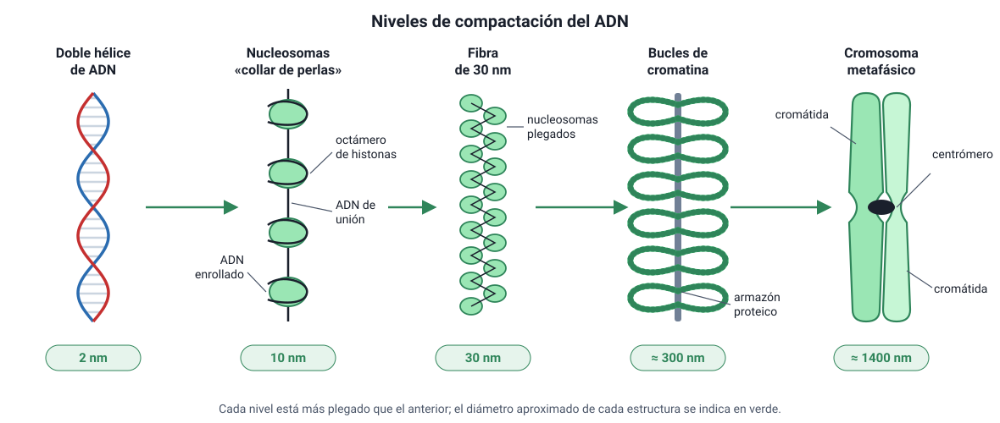
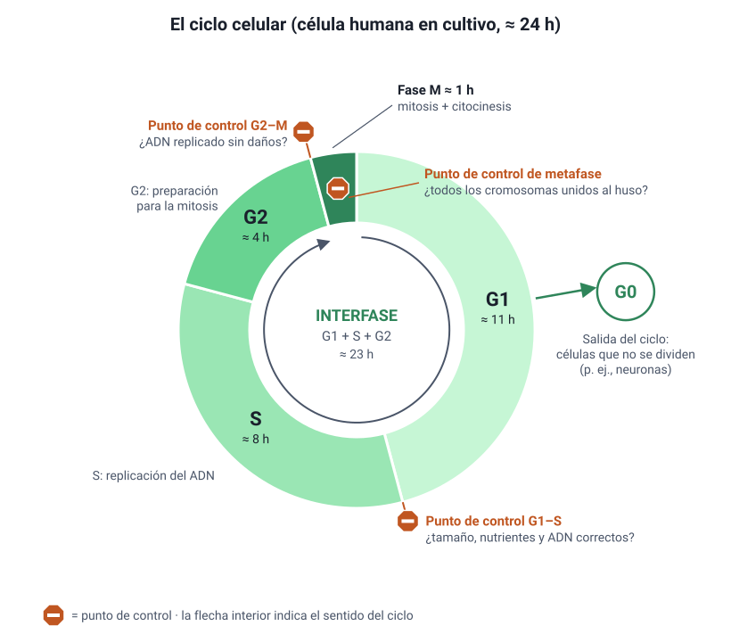
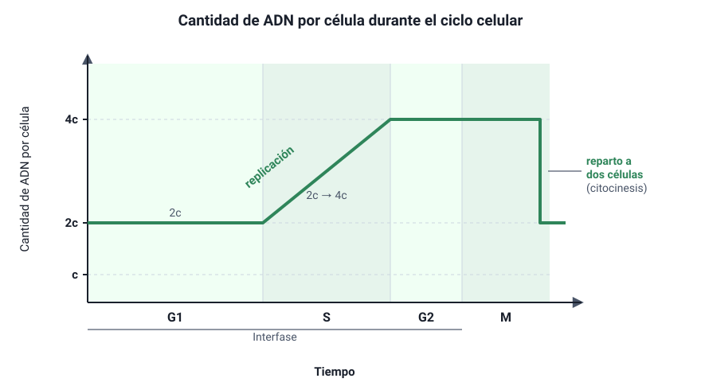
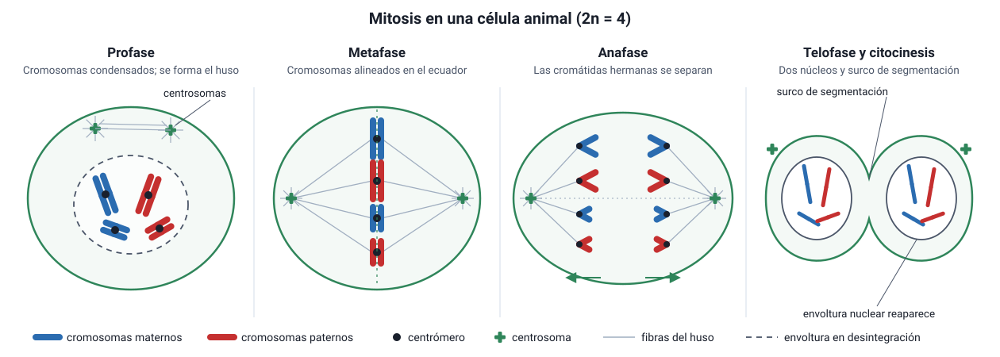
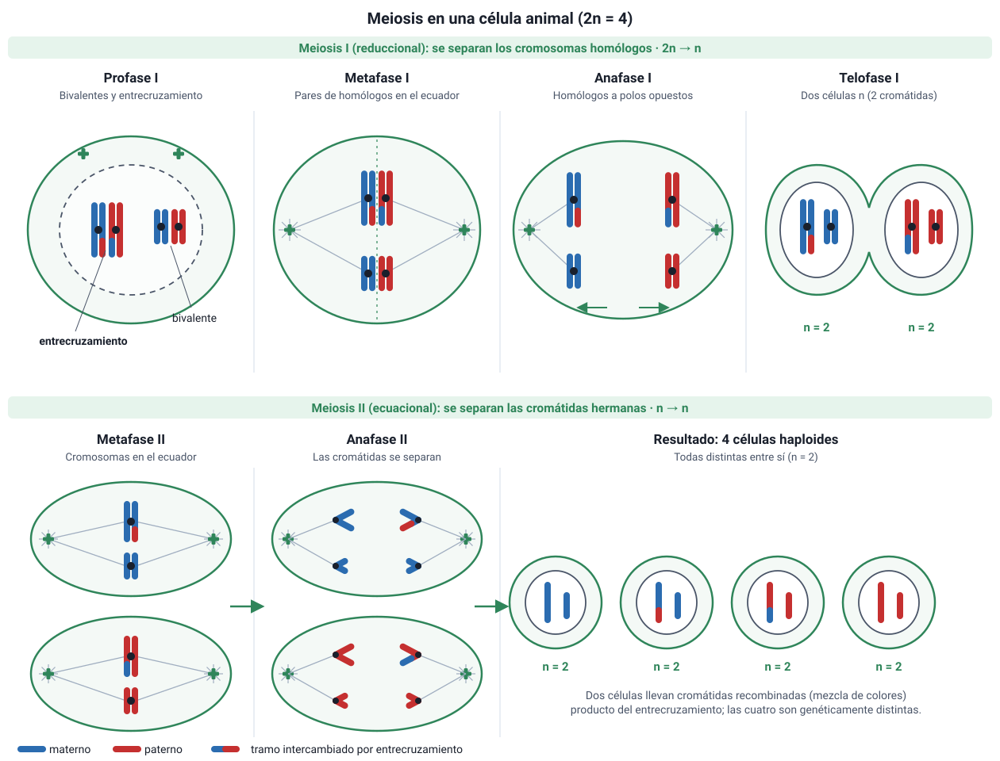

Capítulo 6: Ciclo celular, mitosis y meiosis
Área temática: Herencia y evolución · Temario DEMRE 2027: conocimientos 3.1 y 3.2
«Omnis cellula e cellula» (toda célula proviene de otra célula). — Rudolf Virchow
Qué vas a aprender en este capítulo
- Cómo se organiza el ADN en cromatina y cromosomas, y sus grados de compactación.
- Las etapas del ciclo celular: la interfase (G1, S, G2) y la mitosis (profase, metafase, anafase, telofase), y cómo cambia la cantidad de ADN en cada una.
- Cómo se controla el ciclo: los puntos de control G1–S, G2–M y de metafase.
- Por qué la mitosis es clave en el crecimiento, el desarrollo y la reparación de tejidos, y qué ocurre cuando el control falla: el cáncer.
- Las etapas de la meiosis I y II y cómo generan variabilidad genética.
- Qué pasa cuando los cromosomas no se separan bien: la no disyunción y las aneuploidías.
Cómo pregunta esto la PAES. En la prueba oficial de invierno de 2027 aparecieron preguntas sobre una toxina que altera la separación de los cromosomas, cómo reconocer la telofase al microscopio, un fármaco que detiene el ciclo al inicio de la fase S y la relación entre los quiasmas y las aneuploidías. La clave está en saber qué ocurre en cada etapa y qué estructura lo hace posible, y en usar ese conocimiento para predecir el efecto de una alteración.
Cómo usar este capítulo
- Lee la teoría (secciones 1 a 9). Cada título muestra los números de sus preguntas de práctica (IA).
- Revisa los Ejemplos PAES resueltos, con cálculos de duración de fases, conteo de cromosomas y cromátidas, y evaluación de conclusiones.
- Mide tu avance con la Evaluación formativa (20 preguntas) y las Preguntas de práctica del final, cada una con su respuesta comentada al estilo DEMRE.
1. Conceptos claveIA:123
| Concepto | Definición breve |
|---|---|
| Cromatina | Complejo de ADN y proteínas (principalmente histonas) que forma el material genético en el núcleo. |
| Nucleosoma | Unidad básica de la cromatina: un tramo de ADN enrollado alrededor de un núcleo de ocho histonas. |
| Cromosoma | Molécula de ADN con sus proteínas asociadas. Se hace visible al microscopio cuando se condensa durante la división. |
| Cromátidas hermanas | Las dos copias idénticas de un cromosoma después de la replicación, unidas por el centrómero. |
| Centrómero | Región de un cromosoma donde se unen las cromátidas hermanas y donde se forma el cinetocoro. |
| Cinetocoro | Complejo de proteínas del centrómero al que se unen los microtúbulos del huso. |
| Cromosomas homólogos | Par de cromosomas, uno de origen materno y otro paterno, con los mismos genes en el mismo orden (pueden tener alelos distintos). |
| Diploide (2n) | Célula con dos juegos de cromosomas. En humanos, 2n = 46. |
| Haploide (n) | Célula con un solo juego de cromosomas. En humanos, n = 23 (gametos). |
| Ciclo celular | Secuencia de etapas que atraviesa una célula desde que se forma hasta que se divide en dos. |
| Interfase | Etapa del ciclo entre dos divisiones: la célula crece, replica su ADN y se prepara para dividirse. |
| Mitosis | División del núcleo que produce dos núcleos genéticamente idénticos, con el mismo número de cromosomas que la célula original. |
| Citocinesis | División del citoplasma que separa las dos células hijas. |
| Punto de control | Mecanismo que verifica que una etapa del ciclo se completó correctamente antes de pasar a la siguiente. |
| Meiosis | Dos divisiones sucesivas que forman cuatro células haploides, genéticamente distintas, a partir de una célula diploide. |
| Entrecruzamiento (crossing-over) | Intercambio de segmentos entre cromátidas de cromosomas homólogos durante la profase I. |
| Quiasma | Punto visible donde las cromátidas homólogas quedan unidas tras el entrecruzamiento. |
| No disyunción | Error en que los cromosomas o cromátidas no se separan, lo que produce células con cromosomas de más o de menos. |
| Aneuploidía | Alteración del número de cromosomas por exceso o por falta de uno o más, como la trisomía 21. |
2. Cromatina y cromosomasIA:456
a. Un problema de empaqueIA:789
Si se estirara el ADN de una sola célula humana, mediría unos 2 metros. Ese ADN cabe en un núcleo de apenas 5 a 10 µm de diámetro. Para lograrlo, se empaqueta asociado a proteínas, formando la cromatina. El empaque cumple dos funciones:
- Ordena y protege el ADN dentro del núcleo.
- Regula qué genes se leen: las zonas más compactas se leen poco y las más sueltas, mucho.
b. Grados de compactaciónIA:101112

| Nivel | Diámetro aproximado | Descripción |
|---|---|---|
| Doble hélice de ADN | 2 nm | La molécula desnuda |
| Nucleosomas («collar de perlas») | 10 nm | El ADN da casi dos vueltas alrededor de un octámero de histonas (ocho proteínas). Entre un nucleosoma y otro queda un tramo de ADN de unión |
| Fibra de 30 nm | 30 nm | Los nucleosomas se pliegan y se acercan entre sí, con ayuda de otra histona (H1) |
| Bucles de cromatina | ≈ 300 nm | La fibra forma lazos anclados a un armazón de proteínas |
| Cromosoma metafásico | ≈ 1400 nm (1,4 µm) | Máxima condensación, alcanzada durante la mitosis. Cada cromátida es un cilindro muy compacto de bucles |
Según su grado de condensación en interfase, la cromatina puede ser:
- Eucromatina: poco condensada, con genes activos que se transcriben.
- Heterocromatina: muy condensada, con genes poco o nada activos. Se tiñe más intensamente.
¿Por qué los cromosomas se condensan antes de dividirse? Un ADN extendido de 2 metros se enredaría y se cortaría al repartirse entre dos células. Condensado en cromosomas compactos, se puede separar ordenadamente. El costo es que, mientras está tan compacto, casi no se puede leer: la célula transcribe muy poco durante la mitosis.
c. La estructura de un cromosomaIA:131415
Después de la replicación, en la fase S, cada cromosoma está formado por dos cromátidas hermanas idénticas, unidas en el centrómero por proteínas llamadas cohesinas. En el centrómero se forma el cinetocoro, donde se enganchan los microtúbulos del huso.
Cómo contar cromosomas y cromátidas
- Se cuentan cromosomas contando centrómeros.
- Un cromosoma no replicado tiene 1 cromátida; uno replicado tiene 2 cromátidas, pero sigue siendo un cromosoma.
- Una célula humana en G1 tiene 46 cromosomas y 46 cromátidas. En G2 sigue teniendo 46 cromosomas, pero ahora con 92 cromátidas.
d. Cromosomas homólogos, cariotipo y ploidíaIA:161718
Las células del cuerpo humano (células somáticas) tienen 46 cromosomas, organizados en 23 pares de homólogos. De cada par, un cromosoma viene de la madre y el otro del padre:
- 22 pares de autosomas, iguales en hombres y mujeres;
- 1 par de cromosomas sexuales: XX en la mujer y XY en el hombre.
Los homólogos llevan los mismos genes en las mismas posiciones, pero pueden tener versiones distintas (alelos). Por ejemplo, uno puede llevar el alelo para ojos cafés y el otro, el alelo para ojos azules.
El cariotipo es el ordenamiento de los cromosomas de una célula por tamaño y forma, fotografiados en metafase, cuando están más condensados. Sirve para detectar alteraciones en el número o la estructura de los cromosomas.
| Término | Significado | En humanos |
|---|---|---|
| 2n (diploide) | Dos juegos de cromosomas | Células somáticas: 2n = 46 |
| n (haploide) | Un juego de cromosomas | Gametos: n = 23 |
No confundas cromátidas hermanas con cromosomas homólogos.
- Las cromátidas hermanas son copias idénticas, producto de la replicación.
- Los homólogos son dos cromosomas distintos, uno materno y otro paterno, con los mismos genes, pero posiblemente con alelos diferentes.
La mitosis separa cromátidas hermanas. La meiosis I separa homólogos.
3. El ciclo celularIA:192021
El ciclo celular es la secuencia ordenada de eventos por la que una célula crece, duplica su contenido y se divide en dos células hijas. Tiene dos grandes etapas: la interfase y la fase M (mitosis más citocinesis).

a. La interfaseIA:222324
Aunque al microscopio la célula en interfase parece «quieta», es la etapa más activa y larga del ciclo: en una célula humana típica en cultivo, que se divide cada 24 horas, ocupa más del 90 % del tiempo.
| Fase | Qué ocurre |
|---|---|
| G1 (del inglés gap, intervalo) | La célula crece, sintetiza proteínas y organelos y cumple sus funciones. Es la fase más variable en duración. |
| S (síntesis) | Se replica el ADN: cada cromosoma pasa a tener dos cromátidas hermanas. En células animales también se duplican los centriolos. |
| G2 | La célula sigue creciendo, fabrica las proteínas necesarias para la división, como la tubulina del huso, y revisa que el ADN se haya copiado sin errores. |
La fase G0. Muchas células salen del ciclo desde G1 y entran en un estado de no división, llamado G0, en el que cumplen su función especializada.
- Algunas quedan en G0 de forma casi permanente, como la mayoría de las neuronas y las fibras musculares cardíacas.
- Otras pueden volver al ciclo si reciben una señal. Por ejemplo, los hepatocitos se dividen para regenerar el hígado cuando se extirpa una parte.
- Otras nunca entran en G0 y se dividen constantemente, como las células madre de la piel, de la médula ósea o del epitelio intestinal.
b. La cantidad de ADN a lo largo del cicloIA:252627
Se suele llamar c a la cantidad de ADN de un juego de cromosomas sin replicar. Una célula diploide en G1 tiene 2c.
| Etapa | Cromosomas (humano) | Cromátidas por cromosoma | Cantidad de ADN |
|---|---|---|---|
| G1 | 46 | 1 | 2c |
| S | 46 | Pasa de 1 a 2 | Aumenta de 2c a 4c |
| G2 | 46 | 2 | 4c |
| Mitosis (hasta la metafase) | 46 | 2 | 4c |
| Cada célula hija, después de la citocinesis | 46 | 1 | 2c |

Gráficos de ADN en la PAES: el tramo en que el ADN sube de 2c a 4c es la fase S. El tramo en que baja de 4c a 2c corresponde al final de la división, cuando el material se reparte entre dos células. Si el gráfico baja dos veces, primero de 4c a 2c y luego de 2c a c, se trata de una meiosis (sección 7).
c. Otra forma de estudiar el ciclo: contar célulasIA:282930
En un cultivo en el que las células se dividen sin sincronizar, la proporción de células en cada fase es aproximadamente igual a la fracción del ciclo que ocupa esa fase. Si de 200 células observadas al microscopio, 10 están en mitosis, entonces la mitosis ocupa cerca del 10/200 = 5 % del ciclo. Si el ciclo dura 24 horas, la mitosis dura unos 0,05 × 24 ≈ 1,2 horas.
Este razonamiento aparece en preguntas con datos: se entrega el número de células en cada fase y se pide estimar su duración.
4. Mitosis y citocinesisIA:313233
La mitosis reparte el ADN replicado en dos núcleos idénticos, cada uno con el mismo número de cromosomas que la célula original. Es un proceso continuo, pero para estudiarlo se divide en cuatro etapas, que se reconocen por lo que se ve al microscopio.

a. Las etapas de la mitosisIA:343536
| Etapa | Qué ocurre | Cómo reconocerla al microscopio |
|---|---|---|
| Profase | La cromatina se condensa en cromosomas visibles, cada uno con dos cromátidas. Los centrosomas se separan hacia los polos y empieza a formarse el huso mitótico de microtúbulos. Al final se desintegra la envoltura nuclear (carioteca) y desaparece el nucléolo. En algunos textos esta última parte se llama prometafase: los microtúbulos se unen a los cinetocoros | Cromosomas visibles como filamentos; el núcleo pierde su borde |
| Metafase | Los cromosomas se alinean en el plano ecuatorial de la célula (placa metafásica), cada uno con los cinetocoros de sus dos cromátidas unidos a microtúbulos de polos opuestos | Cromosomas alineados en el centro. Es la etapa en que mejor se ven y se cuentan, por eso se usa para el cariotipo |
| Anafase | Se degradan las cohesinas que unían las cromátidas hermanas, que se separan y son arrastradas hacia polos opuestos al acortarse los microtúbulos del cinetocoro. Desde ese momento, cada cromátida es un cromosoma independiente | Dos grupos de cromosomas en forma de V moviéndose hacia los polos |
| Telofase | Los cromosomas llegan a los polos y se descondensan. Se forman dos envolturas nucleares y reaparecen los nucléolos. El huso se desarma | Dos núcleos en formación en los extremos de la célula, que suele empezar a estrangularse |
Cuántos cromosomas hay en la anafase. En la anafase de una célula humana hay momentáneamente 92 cromosomas en la célula: las 92 cromátidas separadas cuentan como cromosomas independientes, 46 hacia cada polo. La cantidad de ADN sigue siendo 4c hasta que se completa la citocinesis.
b. El huso mitóticoIA:373839
El huso está formado por microtúbulos que se organizan desde los centrosomas. Hay de varios tipos:
- Microtúbulos del cinetocoro: se unen a los cromosomas y los arrastran hacia los polos.
- Microtúbulos polares: se superponen en el centro y empujan los polos hacia afuera, alargando la célula.
- Ásteres: irradian hacia la membrana y orientan el huso.
Fármacos que atacan el huso. Como la mitosis depende de los microtúbulos, algunos fármacos contra el cáncer actúan sobre ellos. La vinblastina y la vincristina, obtenidas de la planta vinca, impiden que los microtúbulos se formen, igual que la colchicina. El taxol (paclitaxel), obtenido del tejo, hace lo contrario: los estabiliza e impide que se desarmen. En ambos casos las células quedan detenidas en metafase, porque el huso no funciona, y terminan muriendo. Las células que se dividen rápido son las más afectadas. Por eso estos fármacos atacan a los tumores, pero también a las células del pelo y de la médula ósea.
c. CitocinesisIA:404142
La citocinesis divide el citoplasma. Suele empezar durante la anafase o la telofase y es distinta en las células animales y vegetales:
| Célula animal | Célula vegetal |
|---|---|
| Un anillo contráctil de actina y miosina estrangula la célula desde afuera hacia adentro y forma un surco de segmentación | La pared rígida impide estrangularla. Vesículas del Golgi con materiales de pared se acumulan en el centro y se fusionan, formando una placa celular que crece desde el centro hacia afuera y se convierte en la nueva pared |
Pistas para reconocer el tipo de célula: si en una célula en división no hay centriolos y la citocinesis ocurre con placa celular, es vegetal. Un fármaco que bloquea la actina, como la citocalasina, impide la citocinesis animal, pero no la mitosis: el resultado es una célula con dos núcleos.
d. Resultado de la mitosisIA:434445
Una célula diploide (2n) produce dos células diploides (2n), genéticamente idénticas entre sí y a la célula madre, salvo que ocurran mutaciones. La mitosis conserva la información genética.
Los procariontes no hacen mitosis: se dividen por fisión binaria. Replican su cromosoma circular, las dos copias se separan a medida que la célula se alarga y la célula se divide en dos.
5. Control del ciclo celular: los puntos de controlIA:464748
El ciclo celular no avanza «automáticamente». Funciona como una línea de montaje con inspectores: en ciertos momentos, la célula verifica que todo esté en orden antes de seguir. Esos momentos son los puntos de control. El temario DEMRE pide conocer tres.
| Punto de control | Qué verifica | Si algo está mal… |
|---|---|---|
| G1–S (al final de G1) | Que la célula tenga el tamaño adecuado, suficientes nutrientes, señales que la estimulen a dividirse (factores de crecimiento) y un ADN sin daños | Se detiene en G1 para reparar el ADN, o entra en G0. Si el daño es irreparable, puede activar la apoptosis (muerte celular programada). Es el punto de «no retorno»: si se supera, la célula se compromete a dividirse |
| G2–M (al final de G2) | Que el ADN se haya replicado completo y sin errores | Se detiene la entrada a mitosis hasta que se repare el ADN |
| De metafase (del huso) | Que todos los cinetocoros estén unidos a microtúbulos de ambos polos | La anafase no comienza. Así se evita que una célula hija quede con cromosomas de más o de menos |
Razonar con alteraciones. Si una toxina desactiva el punto de control de metafase, las cromátidas se pueden separar aunque algunos cromosomas no estén bien unidos al huso: se producirán células hijas con números anormales de cromosomas. Si además se inhiben las moléculas que inducen la apoptosis, esas células anormales no morirán y podrían seguir dividiéndose sin control. Este es el razonamiento de una pregunta de la prueba oficial de invierno de 2027.
a. Ciclinas y quinasas: el motor del cicloIA:495051
El avance del ciclo depende de un grupo de proteínas reguladoras:
- Quinasas dependientes de ciclinas (Cdk): enzimas que activan o desactivan otras proteínas agregándoles grupos fosfato. Están siempre presentes, pero solo funcionan cuando se unen a una ciclina.
- Ciclinas: proteínas cuya concentración sube y baja a lo largo del ciclo. Se fabrican en una etapa y se destruyen en la siguiente.
Cada combinación de ciclina y Cdk impulsa una transición: una lleva la célula de G1 a S y otra, de G2 a mitosis. El complejo que dispara la mitosis se llamó MPF, «factor promotor de la fase M».
Un experimento clásico: la fusión de células. En 1970, los investigadores Rao y Johnson fusionaron células que estaban en distintas fases del ciclo:
- Al fusionar una célula en fase S con una en G1, el núcleo en G1 empezó a replicar su ADN antes de tiempo.
- Al fusionar una célula en mitosis con una en interfase, el núcleo en interfase condensó su cromatina de inmediato, como si entrara en mitosis.
Conclusión: el citoplasma contiene señales químicas que controlan el avance del ciclo. Esas señales resultaron ser los complejos ciclina-Cdk.
Otro experimento: las ciclinas del erizo de mar. A comienzos de la década de 1980, Tim Hunt estudió embriones de erizo de mar, que se dividen rápido y en forma sincronizada. Encontró una proteína que se acumulaba durante cada interfase y desaparecía bruscamente al final de cada mitosis, y la llamó ciclina. Por los descubrimientos sobre el control del ciclo, Hunt, Paul Nurse y Leland Hartwell recibieron el Premio Nobel de Medicina en 2001.
b. Genes que aceleran y genes que frenanIA:525354
El control del ciclo depende de dos grupos de genes, que funcionan como el acelerador y el freno de un auto:
| Tipo | Función normal | Cuando mutan… | Ejemplos |
|---|---|---|---|
| Protooncogenes (el acelerador) | Codifican proteínas que estimulan la división en respuesta a señales: receptores de factores de crecimiento, proteínas que transmiten la señal | Se convierten en oncogenes: estimulan la división aunque no haya señal, como un acelerador trabado. Basta con que una copia mute | RAS, receptor de EGF |
| Genes supresores de tumores (el freno) | Codifican proteínas que detienen el ciclo si hay problemas, reparan el ADN o inducen la apoptosis | Se pierde el freno. En general deben fallar las dos copias | TP53 (proteína p53, «guardián del genoma»), RB, BRCA1 |
La proteína p53 se activa cuando el ADN está dañado. Detiene el ciclo en G1 para que se repare, y si el daño es muy grave, ordena la apoptosis. Está alterada en cerca de la mitad de los cánceres humanos. Sin p53, una célula con el ADN dañado sigue dividiéndose y acumula más mutaciones.
6. Importancia de la mitosis: crecimiento, reparación y cáncerIA:5556
a. Para qué sirve la mitosisIA:575859
La mitosis produce células genéticamente idénticas, y eso la hace indispensable en tres procesos:
| Proceso | Ejemplo |
|---|---|
| Crecimiento y desarrollo | Un ser humano comienza como una sola célula, el cigoto. Por mitosis sucesivas llega a tener decenas de billones de células |
| Renovación de tejidos | La piel reemplaza continuamente sus capas externas. El epitelio intestinal se renueva en pocos días. La médula ósea produce millones de glóbulos rojos por segundo |
| Reparación de heridas | Al cortarse la piel o fracturarse un hueso, las células vecinas se dividen para cerrar la lesión |
| Reproducción asexual | Organismos unicelulares eucariontes, como levaduras y amebas, y plantas que se propagan por esquejes o tubérculos, forman descendientes idénticos (clones) |
Que las células hijas sean idénticas conserva la información genética: cada célula del cuerpo tiene el mismo genoma que el cigoto.
b. El cáncer: cuando se pierde el controlIA:606162
El cáncer es un conjunto de enfermedades en que un grupo de células se divide sin control, ignorando las señales y los puntos de control del ciclo. Se origina por mutaciones acumuladas en los genes que regulan el ciclo: protooncogenes que se vuelven oncogenes y genes supresores que se inactivan (sección 5.b).
Características de las células cancerosas:
- se dividen sin necesitar señales externas (factores de crecimiento);
- ignoran los puntos de control y siguen dividiéndose con el ADN dañado;
- evaden la apoptosis;
- no se detienen al tocar otras células: en un cultivo forman capas amontonadas en vez de una sola capa (pierden la inhibición por contacto);
- pueden dividirse indefinidamente;
- estimulan la formación de vasos sanguíneos que las alimentan;
- en tumores malignos, invaden los tejidos vecinos y se diseminan por la sangre o la linfa hasta formar tumores en otros órganos (metástasis).
| Tumor benigno | Tumor maligno (cáncer) |
|---|---|
| Crece en un lugar, generalmente encapsulado | Invade tejidos vecinos |
| No produce metástasis | Puede producir metástasis |
| Suele extirparse por completo | Es más difícil de tratar |
El cáncer requiere varias mutaciones. En general se necesita que una misma célula acumule varias mutaciones en distintos genes para que se vuelva cancerosa. Eso explica por qué la mayoría de los cánceres son más frecuentes con la edad: con los años, las células acumulan más mutaciones. Los carcinógenos, que dañan el ADN, aumentan la velocidad de ese proceso. Algunos ejemplos son el humo del tabaco, la radiación ultravioleta y algunos virus, como el virus del papiloma humano (VPH).
La hipótesis de los «dos golpes». En 1971, Alfred Knudson estudió el retinoblastoma, un cáncer de ojo infantil. Observó que los niños con la forma hereditaria desarrollaban el tumor antes y a menudo en ambos ojos, mientras que la forma no hereditaria aparecía más tarde y en un solo ojo. Propuso que se necesitan dos mutaciones, una en cada copia del gen RB. Quien hereda una copia ya mutada necesita solo un golpe más. Es un modelo excelente de cómo los datos de una población (edad de aparición) permiten inferir un mecanismo genético. Además explica por qué los genes supresores suelen necesitar que fallen las dos copias.
c. Prevención y tratamientoIA:636465
- Prevención: evitar el tabaco, protegerse del sol, vacunarse contra el VPH y la hepatitis B, mantener una dieta saludable y hacer los exámenes preventivos, como el Papanicolaou o la mamografía, que detectan lesiones tempranas.
- Tratamiento: cirugía; radioterapia, que daña el ADN de las células en división; quimioterapia, con fármacos que atacan la replicación o el huso mitótico (sección 4.b); y terapias dirigidas, que bloquean proteínas específicas de las células tumorales.
Como la quimioterapia actúa sobre las células que se dividen rápido, también afecta a los tejidos sanos de renovación rápida. Eso explica sus efectos adversos: caída del pelo, anemia y lesiones en la mucosa digestiva.
7. La meiosisIA:6667
a. ¿Por qué se necesita la meiosis?IA:686970
En la reproducción sexual, dos gametos se unen en la fecundación. Si cada gameto tuviera 46 cromosomas, el cigoto tendría 92, y el número se duplicaría en cada generación. La meiosis resuelve el problema: reduce a la mitad el número de cromosomas, de 2n a n. Así, al unirse dos gametos haploides (n = 23), se restablece el número diploide (2n = 46).
La meiosis ocurre en las células germinales de las gónadas: los testículos y los ovarios. Consiste en dos divisiones sucesivas, meiosis I y meiosis II, precedidas por una sola replicación del ADN, en la fase S de la interfase previa.

b. Meiosis I: la división reduccionalIA:717273
Se separan los cromosomas homólogos.
| Etapa | Qué ocurre |
|---|---|
| Profase I | Es la etapa más larga y compleja. Los cromosomas se condensan y los homólogos se aparean a lo largo de toda su longitud (sinapsis), unidos por una estructura de proteínas llamada complejo sinaptonémico. Cada par apareado se llama bivalente o tétrada (2 cromosomas, 4 cromátidas). Entre cromátidas de homólogos ocurre el entrecruzamiento, que intercambia segmentos de ADN. Los puntos de intercambio se ven como quiasmas, que mantienen unidos a los homólogos hasta la anafase I. Al final se desintegra la envoltura nuclear |
| Metafase I | Los pares de homólogos se alinean en el plano ecuatorial. La orientación de cada par, con el cromosoma materno hacia uno u otro polo, es al azar |
| Anafase I | Los homólogos se separan y van a polos opuestos. Las cromátidas hermanas siguen unidas por el centrómero |
| Telofase I y citocinesis | Se forman dos células haploides (n). Cada cromosoma todavía tiene dos cromátidas, que ya no son idénticas si hubo entrecruzamiento |
c. Meiosis II: la división ecuacionalIA:747576
Es muy parecida a una mitosis, pero en células haploides, y no hay replicación previa.
| Etapa | Qué ocurre |
|---|---|
| Profase II | Se forma un nuevo huso en cada célula |
| Metafase II | Los cromosomas, cada uno con dos cromátidas, se alinean en el ecuador |
| Anafase II | Se separan las cromátidas hermanas |
| Telofase II y citocinesis | Se forman en total cuatro células haploides (n), genéticamente distintas entre sí y distintas de la célula original |
d. El ADN y los cromosomas a lo largo de la meiosisIA:777879
| Momento (humano) | Cromosomas | Cromátidas por cromosoma | ADN |
|---|---|---|---|
| Célula germinal en G1 | 46 (2n) | 1 | 2c |
| Después de la fase S y en la profase I | 46 (2n) | 2 | 4c |
| Cada célula tras la meiosis I | 23 (n) | 2 | 2c |
| Cada célula tras la meiosis II | 23 (n) | 1 | c |
Dónde se reduce el número de cromosomas. La ploidía se reduce en la meiosis I, porque se separan los homólogos y cada célula queda con un solo juego. La meiosis II no cambia el número de cromosomas (sigue siendo n): solo separa cromátidas y reduce el ADN de 2c a c. Por eso se dice que la meiosis I es reduccional y la meiosis II, ecuacional.
8. Meiosis y variabilidad genéticaIA:808182
Salvo los gemelos idénticos, no hay dos personas con la misma combinación de genes, ni siquiera los hermanos. La meiosis y la fecundación son las responsables. Hay tres fuentes de variabilidad en la reproducción sexual.
a. Entrecruzamiento (recombinación) en la profase IIA:838485
Durante la sinapsis, las cromátidas de cromosomas homólogos intercambian segmentos. Resultado: cada cromátida queda como un mosaico de ADN materno y paterno, con combinaciones nuevas de alelos que no existían en ninguno de los dos cromosomas originales. En humanos ocurren en promedio uno a tres entrecruzamientos por par de homólogos en cada meiosis.
Los quiasmas tienen además una función mecánica: mantienen unidos a los homólogos hasta la anafase I, lo que asegura que se separen correctamente. Por eso se ha observado que menos quiasmas se asocia con más errores de separación (no disyunción), como planteó una pregunta de la prueba oficial de invierno de 2027.
b. Permutación cromosómica (segregación independiente) en la metafase IIA:868788
En la metafase I, cada par de homólogos se orienta al azar, con el cromosoma materno hacia uno u otro polo, independientemente de los otros pares. El número de combinaciones posibles de cromosomas en los gametos es 2n, donde n es el número de pares:
| Organismo | Pares de homólogos (n) | Combinaciones (2n) |
|---|---|---|
| Célula hipotética con 2n = 4 | 2 | 22 = 4 |
| Mosca Drosophila, 2n = 8 | 4 | 24 = 16 |
| Ser humano, 2n = 46 | 23 | 223 ≈ 8,4 millones |
Y eso sin contar el entrecruzamiento, que multiplica aún más las posibilidades.
c. Fecundación al azarIA:899091
Cualquier espermatozoide puede fecundar a cualquier ovocito. Solo por segregación independiente, una pareja humana puede formar unos 8,4 millones × 8,4 millones ≈ 70 billones de combinaciones distintas de cigotos, y el entrecruzamiento las multiplica todavía más.
¿Por qué importa la variabilidad? Una población con individuos genéticamente diversos tiene más probabilidades de que algunos sobrevivan ante un cambio ambiental, como una enfermedad nueva o un cambio de clima. La variabilidad es la materia prima de la selección natural (capítulo 9). En cambio, los organismos que se reproducen solo asexualmente forman clones idénticos, que son vulnerables al mismo peligro.
Comparar reproducción asexual y sexual en la PAES. En la prueba oficial de invierno de 2027 se comparó la partenogénesis (desarrollo de crías sin fecundación) cuando se origina por mitosis y cuando se origina por meiosis. El razonamiento clave es que, si el proceso incluye meiosis, hay entrecruzamiento y segregación al azar, así que la descendencia tendrá más variabilidad que si solo hubo mitosis, que produce clones.
9. Errores en la meiosis y comparación con la mitosisIA:9293
a. No disyunción y aneuploidíasIA:949596
La no disyunción ocurre cuando los cromosomas no se separan correctamente:
- en la meiosis I, un par de homólogos va completo a una sola célula;
- en la meiosis II, las dos cromátidas hermanas van a la misma célula.
El resultado son gametos con un cromosoma de más (n + 1) o de menos (n − 1). Si uno de ellos participa en la fecundación, el cigoto tendrá 2n + 1 (trisomía) o 2n − 1 (monosomía). A estas alteraciones del número de cromosomas se las llama aneuploidías.
| Condición | Cariotipo | Frecuencia aproximada en nacidos vivos |
|---|---|---|
| Síndrome de Down (trisomía 21) | 47, +21 | 1 de cada 800 |
| Síndrome de Edwards (trisomía 18) | 47, +18 | 1 de cada 6000 |
| Síndrome de Patau (trisomía 13) | 47, +13 | 1 de cada 15 000 |
| Síndrome de Klinefelter | 47, XXY | 1 de cada 1000 hombres |
| Síndrome de Turner (monosomía) | 45, X | 1 de cada 5000 mujeres |
La mayoría de las aneuploidías en otros cromosomas son incompatibles con el desarrollo y terminan en abortos espontáneos. Las trisomías viables afectan a cromosomas pequeños, que tienen menos genes.
La edad materna y la trisomía 21. El riesgo de tener un hijo con síndrome de Down aumenta con la edad de la madre. Distintas fuentes lo sitúan aproximadamente en 1 en 1500 a los 20 años, 1 en 385 a los 35, 1 en 105 a los 40 y 1 en 30 a los 45. Una explicación es que los ovocitos quedan detenidos en la profase I desde antes del nacimiento y completan la meiosis I recién en la ovulación, décadas después. Con los años, las proteínas que mantienen unidos a los homólogos se deterioran y aumenta la no disyunción.
Es un buen ejemplo para practicar lectura de datos. Una correlación entre la edad y la trisomía no demuestra por sí sola el mecanismo; el mecanismo se apoya en otras evidencias.
b. Mitosis y meiosis: comparaciónIA:979899
| Característica | Mitosis | Meiosis |
|---|---|---|
| Dónde ocurre | Células somáticas (y células germinales antes de la meiosis) | Células germinales de las gónadas |
| Número de divisiones | Una | Dos (meiosis I y II) |
| Replicación del ADN previa | Una | Una (solo antes de la meiosis I) |
| Apareamiento de homólogos | No | Sí, en la profase I (sinapsis, bivalentes) |
| Entrecruzamiento | No (normalmente) | Sí, en la profase I |
| Qué se alinea en la metafase | Cromosomas individuales | Metafase I: pares de homólogos; metafase II: cromosomas individuales |
| Qué se separa en la anafase | Cromátidas hermanas | Anafase I: homólogos; anafase II: cromátidas hermanas |
| Células resultantes | 2, diploides (2n) | 4, haploides (n) |
| Genéticamente… | Idénticas a la célula madre | Distintas entre sí y de la célula madre |
| Función | Crecimiento, reparación, renovación, reproducción asexual | Formación de gametos (o esporas) y variabilidad genética |
Para identificar una etapa en un dibujo con 2n = 4:
- Si hay pares de homólogos juntos en el ecuador, es la metafase I.
- Si hay 4 cromosomas sueltos en el ecuador, cada uno con 2 cromátidas, es la metafase mitótica.
- Si hay 2 cromosomas en el ecuador, cada uno con 2 cromátidas, es la metafase II.
Luego verifica si lo que se separa son homólogos (anafase I) o cromátidas (anafase mitótica o anafase II).
Ejemplos PAES resueltos
Cuatro preguntas del estilo de la PAES sobre el ciclo celular y la meiosis, resueltas con el guion DEMRE. Intenta responder antes de leer la resolución.
Ejemplo 1 · Habilidad: Procesar y analizar la evidencia
En un cultivo de células humanas que se dividen de forma no sincronizada, con un ciclo celular de 20 horas, una estudiante observó al microscopio 400 células y registró la etapa de cada una:
| Etapa | Interfase | Profase | Metafase | Anafase | Telofase |
|---|---|---|---|---|---|
| N.º de células | 380 | 10 | 5 | 2 | 3 |
¿Cuánto dura aproximadamente la mitosis en estas células?
- A) 0,5 horas
- B) 1 hora
- C) 2 horas
- D) 5 horas
Resolución. Esta pregunta evalúa la habilidad de procesar y analizar la evidencia: usar datos numéricos para calcular una variable. En un cultivo no sincronizado, la fracción de células en una etapa es proporcional a la duración de esa etapa. Hay 10 + 5 + 2 + 3 = 20 células en mitosis de 400, es decir, 20/400 = 0,05 (5 %). Entonces la mitosis dura 0,05 × 20 horas = 1 hora. Clave: B.
- A corresponde a considerar solo la profase (10/400 × 20 = 0,5 h). Es un error de cálculo típico, porque omite parte de las etapas.
- C duplica el resultado, por ejemplo al usar 200 células como total. Error de cálculo típico.
- D resulta de confundir el porcentaje (5 %) con horas. Error de cálculo típico.
Qué hay que saber y saber hacer: reconocer las etapas de la mitosis y aplicar la proporción duración de la etapa = (células en la etapa ÷ total) × duración del ciclo. Dato: con los mismos datos se deduce que la interfase ocupa el 95 % del ciclo (19 horas).
Ejemplo 2 · Habilidad: Planificar y conducir una investigación
Un laboratorio necesita sincronizar un cultivo de células para que todas inicien la replicación del ADN al mismo tiempo. Busca un fármaco que detenga el ciclo de forma reversible justo antes de la fase S.
¿Cuál de los siguientes mecanismos de acción cumpliría ese objetivo?
- A) Estabilizar los microtúbulos e impedir que se desarme el huso.
- B) Inhibir el complejo ciclina-Cdk que permite el paso de G1 a S.
- C) Impedir la formación del anillo contráctil de actina y miosina.
- D) Bloquear la degradación de las cohesinas entre cromátidas hermanas.
Resolución. Esta pregunta evalúa la habilidad de planificar y conducir una investigación, en su criterio de seleccionar un procedimiento adecuado para un objetivo. El paso de G1 a S depende de que se active un complejo ciclina-Cdk. Si se inhibe, la célula queda detenida al final de G1. Al retirar el fármaco, todas las células entran juntas en S. Clave: B.
- A actúa en la mitosis, porque bloquea el huso. Detendría las células en metafase. Condición incompleta: detiene el ciclo, pero en la etapa equivocada.
- C afecta la citocinesis, que ocurre al final de la división. Variable equivocada.
- D impide que las cromátidas se separen en la anafase. Variable equivocada.
Qué hay que saber y saber hacer: ubicar cada estructura o molécula en la etapa del ciclo en que actúa, y relacionarla con dónde quedaría detenida la célula si se bloquea. Dato: en la prueba oficial de invierno de 2027 apareció una pregunta con este mismo objetivo experimental, sincronizar células al inicio de la fase S.
Ejemplo 3 · Habilidad: Procesar y analizar la evidencia
Una célula de una especie con 2n = 8 se encuentra en metafase I de la meiosis.
¿Cuántos cromosomas y cuántas cromátidas tendrá cada célula al terminar la meiosis I?
- A) 4 cromosomas y 4 cromátidas.
- B) 4 cromosomas y 8 cromátidas.
- C) 8 cromosomas y 8 cromátidas.
- D) 8 cromosomas y 16 cromátidas.
Resolución. Esta pregunta evalúa la habilidad de procesar y analizar la evidencia, a partir de un modelo del proceso. En la metafase I la célula tiene 8 cromosomas replicados (16 cromátidas), organizados en 4 pares de homólogos. En la anafase I se separan los homólogos, no las cromátidas. Así, cada célula recibe 4 cromosomas (n = 4), cada uno todavía con 2 cromátidas: 4 × 2 = 8 cromátidas. Clave: B.
- A describe cada célula al final de la meiosis II. Anacronismo: correcto, pero en otra etapa.
- C supone que la meiosis I no reduce el número de cromosomas. Condición incompleta.
- D es la situación de la célula antes de dividirse. Anacronismo.
Qué hay que saber y saber hacer: contar cromosomas por centrómeros, saber que la meiosis I separa homólogos (reduce la ploidía) y que la meiosis II separa cromátidas. Dato: después de la meiosis I las células son haploides, aunque sus cromosomas aún tengan dos cromátidas.
Ejemplo 4 · Habilidad: Evaluar
Un estudio en ratones encontró que las hembras con menos quiasmas en sus ovocitos producían más embriones con aneuploidías. Un estudiante concluyó: «Los quiasmas causan que los cromosomas se separen correctamente en todos los animales».
¿Cuál es la principal limitación de esta conclusión?
- A) Afirma una relación inversa a la que muestran los datos del estudio.
- B) Los quiasmas se forman en la mitosis, no en la meiosis de los ovocitos.
- C) Extiende a todos los animales y a una causa lo que es una asociación en ratones.
- D) Las aneuploidías no pueden deberse a errores en la separación de cromosomas.
Resolución. Esta pregunta evalúa la habilidad de evaluar: juzgar los alcances de una conclusión. El estudio muestra una asociación: menos quiasmas, más aneuploidías. Eso es coherente con la función de los quiasmas, que mantienen unidos a los homólogos hasta la anafase I. Pero la conclusión tiene dos problemas: generaliza a todos los animales y afirma causalidad a partir de una correlación en una sola especie. Clave: C.
- A es incorrecta: la conclusión va en el mismo sentido que los datos. Relación inversa o inexistente.
- B es falsa: los quiasmas se forman en la profase I de la meiosis.
- D es falsa: la no disyunción es precisamente la causa principal de las aneuploidías.
Qué hay que saber y saber hacer: relacionar los quiasmas con la correcta segregación de los homólogos, y distinguir asociación de causalidad y muestra de generalización (capítulo 1). Dato: esta es la misma relación que evaluó una pregunta de la prueba oficial de invierno de 2027.
Evaluación formativa
Veinte preguntas sobre el ciclo celular, la mitosis y la meiosis. Responde todas y luego revisa las explicaciones.
1. ¿Cuál es la unidad básica de empaquetamiento de la cromatina?
- El centrómero.
- El nucleosoma.
- El cinetocoro.
- El cromosoma.
Respuesta correcta: B
El nucleosoma, formado por ADN enrollado en un octámero de histonas, es el primer nivel de compactación. El centrómero y el cinetocoro son regiones del cromosoma, y el cromosoma es el nivel más compacto, no la unidad básica.
2. Una célula humana en G2, ¿cuántos cromosomas y cuántas cromátidas tiene?
- 23 cromosomas y 46 cromátidas.
- 46 cromosomas y 46 cromátidas.
- 92 cromosomas y 92 cromátidas.
- 46 cromosomas y 92 cromátidas.
Respuesta correcta: D
Tras la fase S cada cromosoma tiene dos cromátidas, pero el número de cromosomas (centrómeros) sigue siendo 46. B corresponde a G1. A confunde con una célula haploide. C cuenta cada cromátida como un cromosoma, lo que solo ocurre durante la anafase.
3. En un gráfico de la cantidad de ADN por célula a lo largo del ciclo, ¿en qué fase ocurre el tramo en que el ADN aumenta de 2c a 4c?
- En la fase S.
- En la fase G1.
- En la anafase.
- En la citocinesis.
Respuesta correcta: A
La replicación del ADN ocurre en la fase S. En G1 el ADN se mantiene en 2c. En la anafase se separan cromátidas ya replicadas. En la citocinesis el ADN se reparte y cada célula baja a 2c.
4. La mayoría de las neuronas adultas no se dividen. ¿En qué estado del ciclo se encuentran?
- En la fase S, replicando continuamente su ADN.
- Detenidas en metafase por falta de huso mitótico.
- En G0, fuera del ciclo, cumpliendo su función.
- En G2, esperando la señal para iniciar la mitosis.
Respuesta correcta: C
Las células que dejan de dividirse salen del ciclo desde G1 y entran en G0, donde cumplen su función especializada. Las demás alternativas describen células que sí están en el ciclo.
5. Un estudiante observa una célula con dos zonas en que se están formando nuevas envolturas nucleares y cromosomas que se descondensan. ¿En qué etapa está?
- Profase.
- Metafase.
- Telofase.
- Anafase.
Respuesta correcta: C
En la telofase se reorganizan dos envolturas nucleares y los cromosomas se descondensan. En la profase ocurre lo contrario: la envoltura se desintegra y los cromosomas se condensan. En la metafase los cromosomas están alineados en el ecuador y en la anafase se desplazan hacia los polos.
6. ¿Qué ocurre exactamente al iniciarse la anafase mitótica?
- Se separan las cromátidas hermanas hacia polos opuestos.
- Se separan los cromosomas homólogos hacia polos opuestos.
- Los cromosomas se alinean en el plano ecuatorial.
- Se desintegra la envoltura nuclear de la célula.
Respuesta correcta: A
En la anafase se degradan las cohesinas y se separan las cromátidas hermanas. B ocurre en la anafase I de la meiosis. C corresponde a la metafase y D, a la profase.
7. Un fármaco impide la polimerización de los microtúbulos. ¿En qué etapa quedarán detenidas las células tratadas?
- En G1, antes de replicar el ADN.
- En la fase S, durante la replicación.
- En la citocinesis, sin estrangularse.
- En la metafase, sin separar cromátidas.
Respuesta correcta: D
Sin microtúbulos no se forma el huso. El punto de control de metafase detecta cinetocoros sin unir y la célula no entra en anafase. La replicación (A y B) no depende del huso. C depende de la actina.
8. En una célula vegetal, ¿cómo ocurre la citocinesis?
- Por un anillo contráctil de actina que estrangula la célula.
- Por una placa celular formada desde vesículas del Golgi.
- Por fisión binaria del cromosoma circular de la célula.
- Por la separación de los centriolos hacia los polos.
Respuesta correcta: B
La pared rígida impide el estrangulamiento. Vesículas del Golgi forman una placa celular en el centro, que crece hacia afuera. A describe la citocinesis animal, C la división de los procariontes y D no corresponde: las células vegetales no tienen centriolos.
9. ¿Qué verifica el punto de control G2–M?
- Que el ADN se haya replicado completo y sin errores.
- Que todos los cinetocoros estén unidos al huso.
- Que haya factores de crecimiento en el medio.
- Que las cromátidas lleguen a los polos opuestos.
Respuesta correcta: A
Antes de entrar en mitosis, la célula comprueba que la replicación esté completa y correcta. B es el punto de control de metafase. C se evalúa sobre todo en G1–S. D no es un punto de control.
10. Al fusionar una célula en mitosis con una célula en G1, el núcleo en G1 condensa su cromatina de inmediato. ¿Qué indica este resultado?
- La cromatina se condensa siempre al fusionar dos células.
- El núcleo en G1 ya había replicado su ADN antes de la fusión.
- La célula en mitosis perdió su capacidad de dividirse.
- El citoplasma mitótico tiene factores que inducen la mitosis.
Respuesta correcta: D
El citoplasma de la célula en mitosis contiene señales, los complejos ciclina-Cdk, capaces de inducir la condensación en otro núcleo. A generaliza sin evidencia. B no se desprende del experimento. C no se evaluó.
11. ¿Por qué una mutación que inactiva el gen TP53 favorece el desarrollo de cáncer?
- Porque activa la división aunque no existan señales.
- Porque la célula deja de detenerse ante el ADN dañado.
- Porque impide que la célula replique su material genético.
- Porque aumenta la eficiencia de la reparación del ADN.
Respuesta correcta: B
p53 es un supresor de tumores: detiene el ciclo o induce la apoptosis ante el ADN dañado. Sin él, las células dañadas siguen dividiéndose. A describe un oncogén. C impediría la división. D es lo contrario de lo que ocurre.
12. ¿Cuál de las siguientes es una característica de las células cancerosas?
- Se detienen al entrar en contacto con otras células.
- Se dividen solo en presencia de factores de crecimiento.
- Evaden la apoptosis aunque su ADN esté dañado.
- Respetan los puntos de control del ciclo celular.
Respuesta correcta: C
Las células cancerosas escapan de la muerte programada. A, B y D describen el comportamiento de células normales, que es justamente el que se pierde en el cáncer.
13. ¿Por qué la incidencia de la mayoría de los cánceres aumenta con la edad?
- Porque las células mayores dejan de replicar su ADN.
- Porque con la edad desaparecen los protooncogenes.
- Porque una sola mutación basta para producir cáncer.
- Porque las mutaciones necesarias se acumulan con los años.
Respuesta correcta: D
Una célula suele necesitar varias mutaciones para volverse cancerosa, y estas se acumulan con el tiempo. C contradice ese modelo. A y B son falsas.
14. ¿En qué etapa de la meiosis se aparean los cromosomas homólogos y ocurre el entrecruzamiento?
- Profase I.
- Metafase I.
- Profase II.
- Anafase II.
Respuesta correcta: A
La sinapsis y el entrecruzamiento ocurren en la profase I. En la metafase I los pares se alinean. En la meiosis II ya no hay homólogos en la misma célula.
15. ¿En qué momento de la meiosis se reduce el número de cromosomas de 2n a n?
- En la fase S previa a la meiosis.
- En la anafase II, al separarse las cromátidas.
- En la meiosis I, al separarse los homólogos.
- En la fecundación, al unirse los gametos.
Respuesta correcta: C
La separación de los homólogos en la meiosis I deja a cada célula con un solo juego de cromosomas. A duplica el ADN, pero no cambia el número de cromosomas. B separa cromátidas sin cambiar la ploidía. D restablece el número diploide.
16. Una especie tiene 2n = 10. ¿Cuántas combinaciones cromosómicas distintas pueden formarse en sus gametos solo por segregación independiente?
- 10
- 32
- 100
- 1024
Respuesta correcta: B
Con 5 pares de homólogos (n = 5), las combinaciones son 25 = 32. A confunde con 2n. C calcula 102. D calcula 210, usando 2n en lugar de n.
17. ¿Qué diferencia principal existe entre las células que produce la mitosis y las que produce la meiosis?
- La mitosis forma células idénticas y la meiosis, células distintas.
- La mitosis forma células haploides y la meiosis, células diploides.
- La mitosis forma cuatro células y la meiosis, solo dos células.
- La mitosis ocurre en las gónadas y la meiosis, en todo el cuerpo.
Respuesta correcta: A
La mitosis conserva la información genética y la meiosis genera variabilidad. B, C y D invierten las características de cada proceso.
18. Si en la meiosis I de un ovocito un par de cromosomas 21 no se separa, ¿qué puede resultar tras la fecundación con un espermatozoide normal?
- Un cigoto con 23 cromosomas.
- Un cigoto con 46 cromosomas.
- Un cigoto con 47 cromosomas.
- Un cigoto con 69 cromosomas.
Respuesta correcta: C
El ovocito con n + 1 = 24 cromosomas, más un espermatozoide con 23, forma un cigoto con 47: una trisomía 21. B sería el caso normal. A y D no corresponden a una no disyunción de un solo par. También podría formarse un ovocito con 22 cromosomas, que daría un cigoto de 45.
19. Una especie de lagartija tiene poblaciones que se reproducen por partenogénesis a partir de mitosis. ¿Qué característica tendrá su descendencia?
- Mayor variabilidad genética que la de reproducción sexual.
- La mitad de los cromosomas que la madre.
- Combinaciones nuevas producidas por entrecruzamiento.
- Información genética idéntica a la de la madre.
Respuesta correcta: D
Si las crías se originan por mitosis, son clones de la madre. A y C requieren meiosis. B no ocurre en la mitosis, que conserva el número de cromosomas.
20. En un dibujo de una célula con 2n = 4 se observan dos pares de cromosomas homólogos juntos en el plano ecuatorial. ¿En qué etapa se encuentra?
- Metafase mitótica.
- Metafase I de la meiosis.
- Metafase II de la meiosis.
- Anafase I de la meiosis.
Respuesta correcta: B
Solo en la metafase I los homólogos se alinean en pares (bivalentes). En la metafase mitótica los cromosomas se alinean individualmente. En la metafase II hay solo n cromosomas. En la anafase I los homólogos ya se están separando.
Fuentes del capítulo
Consultadas el 24 de septiembre de 2026. El texto es de redacción propia y los diagramas son originales.
Documentos oficiales
- DEMRE (2026). Temario Regular – Pruebas Electivas – Ciencias. Admisión 2027, pág. 8: área «Herencia y evolución».
- DEMRE (2026). Prueba oficial PAES de Invierno, Ciencias – Biología, Admisión 2027: preguntas sobre una toxina que altera la segregación de los cromosomas, la identificación de la telofase, la meiosis y los gametos, la partenogénesis, la sincronización en la fase S y los quiasmas con aneuploidías. Se usaron para calibrar el enfoque, sin reproducirlas.
Libros de consulta
- Mason, K. A., Duncan, T. y otros. Understanding Biology, 2.ª ed. McGraw-Hill. Cap. 10 «How Cells Divide» y cap. 11 «Sexual Reproduction and Meiosis».
- Brooker, R. J., Widmaier, E. P. y otros. Principles of Biology. McGraw-Hill. Cap. 12 «Mutation, DNA Repair, and Cancer» y cap. 13 «The Eukaryotic Cell Cycle, Mitosis, and Meiosis» (duración de las fases, frecuencia de las aneuploidías, hipótesis de Knudson).
Artículos y recursos
- Rao, P. N. y Johnson, R. T. (1970). «Mammalian cell fusion: studies on the regulation of DNA synthesis and mitosis». Nature, 225.
- Knudson, A. G. (1971). «Mutation and cancer: statistical study of retinoblastoma». PNAS, 68.
- Premio Nobel de Medicina 2001 (Hartwell, Hunt y Nurse), «reguladores clave del ciclo celular». nobelprize.org.
- Riesgo de trisomía 21 según la edad materna: «Prevalencia al nacimiento de síndrome de Down según edad materna», Acta Médica Costarricense (2019). scielo.sa.cr
Preguntas de práctica (IA)
Estas 99 preguntas fueron creadas con inteligencia artificial a partir de los contenidos de esta sección; no son del libro. Los números verdes junto a cada título llevan a sus preguntas, y el botón «↩ Ver tema» de cada pregunta te devuelve a la materia que la explica.
Tema: 1. Conceptos clave
1.↩ Ver tema En un cultivo de células humanas se mide la cantidad de ADN por núcleo (en unidades arbitrarias, u.a.) y se cuentan los centrómeros visibles tras condensar los cromosomas. Grupo 1: 2 u.a. y 46 centrómeros. Grupo 2: 4 u.a. y 46 centrómeros. Grupo 3: 1 u.a. y 23 centrómeros. A partir de estos datos, ¿qué conclusión es correcta? Procesar y analizar la evidencia Herencia y evolución
- Las células del grupo 2 replicaron su ADN y sus cromosomas tienen dos cromátidas.
- Las células del grupo 2 tienen el doble de cromosomas que las células del grupo 1.
- Las células del grupo 3 son diploides, porque tienen la mitad del ADN del grupo 1.
- Los grupos 1 y 2 tienen ploidía distinta, porque difieren en su cantidad de ADN.
Respuesta correcta: A
Habilidad evaluada. Esta pregunta evalúa la habilidad de procesar y analizar la evidencia, es decir, identificar relaciones, patrones e inferencias a partir de los datos obtenidos. La tarea consiste en relacionar la cantidad de ADN con el número de centrómeros para inferir el estado de los cromosomas.
Concepto del libro. Según «Conceptos clave», un cromosoma replicado está formado por dos cromátidas hermanas unidas por el centrómero, y la ploidía (n o 2n) se refiere al número de juegos de cromosomas, no a la masa de ADN.
Desarrollo. Los grupos 1 y 2 tienen 46 centrómeros, es decir, 46 cromosomas: igual número y, por lo tanto, igual ploidía (2n). Sin embargo, el grupo 2 tiene el doble de ADN. La única forma de duplicar el ADN sin sumar centrómeros es que cada cromosoma tenga dos cromátidas: esas células replicaron su ADN. El grupo 3, con 23 centrómeros, es haploide.
Por qué fallan las otras alternativas.
- B) (relación inversa o inexistente) Confunde cantidad de ADN con número de cromosomas: ambos grupos tienen 46 centrómeros.
- C) (variable equivocada) Con 23 centrómeros la célula tiene un solo juego de cromosomas: es haploide, no diploide.
- D) (variable equivocada) La ploidía depende de los juegos de cromosomas, que son iguales en ambos grupos.
Qué hay que saber y saber hacer. Hay que saber que los cromosomas se cuentan por centrómeros y saber separar la cantidad de ADN del número de cromosomas. Dato para la PAES: una célula en G2 tiene el doble de ADN que en G1, pero el mismo número de cromosomas.
Pregunta creada con IA a partir del contenido de esta sección.
2.↩ Ver tema Una estudiante plantea la hipótesis de que, en una especie de mamífero, los espermatozoides tienen la mitad de cromosomas que las células de la piel. Dispone de un microscopio óptico y de muestras de ambos tipos celulares. ¿Qué procedimiento le permite poner a prueba su hipótesis? Planificar y conducir una investigación Herencia y evolución
- Medir el diámetro del núcleo de cada tipo celular y comparar los promedios obtenidos.
- Contar los centrómeros de cromosomas condensados en cada tipo celular y compararlos.
- Pesar la masa total de cada muestra de tejido y relacionarla con la de sus núcleos.
- Contar las cromátidas visibles en núcleos en interfase de cada tipo de célula.
Respuesta correcta: B
Habilidad evaluada. Esta pregunta evalúa la habilidad de planificar y conducir una investigación, es decir, reconocer y seleccionar los componentes y procedimientos de un diseño de investigación. La tarea consiste en elegir el procedimiento que mida directamente la variable implicada en la hipótesis.
Concepto del libro. En «Conceptos clave», la célula haploide (n) tiene un juego de cromosomas y la diploide (2n), dos. Los cromosomas solo son visibles y contables cuando están condensados, y se cuentan por sus centrómeros.
Desarrollo. La hipótesis compara números de cromosomas, así que la variable dependiente debe ser ese número. Paso 1: obtener cromosomas condensados, que es cuando se ven al microscopio. Paso 2: contar centrómeros en ambos tipos celulares. Paso 3: comprobar si el valor de los espermatozoides es la mitad del de la piel. Medir tamaños o masas no entrega el número de cromosomas, y en interfase la cromatina está descondensada.
Por qué fallan las otras alternativas.
- A) (variable equivocada) El tamaño del núcleo no equivale al número de cromosomas.
- C) (variable equivocada) La masa del tejido depende de muchas variables y no mide cromosomas.
- D) (condición incompleta) Cuenta la estructura correcta, pero en interfase los cromosomas no se distinguen.
Qué hay que saber y saber hacer. Hay que saber qué variable pide la hipótesis y saber qué técnica la mide. Dato para la PAES: si la pregunta habla de «número de cromosomas», el procedimiento válido siempre incluye contarlos cuando están condensados.
Pregunta creada con IA a partir del contenido de esta sección.
3.↩ Ver tema Una investigadora que analiza biopsias de un tumor observa que muchas de sus células tienen 47 cromosomas, mientras que las del tejido sano vecino tienen 46. ¿Cuál de las siguientes preguntas se puede responder mediante una investigación científica a partir de esta observación? Observar y plantear preguntas Herencia y evolución
- ¿Es más grave para un tejido tener 47 cromosomas que tener solo 45 cromosomas?
- ¿Cuál es la definición más adecuada del término aneuploidía en los textos?
- ¿Se relaciona el cromosoma extra con fallas en la separación durante la división?
- ¿Deberían los médicos preocuparse más por los tumores que por otros males?
Respuesta correcta: C
Habilidad evaluada. Esta pregunta evalúa la habilidad de observar y plantear preguntas, es decir, identificar preguntas investigables e hipótesis que se pueden poner a prueba con evidencia. La tarea consiste en distinguir una pregunta investigable, que se responde con datos, de preguntas valorativas o de definición.
Concepto del libro. Según «Conceptos clave», la no disyunción es el error en que cromosomas o cromátidas no se separan, y produce células con cromosomas de más o de menos (aneuploidía).
Desarrollo. Una pregunta investigable plantea una relación entre variables que se pueden observar o medir. La opción C vincula dos cosas comprobables: la presencia del cromosoma extra y la ocurrencia de errores en la separación durante la división, que se pueden registrar observando células en división. Las demás preguntas dependen de juicios de valor («más grave», «deberían») o de consultar un diccionario, no de obtener evidencia.
Por qué fallan las otras alternativas.
- A) (sub-alcance) «Más grave» es un juicio sin variable definida que se pueda medir.
- B) (verdadero pero irrelevante) Pedir una definición se resuelve consultando textos, no investigando.
- D) (sobre-alcance) Es una pregunta ética o valorativa, no comprobable con datos.
Qué hay que saber y saber hacer. Hay que saber qué es la no disyunción y saber reconocer una pregunta que relaciona variables medibles. Dato para la PAES: desconfía de preguntas con «deberían», «mejor» o «más importante», porque suelen ser valorativas.
Pregunta creada con IA a partir del contenido de esta sección.
Tema: 2. Cromatina y cromosomas
4.↩ Ver tema Un equipo tiñe núcleos en interfase con un colorante que se une al ADN y, a la vez, marca el ARN recién sintetizado. Encuentra que las zonas teñidas con más intensidad incorporan muy poco ARN nuevo y que las zonas pálidas incorporan mucho. El equipo concluye: «La heterocromatina no contiene genes». ¿Cuál es la evaluación correcta de esta conclusión? Evaluar Herencia y evolución
- Es válida, porque la heterocromatina se tiñe con más intensidad que la eucromatina.
- Es válida, porque en las zonas pálidas se incorporó más ARN que en las zonas oscuras.
- Es inválida, porque el ARN se sintetiza solo en el citoplasma y no en el núcleo celular.
- Es excesiva, porque transcribir poco no implica que en esa zona no existan genes.
Respuesta correcta: D
Habilidad evaluada. Esta pregunta evalúa la habilidad de evaluar, es decir, juzgar la validez, los alcances y las limitaciones de una investigación o de sus conclusiones. La tarea consiste en juzgar si la conclusión se ajusta a lo que los datos realmente muestran.
Concepto del libro. Según «Cromatina y cromosomas», la heterocromatina está muy condensada y sus genes se transcriben poco o nada, mientras la eucromatina es laxa y contiene genes activos.
Desarrollo. Los datos muestran una relación: más condensación, menos ARN nuevo. Eso indica baja actividad de transcripción en las zonas oscuras. La conclusión, en cambio, afirma algo más fuerte: que allí no hay genes. Un gen silenciado sigue estando en el ADN; simplemente no se lee. Por eso la conclusión sobrepasa la evidencia: es excesiva.
Por qué fallan las otras alternativas.
- A) (verdadero pero irrelevante) Es cierto que se tiñe más, pero eso no prueba que carezca de genes.
- B) (sobre-alcance) El dato es correcto, pero no respalda la ausencia de genes en las zonas oscuras.
- C) (relación inversa o inexistente) La transcripción ocurre en el núcleo, donde está el ADN.
Qué hay que saber y saber hacer. Hay que saber diferenciar eucromatina y heterocromatina y saber detectar cuándo una conclusión afirma más que los datos. Dato para la PAES: «poca actividad» y «ausencia» no son lo mismo; esa confusión es un clásico distractor de sobre-alcance.
Pregunta creada con IA a partir del contenido de esta sección.
5.↩ Ver tema Para probar que las histonas protegen al ADN que envuelven, un grupo trata cromatina aislada con una enzima que corta el ADN expuesto. Obtiene fragmentos de tamaños regulares. ¿Qué control es necesario para atribuir ese resultado a las histonas? Planificar y conducir una investigación Herencia y evolución
- Tratar ADN purificado, sin histonas, con la misma enzima y en iguales condiciones.
- Tratar la misma cromatina con una enzima distinta y a una temperatura más alta.
- Repetir el ensayo con cromatina de otra especie y con mayor cantidad de enzima.
- Medir la cantidad de histonas de la cromatina antes de agregar la enzima.
Respuesta correcta: A
Habilidad evaluada. Esta pregunta evalúa la habilidad de planificar y conducir una investigación, es decir, reconocer y seleccionar los componentes y procedimientos de un diseño de investigación. La tarea consiste en identificar el grupo control que difiere del experimental solo en la variable estudiada.
Concepto del libro. En «Cromatina y cromosomas», la cromatina es ADN asociado a proteínas, principalmente histonas, que forman nucleosomas: el ADN enrollado alrededor de un octámero de histonas.
Desarrollo. La variable independiente es la presencia de histonas. Un buen control mantiene todo igual (enzima, tiempo, temperatura) y elimina solo esa variable. Si el ADN sin histonas se corta en fragmentos de cualquier tamaño y la cromatina en tamaños regulares, la diferencia se atribuye a las histonas. Cambiar la enzima, la temperatura o la especie introduce más de una variable a la vez.
Por qué fallan las otras alternativas.
- B) (variable equivocada) Cambia la enzima y la temperatura, no la presencia de histonas.
- C) (variable equivocada) Cambia la especie y la dosis, dejando igual la variable estudiada.
- D) (condición incompleta) Medir histonas es útil, pero no ofrece un punto de comparación sin ellas.
Qué hay que saber y saber hacer. Hay que saber qué es un grupo control y saber cambiar una sola variable por vez. Dato para la PAES: este tipo de ensayo con enzimas mostró que el ADN se protege a intervalos regulares, evidencia clave del modelo del nucleosoma.
Pregunta creada con IA a partir del contenido de esta sección.
6.↩ Ver tema Una estudiante tiñó células de raíz de cebolla y, al microscopio, observó que en la mayoría de las células no se distinguían cromosomas individuales, mientras que en unas pocas sí se veían cromosomas compactos. Concluyó: «La mayoría de estas células no tiene ADN; solo las pocas células con cromosomas visibles contienen material genético». ¿Cuál es la principal falla de esta conclusión? Evaluar Herencia y evolución
- Debió contar las células con un microscopio electrónico de barrido.
- Las células de la raíz no tienen núcleo porque no hacen fotosíntesis.
- Confunde la ausencia de cromosomas visibles con la ausencia de ADN.
- Los cromosomas visibles corresponden a células que están muriendo.
Respuesta correcta: C
Habilidad evaluada. Esta pregunta evalúa la habilidad de evaluar, es decir, juzgar la validez de una conclusión a partir de la relación entre la evidencia y lo que se afirma. La tarea consiste en detectar qué interpretación equivocada de la observación llevó a la estudiante a una conclusión que los datos no sostienen.
Concepto del libro. Según el título «Cromatina y cromosomas», el ADN de una célula eucarionte está siempre en el núcleo, pero su grado de compactación cambia: en interfase forma cromatina dispersa, poco visible al microscopio óptico, y solo durante la división se condensa en cromosomas compactos y visibles.
Desarrollo. La observación es correcta: la mayoría de las células no muestra cromosomas individuales. Pero eso ocurre porque esas células están en interfase, la etapa más larga del ciclo, y su ADN está descondensado como cromatina. Las pocas células con cromosomas visibles están en división. La estudiante interpretó «no veo cromosomas» como «no hay ADN», cuando lo que cambia es el grado de empaque, no la presencia del material genético. Por eso la conclusión no es válida, y la clave es C.
Por qué fallan las otras alternativas.
- A) (verdadero pero irrelevante) Cambiar de microscopio no corrige el error de razonamiento; además, el de barrido muestra superficies, no el interior del núcleo.
- B) (relación inversa o inexistente) Todas las células vegetales vivas tienen núcleo; hacer o no fotosíntesis no tiene relación con tener ADN.
- D) (relación inversa o inexistente) Los cromosomas compactos indican células en división, no células que mueren; la opción inventa una relación sin respaldo.
Qué hay que saber y saber hacer. Hay que saber que la cromatina y los cromosomas son el mismo ADN en distintos grados de compactación, y saber distinguir entre una observación y la inferencia que se hace de ella. Dato para la PAES: en un tejido que crece, la proporción de células con cromosomas visibles permite estimar cuánto dura la mitosis respecto del ciclo completo.
Pregunta creada con IA a partir del contenido de esta sección.
Tema: a. Un problema de empaque
7.↩ Ver tema El ADN de una célula humana mide unos 2 m si se estira por completo, y el núcleo que lo contiene tiene un diámetro cercano a 10 µm (1 µm = 0,000001 m). ¿Cuántas veces es mayor la longitud del ADN que el diámetro del núcleo? Procesar y analizar la evidencia Herencia y evolución
- 20000
- 200000
- 2000000
- 20000000
Respuesta correcta: B
Habilidad evaluada. Esta pregunta evalúa la habilidad de procesar y analizar la evidencia, es decir, identificar relaciones, patrones e inferencias a partir de los datos obtenidos. La tarea consiste en operar con unidades distintas para cuantificar la magnitud del problema de empaque.
Concepto del libro. Según «Un problema de empaque», unos 2 metros de ADN deben caber en un núcleo de 5 a 10 µm, y eso se logra asociando el ADN a proteínas para formar cromatina.
Desarrollo. Paso 1: pasar ambas medidas a la misma unidad. 10 µm = 10 × 0,000001 m = 0,00001 m. Paso 2: dividir. 2 m ÷ 0,00001 m = 200 000. Paso 3: interpretar. El ADN es unas 200 000 veces más largo que el ancho del núcleo, por lo que no basta con doblarlo: requiere varios niveles de plegamiento.
Por qué fallan las otras alternativas.
- A) (error de cálculo típico) Resulta de usar mal un exponente, quedando diez veces bajo.
- C) (error de cálculo típico) Resulta de sumar un cero de más al convertir micrómetros.
- D) (error de cálculo típico) Resulta de confundir el orden de magnitud por dos exponentes.
Qué hay que saber y saber hacer. Hay que saber convertir micrómetros a metros y saber dividir potencias de diez. Dato para la PAES: 1 µm = 10⁻⁶ m y 1 nm = 10⁻⁹ m; errar en un exponente cambia la respuesta en un factor de diez.
Pregunta creada con IA a partir del contenido de esta sección.
8.↩ Ver tema Para saber si el grado de compactación de la cromatina afecta cuánto se lee un gen, un equipo inserta el mismo gen que produce una proteína fluorescente en una zona muy compacta del ADN de un grupo de células, y en una zona laxa en otro grupo del mismo tipo celular. Luego mide la fluorescencia. ¿Cuál es la variable independiente? Planificar y conducir una investigación Herencia y evolución
- La intensidad de fluorescencia medida en cada grupo de células.
- El gen indicador insertado, que es idéntico en los dos grupos.
- El grado de compactación de la zona donde se insertó el gen.
- El tipo celular usado, que es el mismo en ambos grupos.
Respuesta correcta: C
Habilidad evaluada. Esta pregunta evalúa la habilidad de planificar y conducir una investigación, es decir, reconocer y seleccionar los componentes y procedimientos de un diseño de investigación. La tarea consiste en reconocer cuál variable manipula el equipo y distinguirla de la medida y de las controladas.
Concepto del libro. Según «Un problema de empaque», el empaque del ADN regula qué genes se leen: las zonas compactas se leen poco y las más sueltas, mucho.
Desarrollo. El equipo decide dónde insertar el gen: en una zona compacta o en una laxa. Eso es lo que cambia entre los grupos, así que es la variable independiente. La fluorescencia es lo que se registra al final: variable dependiente. El gen y el tipo celular se mantienen iguales en ambos grupos: son variables controladas, necesarias para atribuir las diferencias a la compactación.
Por qué fallan las otras alternativas.
- A) (variable equivocada) La fluorescencia es lo que se mide: es la variable dependiente.
- B) (variable equivocada) El gen es igual en ambos grupos: es una variable controlada.
- D) (variable equivocada) El tipo celular no cambia entre grupos: es una variable controlada.
Qué hay que saber y saber hacer. Hay que saber distinguir variables independiente, dependiente y controladas, y saber identificarlas en un diseño nuevo. Dato para la PAES: si un gen pasa a una zona de heterocromatina, suele silenciarse aunque su secuencia no cambie.
Pregunta creada con IA a partir del contenido de esta sección.
9.↩ Ver tema Una estudiante reunió, para seis especies, la longitud total del ADN de una célula y el diámetro promedio de su núcleo. Quiere mostrar si existe una relación entre ambas variables. ¿Qué recurso es el más adecuado para ese objetivo? Comunicar Herencia y evolución
- Un gráfico circular con el porcentaje del ADN total que aporta cada especie.
- Un gráfico de barras con la longitud del ADN de cada especie ordenada.
- Una tabla con las especies ordenadas alfabéticamente y sus nombres comunes.
- Un gráfico de dispersión con la longitud del ADN y el diámetro nuclear.
Respuesta correcta: D
Habilidad evaluada. Esta pregunta evalúa la habilidad de comunicar, es decir, seleccionar el recurso más adecuado para presentar información según un objetivo. La tarea consiste en escoger la representación que permite ver la relación entre dos variables cuantitativas.
Concepto del libro. El título «Un problema de empaque» compara la longitud del ADN con el tamaño del núcleo que lo contiene; aquí se busca comunicar si ambas magnitudes varían juntas entre especies.
Desarrollo. El objetivo es mostrar una relación entre dos variables numéricas. El gráfico de dispersión ubica cada especie como un punto, con una variable en cada eje, y así se ve de inmediato si hay tendencia. El gráfico circular muestra partes de un todo; el de barras presenta una sola variable; la tabla alfabética no muestra el diámetro y dificulta ver cualquier patrón.
Por qué fallan las otras alternativas.
- A) (variable equivocada) Muestra proporciones de un total, no la relación entre dos variables.
- B) (condición incompleta) Presenta solo la longitud del ADN y omite el diámetro nuclear.
- C) (verdadero pero irrelevante) Ordena nombres, pero no permite ver la relación entre variables.
Qué hay que saber y saber hacer. Hay que saber qué muestra cada tipo de gráfico y saber elegirlo según el objetivo. Dato para la PAES: relación entre dos variables cuantitativas, dispersión; comparación entre categorías, barras; proporciones de un total, circular.
Pregunta creada con IA a partir del contenido de esta sección.
Tema: b. Grados de compactación
10.↩ Ver tema Se trata cromatina con una enzima que corta el ADN no cubierto por proteínas y se miden los fragmentos. Con cromatina intacta aparecen fragmentos de unos 200, 400 y 600 pares de bases. Con ADN al que se quitaron las histonas, los fragmentos tienen tamaños variados, sin patrón. ¿Qué inferencia es coherente con estos resultados? Procesar y analizar la evidencia Herencia y evolución
- El ADN está protegido a intervalos regulares por unidades que se repiten a lo largo de él.
- Las histonas cortan el ADN en fragmentos de igual tamaño cuando se une la enzima.
- El ADN libre de histonas es más resistente a la enzima que el ADN de la cromatina.
- Cada fragmento de 200 pares de bases corresponde a un cromosoma completo del núcleo.
Respuesta correcta: A
Habilidad evaluada. Esta pregunta evalúa la habilidad de procesar y analizar la evidencia, es decir, identificar relaciones, patrones e inferencias a partir de los datos obtenidos. La tarea consiste en interpretar el patrón de fragmentos para inferir cómo se organiza el ADN en la cromatina.
Concepto del libro. Según «Grados de compactación», en el nivel de 10 nm el ADN da casi dos vueltas a un octámero de histonas (nucleosoma), y entre nucleosomas queda un tramo de ADN de unión.
Desarrollo. Los fragmentos son múltiplos de unos 200 pares de bases: la enzima corta solo en sitios repetidos cada cierta distancia. Si se quitan las histonas, ese patrón desaparece. Por lo tanto, las histonas protegen el ADN en unidades regulares (los nucleosomas), y la enzima solo accede al ADN de unión que queda entre ellas.
Por qué fallan las otras alternativas.
- B) (atribución cruzada) Quien corta es la enzima; las histonas solo protegen el ADN.
- C) (relación inversa o inexistente) Invierte el resultado: sin histonas el ADN queda más expuesto.
- D) (sobre-alcance) Un cromosoma tiene millones de pares de bases, no 200.
Qué hay que saber y saber hacer. Hay que saber cómo se organiza el collar de perlas y saber interpretar un patrón que aparece o desaparece con una variable. Dato para la PAES: 200, 400, 600 indica cortes en uno, dos o tres nucleosomas.
Pregunta creada con IA a partir del contenido de esta sección.
11.↩ Ver tema Un estudiante observa al microscopio óptico núcleos de células en interfase. No distingue cromosomas individuales, sino una masa teñida de forma irregular. Concluye: «En interfase las células no tienen cromosomas». ¿Cuál es la evaluación correcta de esta conclusión? Evaluar Herencia y evolución
- Es válida, porque los cromosomas se forman de nuevo en cada mitosis.
- Es inválida, porque los cromosomas existen, aunque descondensados.
- Es válida, porque en interfase el ADN está disperso en el citoplasma.
- Es inválida, porque en interfase los cromosomas ya están duplicados.
Respuesta correcta: B
Habilidad evaluada. Esta pregunta evalúa la habilidad de evaluar, es decir, juzgar la validez, los alcances y las limitaciones de una investigación o de sus conclusiones. La tarea consiste en juzgar si la ausencia de una observación permite concluir la ausencia del objeto, considerando las limitaciones del instrumento.
Concepto del libro. Según «Grados de compactación», en interfase la cromatina está en fibras de 10 a 30 nm y bucles, mientras que el cromosoma metafásico, en su máxima condensación, alcanza cerca de 1400 nm.
Desarrollo. El microscopio óptico no distingue estructuras de unas decenas de nanómetros. En interfase los cromosomas siguen existiendo como moléculas de ADN con proteínas, pero están descondensados y entremezclados. Recién al condensarse en la división se vuelven visibles. Por eso, no verlos se explica por una limitación del instrumento y del estado de la cromatina, no por su ausencia.
Por qué fallan las otras alternativas.
- A) (relación inversa o inexistente) Los cromosomas no se crean en mitosis; solo se condensan.
- C) (relación inversa o inexistente) En eucariontes el ADN está en el núcleo, no en el citoplasma.
- D) (verdadero pero irrelevante) Pueden estar duplicados en G2, pero eso no explica por qué no se ven.
Qué hay que saber y saber hacer. Hay que saber que los cromosomas son permanentes y cambian de condensación, y saber evaluar la limitación de un instrumento. Dato para la PAES: «no observado» no equivale a «no existe».
Pregunta creada con IA a partir del contenido de esta sección.
12.↩ Ver tema Al medir la síntesis de ARN en células de un cultivo, se observa que es alta durante la interfase y casi nula mientras las células están en mitosis. ¿Cuál es una hipótesis coherente con esta observación que podría ponerse a prueba? Observar y plantear preguntas Herencia y evolución
- Durante la mitosis la célula elimina sus genes y los recupera en la interfase.
- Durante la mitosis el ADN se degrada y se vuelve a sintetizar al terminar.
- Durante la mitosis la transcripción ocurre solo en el citoplasma celular.
- Durante la mitosis la condensación máxima impide el acceso a los genes.
Respuesta correcta: D
Habilidad evaluada. Esta pregunta evalúa la habilidad de observar y plantear preguntas, es decir, identificar preguntas investigables e hipótesis que se pueden poner a prueba con evidencia. La tarea consiste en proponer una explicación comprobable que se apoye en lo que se sabe de la cromatina.
Concepto del libro. Según «Grados de compactación», en mitosis los cromosomas alcanzan su máxima condensación, y mientras están tan compactos casi no se pueden leer.
Desarrollo. La observación es un contraste: mucha síntesis de ARN en interfase y casi nada en mitosis. Una buena hipótesis debe explicar ese contraste con un mecanismo conocido y ser comprobable. La condensación máxima reduce el acceso de la maquinaria de transcripción al ADN; esto se puede probar, por ejemplo, comparando transcripción en regiones con distinto grado de compactación. Las demás opciones proponen procesos que no ocurren.
Por qué fallan las otras alternativas.
- A) (relación inversa o inexistente) Los genes no se eliminan; siguen en el ADN condensado.
- B) (relación inversa o inexistente) El ADN no se degrada en mitosis; se reparte entre las hijas.
- C) (relación inversa o inexistente) La transcripción ocurre en el núcleo, no en el citoplasma.
Qué hay que saber y saber hacer. Hay que saber que la condensación dificulta la transcripción y saber reconocer una hipótesis explicativa y comprobable. Dato para la PAES: una hipótesis es una respuesta tentativa que predice un resultado medible.
Pregunta creada con IA a partir del contenido de esta sección.
Tema: c. La estructura de un cromosoma
13.↩ Ver tema Una especie tiene 2n = 12. Se analiza una de sus células somáticas en G2, después de completar la fase S. ¿Cuántos cromosomas y cuántas cromátidas tiene esa célula? Procesar y analizar la evidencia Herencia y evolución
- Seis cromosomas y doce cromátidas
- Doce cromosomas y doce cromátidas
- Doce cromosomas y veinticuatro cromátidas
- Veinticuatro cromosomas y veinticuatro cromátidas
Respuesta correcta: C
Habilidad evaluada. Esta pregunta evalúa la habilidad de procesar y analizar la evidencia, es decir, identificar relaciones, patrones e inferencias a partir de los datos obtenidos. La tarea consiste en aplicar la regla de conteo de cromosomas y cromátidas a una célula que ya replicó su ADN.
Concepto del libro. Según «La estructura de un cromosoma», tras la fase S cada cromosoma está formado por dos cromátidas hermanas unidas en el centrómero, y los cromosomas se cuentan por centrómeros.
Desarrollo. Paso 1: una célula somática de esta especie tiene 2n = 12, es decir, 12 cromosomas. Paso 2: la replicación no agrega centrómeros, así que en G2 sigue teniendo 12 cromosomas. Paso 3: cada uno tiene ahora dos cromátidas, por lo que hay 12 × 2 = 24 cromátidas.
Por qué fallan las otras alternativas.
- A) (error de cálculo típico) Divide por dos como si la célula fuera haploide.
- B) (condición incompleta) Cuenta bien los cromosomas, pero ignora la replicación.
- D) (error de cálculo típico) Cuenta cada cromátida como un cromosoma independiente.
Qué hay que saber y saber hacer. Hay que saber que la replicación duplica las cromátidas y no los cromosomas, y saber contar por centrómeros. Dato para la PAES: el número de cromosomas solo se duplica transitoriamente en la anafase mitótica, cuando las cromátidas se separan y cada una pasa a ser un cromosoma.
Pregunta creada con IA a partir del contenido de esta sección.
14.↩ Ver tema En una línea celular mutante, las cohesinas se degradan poco después de la fase S. Al observar esas células, se ven cromátidas hermanas separadas antes de la mitosis y, tras la división, células hijas con números anormales de cromosomas. ¿Qué inferencia se desprende de estos resultados? Procesar y analizar la evidencia Herencia y evolución
- Las cohesinas mantienen unidas las cromátidas hasta su separación ordenada.
- Las cohesinas replican el ADN durante la fase S en las células normales del tejido.
- Las cohesinas forman el huso que reparte los cromosomas en la división.
- Las cohesinas condensan la cromatina solo en las células en interfase.
Respuesta correcta: A
Habilidad evaluada. Esta pregunta evalúa la habilidad de procesar y analizar la evidencia, es decir, identificar relaciones, patrones e inferencias a partir de los datos obtenidos. La tarea consiste en relacionar la falla de una proteína con sus efectos para inferir su función normal.
Concepto del libro. Según «La estructura de un cromosoma», las cromátidas hermanas permanecen unidas en el centrómero gracias a proteínas llamadas cohesinas; en ese centrómero se forma el cinetocoro.
Desarrollo. Sin cohesinas, las cromátidas se separan antes de tiempo. Si llegan sueltas a la división, no se pueden repartir de a pares y cada célula hija puede recibir cromátidas de más o de menos. Ambos efectos apuntan a una misma función normal: mantener unidas las cromátidas hasta el momento de separarlas de forma ordenada.
Por qué fallan las otras alternativas.
- B) (atribución cruzada) La replicación la hacen otras enzimas, no las cohesinas.
- C) (atribución cruzada) El huso está formado por microtúbulos, no por cohesinas.
- D) (sobre-alcance) Los datos no muestran fallas de condensación en interfase.
Qué hay que saber y saber hacer. Hay que saber cómo está formado un cromosoma replicado y saber inferir una función a partir de lo que ocurre cuando falta. Dato para la PAES: cuando las cromátidas deben separarse, una enzima corta las cohesinas y comienza la anafase.
Pregunta creada con IA a partir del contenido de esta sección.
15.↩ Ver tema Una investigadora quiere comprobar si el cinetocoro es necesario para que los microtúbulos del huso se unan a un cromosoma. Obtiene células en las que un solo cromosoma carece de las proteínas que forman el cinetocoro. ¿Qué debe registrar para responder su pregunta? Planificar y conducir una investigación Herencia y evolución
- La cantidad total de ADN del núcleo de cada célula antes de la división.
- El número de cromátidas del cromosoma modificado después de la fase S.
- El tamaño de las células que tienen el cromosoma modificado en interfase.
- Si los microtúbulos del huso se unen al centrómero del cromosoma modificado.
Respuesta correcta: D
Habilidad evaluada. Esta pregunta evalúa la habilidad de planificar y conducir una investigación, es decir, reconocer y seleccionar los componentes y procedimientos de un diseño de investigación. La tarea consiste en identificar la observación que corresponde a la variable dependiente del problema.
Concepto del libro. Según «La estructura de un cromosoma», el cinetocoro es un complejo de proteínas del centrómero donde se enganchan los microtúbulos del huso.
Desarrollo. La pregunta relaciona dos cosas: la presencia del cinetocoro (lo que se modifica) y la unión de los microtúbulos (lo que se espera que cambie). Por eso se debe observar si los microtúbulos se unen o no al centrómero del cromosoma sin cinetocoro, idealmente comparando con los demás cromosomas de la misma célula, que sirven de control interno.
Por qué fallan las otras alternativas.
- A) (variable equivocada) La cantidad de ADN no informa sobre la unión de microtúbulos.
- B) (variable equivocada) El número de cromátidas depende de la replicación, no del cinetocoro.
- C) (verdadero pero irrelevante) Se puede medir, pero no responde la pregunta planteada.
Qué hay que saber y saber hacer. Hay que saber qué es el cinetocoro y saber hacer coincidir la variable medida con la pregunta. Dato para la PAES: un cromosoma sin cinetocoro funcional no se mueve hacia los polos y suele quedar rezagado.
Pregunta creada con IA a partir del contenido de esta sección.
Tema: d. Cromosomas homólogos, cariotipo y ploidía
16.↩ Ver tema En una planta se contaron los cromosomas de tres tipos de células: células de la hoja, 24; granos de polen, 12; tejido de reserva de la semilla (endosperma), 36. ¿Qué conclusión es correcta según estos datos? Procesar y analizar la evidencia Herencia y evolución
- El polen tiene dos juegos de cromosomas, por lo que es diploide.
- El endosperma tiene tres juegos de cromosomas: es triploide.
- La hoja tiene un juego de cromosomas, por lo que es haploide.
- Los tres tejidos tienen la misma ploidía, pero distinto tamaño.
Respuesta correcta: B
Habilidad evaluada. Esta pregunta evalúa la habilidad de procesar y analizar la evidencia, es decir, identificar relaciones, patrones e inferencias a partir de los datos obtenidos. La tarea consiste en calcular cuántos juegos de cromosomas tiene cada tejido a partir de un número de referencia.
Concepto del libro. Según «Cromosomas homólogos, cariotipo y ploidía», n es un juego de cromosomas y 2n, dos juegos; en las células somáticas los cromosomas están en pares de homólogos.
Desarrollo. Paso 1: hallar n. El polen, formado por meiosis, tiene 12 cromosomas: n = 12. Paso 2: la hoja tiene 24 = 2 × 12, es diploide (2n). Paso 3: el endosperma tiene 36 = 3 × 12, es decir, tres juegos: triploide (3n). La ploidía se obtiene dividiendo por n, no mirando el número absoluto.
Por qué fallan las otras alternativas.
- A) (error de cálculo típico) El polen tiene n = 12, un solo juego: es haploide.
- C) (error de cálculo típico) La hoja tiene dos juegos de 12: es diploide.
- D) (relación inversa o inexistente) Los tejidos tienen 1, 2 y 3 juegos: su ploidía es distinta.
Qué hay que saber y saber hacer. Hay que saber qué es un juego de cromosomas y saber dividir por n para obtener la ploidía. Dato para la PAES: en plantas con flor el endosperma suele ser 3n, porque se forma por la fusión de un gameto masculino con dos núcleos femeninos.
Pregunta creada con IA a partir del contenido de esta sección.
17.↩ Ver tema Al armar un cariotipo, un estudiante agrupó en pares los cromosomas que tenían igual tamaño y la misma posición del centrómero, y afirmó que cada par estaba formado por homólogos. ¿Cuál es una limitación de este criterio? Evaluar Herencia y evolución
- El cariotipo se arma con cromosomas en interfase, cuando no se ve su forma.
- Los homólogos siempre portan los mismos alelos, por lo que no se diferencian.
- Igual tamaño y forma no aseguran portar los mismos genes en el mismo orden.
- Los cromosomas sexuales X e Y tienen igual tamaño y forma en los hombres.
Respuesta correcta: C
Habilidad evaluada. Esta pregunta evalúa la habilidad de evaluar, es decir, juzgar la validez, los alcances y las limitaciones de una investigación o de sus conclusiones. La tarea consiste en reconocer qué parte del criterio usado no garantiza lo que se afirma.
Concepto del libro. Según «Cromosomas homólogos, cariotipo y ploidía», los homólogos llevan los mismos genes en las mismas posiciones, aunque pueden tener alelos distintos; el cariotipo ordena los cromosomas metafásicos por tamaño y forma.
Desarrollo. Lo que define a los homólogos es su contenido: los mismos genes en el mismo orden. Tamaño y posición del centrómero son rasgos visibles que suelen coincidir en los homólogos, pero dos cromosomas distintos pueden parecerse en ambos. Por eso los laboratorios agregan patrones de bandas o marcadores de genes. El criterio sirve como aproximación, pero no demuestra la homología por sí solo.
Por qué fallan las otras alternativas.
- A) (relación inversa o inexistente) El cariotipo se hace en metafase, con cromosomas condensados.
- B) (relación inversa o inexistente) Los homólogos pueden portar alelos distintos del mismo gen.
- D) (relación inversa o inexistente) X e Y difieren claramente en tamaño y forma.
Qué hay que saber y saber hacer. Hay que saber qué define la homología y saber distinguir un rasgo indicador de una prueba. Dato para la PAES: X e Y se aparean en meiosis pese a diferir mucho en tamaño.
Pregunta creada con IA a partir del contenido de esta sección.
18.↩ Ver tema Un laboratorio obtiene el cariotipo de 200 embriones que no continuaron su desarrollo y, en cada uno, cuenta los cromosomas y revisa si faltan o sobran algunos. ¿Cuál es el objetivo más coherente con este procedimiento? Planificar y conducir una investigación Herencia y evolución
- Determinar la frecuencia de alteraciones del número de cromosomas en los embriones.
- Identificar qué alelo de cada gen heredaron los embriones de cada uno de sus padres.
- Medir el grado de compactación de la cromatina en interfase en cada embrión.
- Cuantificar cuántos genes se transcriben en cada célula de los embriones.
Respuesta correcta: A
Habilidad evaluada. Esta pregunta evalúa la habilidad de planificar y conducir una investigación, es decir, reconocer y seleccionar los componentes y procedimientos de un diseño de investigación. La tarea consiste en asociar un procedimiento con el objetivo que efectivamente puede cumplir.
Concepto del libro. Según «Cromosomas homólogos, cariotipo y ploidía», el cariotipo ordena los cromosomas en metafase por tamaño y forma y sirve para detectar alteraciones en su número o estructura.
Desarrollo. El procedimiento consiste en contar cromosomas y revisar si faltan o sobran en muchos embriones. Eso permite calcular qué proporción presenta alteraciones numéricas. El cariotipo no muestra alelos (se ven cromosomas, no secuencias), no mide la cromatina en interfase porque usa cromosomas en metafase y no informa qué genes se transcriben.
Por qué fallan las otras alternativas.
- B) (sobre-alcance) El cariotipo no permite distinguir alelos de un gen.
- C) (variable equivocada) El cariotipo usa cromosomas en metafase, no cromatina en interfase.
- D) (variable equivocada) La transcripción no se observa en un cariotipo.
Qué hay que saber y saber hacer. Hay que saber qué información entrega un cariotipo y saber vincular procedimiento con objetivo. Dato para la PAES: el cariotipo detecta trisomías como la 21, pero no mutaciones puntuales en un gen.
Pregunta creada con IA a partir del contenido de esta sección.
Tema: 3. El ciclo celular
19.↩ Ver tema Una investigadora observa al microscopio dos tejidos de un mismo ratón adulto. En el epitelio intestinal encuentra muchas células en división, mientras que en el tejido nervioso del cerebro no encuentra ninguna en todo el campo observado. ¿Cuál de las siguientes preguntas de investigación se desprende directamente de esta observación? Observar y plantear preguntas Herencia y evolución
- ¿Por qué las células de un tejido se dividen más a menudo que las del otro?
- ¿Cuántos cromosomas tiene cada célula del epitelio intestinal del ratón adulto?
- ¿Qué tipo de nutrientes absorbe el epitelio intestinal del ratón a lo largo del día?
- ¿Por qué las neuronas del ratón presentan un núcleo más grande que el de otras células?
Respuesta correcta: A
Habilidad evaluada. Esta pregunta evalúa la habilidad de observar y plantear preguntas, es decir, formular una interrogante investigable a partir de un fenómeno observado. La tarea consiste en elegir la pregunta que nace del contraste descrito.
Concepto del libro. Según el título «El ciclo celular», no todas las células recorren el ciclo con la misma frecuencia: algunas, como las del epitelio intestinal, se dividen continuamente, y otras, como la mayoría de las neuronas, salen del ciclo y permanecen en G0.
Desarrollo. Lo observado es una diferencia en la frecuencia de división entre dos tejidos del mismo animal. Una buena pregunta debe relacionar ambas variables: el tejido y la cantidad de células en división. Solo la alternativa A apunta a explicar ese contraste a partir del ciclo celular. Las demás tratan sobre número de cromosomas, nutrición o tamaño nuclear, que no fueron observados ni explican la diferencia.
Por qué fallan las otras alternativas.
- B) (verdadero pero irrelevante) El número de cromosomas es un dato real, pero no se relaciona con el contraste en la frecuencia de división.
- C) (variable equivocada) La absorción de nutrientes es otra función del epitelio y no la variable observada.
- D) (relación inversa o inexistente) Plantea una diferencia de tamaño nuclear que no se observó y que no explica la ausencia de división.
Qué hay que saber y saber hacer. Hay que saber que las células pueden estar ciclando o detenidas en G0 y saber reconocer qué pregunta conecta directamente con lo que se observó. Dato para la PAES: una pregunta investigable debe referirse a las variables presentes en la observación, no a rasgos nuevos.
Pregunta creada con IA a partir del contenido de esta sección.
20.↩ Ver tema Un equipo quiere determinar si un factor de crecimiento acorta la duración del ciclo celular en fibroblastos humanos en cultivo. Dispone de placas con igual número inicial de células, el mismo medio y la misma temperatura. ¿Cuál diseño permite responder su pregunta? Planificar y conducir una investigación Herencia y evolución
- Agregar el factor a todas las placas y contar las células a las 24 horas.
- Agregar el factor a la mitad de las placas y medir cada cuánto se duplica la población.
- Agregar el factor a la mitad de las placas y medir el tamaño de las células al día siguiente.
- Cultivar las placas con distintos medios y contar las células que están en mitosis.
Respuesta correcta: B
Habilidad evaluada. Esta pregunta evalúa la habilidad de planificar y conducir una investigación, es decir, diseñar un procedimiento que permita poner a prueba una pregunta. La tarea consiste en escoger el diseño con grupo control y la variable dependiente adecuada.
Concepto del libro. Según «El ciclo celular», el ciclo es la secuencia completa de crecimiento, duplicación y división; su duración coincide con el tiempo que demora una población no sincronizada en duplicar su número de células.
Desarrollo. La variable independiente es la presencia del factor, así que hace falta comparar placas con y sin factor, manteniendo lo demás constante. La variable dependiente debe reflejar la duración del ciclo: el tiempo de duplicación de la población lo hace. La opción B cumple ambas condiciones. Las otras omiten el control, miden otra variable o cambian simultáneamente varias condiciones.
Por qué fallan las otras alternativas.
- A) (condición incompleta) Mide la población, pero sin placas sin factor no hay comparación posible.
- C) (variable equivocada) El tamaño celular no indica cuánto dura el ciclo.
- D) (variable equivocada) Cambia el medio en vez del factor, por lo que no pone a prueba la hipótesis.
Qué hay que saber y saber hacer. Hay que saber qué mide la duración del ciclo y saber armar un diseño con grupo control. Dato para la PAES: si todas las unidades reciben el tratamiento, no existe con qué comparar y no se puede atribuir el efecto.
Pregunta creada con IA a partir del contenido de esta sección.
21.↩ Ver tema Un estudiante afirma: «Como la interfase ocupa más del 90 % del ciclo, una célula en interfase está en reposo y solo se prepara para dividirse al final». Para evaluarla, revisa un experimento en que se bloqueó la síntesis de proteínas solo durante G1 y las células no llegaron a replicar su ADN. ¿Qué conclusión es correcta? Evaluar Herencia y evolución
- La afirmación se sostiene, porque el bloqueo en G1 afecta solo a la fase S posterior.
- La afirmación se sostiene, porque en interfase no se observan cromosomas condensados.
- La afirmación se refuta, porque G1 aporta procesos activos necesarios para seguir el ciclo.
- La afirmación se refuta, porque el experimento demuestra que la mitosis ocurre en G1.
Respuesta correcta: C
Habilidad evaluada. Esta pregunta evalúa la habilidad de evaluar, es decir, juzgar si una afirmación es coherente con la evidencia disponible. La tarea consiste en contrastar la idea de «reposo» con el efecto del bloqueo en G1.
Concepto del libro. En «El ciclo celular» se explica que la interfase es la etapa más activa: en G1 la célula crece y sintetiza proteínas y organelos, en S replica el ADN y en G2 prepara la división.
Desarrollo. Si impedir la síntesis de proteínas únicamente en G1 detiene el avance hacia la replicación, entonces G1 no es un reposo: la célula realiza en ella procesos imprescindibles para continuar. Por eso la evidencia contradice la afirmación, como plantea C. Que la cromatina esté descondensada no significa inactividad, y la mitosis no ocurre en G1.
Por qué fallan las otras alternativas.
- A) (relación inversa o inexistente) Reconoce el efecto sobre S, pero concluye lo contrario de lo que muestra ese efecto.
- B) (verdadero pero irrelevante) Es cierto que no hay cromosomas condensados, pero eso no prueba inactividad.
- D) (sobre-alcance) El experimento no dice nada de que la mitosis ocurra en G1, lo que además es falso.
Qué hay que saber y saber hacer. Hay que saber qué ocurre en G1, S y G2 y saber usar un resultado experimental para aceptar o rechazar una idea. Dato para la PAES: el aspecto «quieto» del núcleo en interfase se debe a la cromatina laxa, que precisamente facilita la transcripción y la replicación.
Pregunta creada con IA a partir del contenido de esta sección.
Tema: a. La interfase
22.↩ Ver tema Se tiñen con un marcador de nucleótidos recién incorporados 400 células de un cultivo no sincronizado durante un pulso breve. Resultan marcadas 120 células. Además, las células sin marca que tienen el doble de ADN que las de G1 son 60. Si el ciclo dura 20 horas, ¿cuánto dura aproximadamente la fase S? Procesar y analizar la evidencia Herencia y evolución
- 3 horas
- 4 horas
- 4,5 horas
- 6 horas
Respuesta correcta: D
Habilidad evaluada. Esta pregunta evalúa la habilidad de procesar y analizar la evidencia, es decir, transformar datos experimentales en un resultado cuantitativo. La tarea consiste en identificar qué células están en S y convertir su proporción en tiempo.
Concepto del libro. Según «La interfase», en la fase S se replica el ADN, por lo que solo las células en S incorporan nucleótidos nuevos durante un pulso breve; G2 ya tiene el ADN duplicado pero no lo sintetiza.
Desarrollo. Las células marcadas son las que estaban en S: 120 de 400, es decir, 30 %. En un cultivo no sincronizado esa proporción equivale a la fracción del ciclo que ocupa S: 0,30 × 20 h = 6 horas, la clave D. Las 60 células sin marca con doble ADN están en G2 o en mitosis y no deben sumarse.
Por qué fallan las otras alternativas.
- A) (error de cálculo típico) Corresponde a las 60 células de G2/M (15 %), no a las marcadas.
- B) (error de cálculo típico) Resta las células de G2 a las marcadas y al total (60/300), mezclando dos fases.
- C) (error de cálculo típico) Promedia marcadas y células de G2 (90/400), algo que no tiene sentido biológico.
Qué hay que saber y saber hacer. Hay que saber que el marcaje de síntesis identifica la fase S y saber pasar de proporción a duración. Dato para la PAES: G2 tiene 4c igual que al final de S, pero no incorpora nucleótidos; por eso se distinguen con un pulso de marca.
Pregunta creada con IA a partir del contenido de esta sección.
23.↩ Ver tema Una investigadora sospecha que los hepatocitos de un ratón adulto están en G0 y que vuelven a ciclar solo tras perder parte del hígado. Puede medir el porcentaje de hepatocitos que replican ADN. ¿Qué procedimiento pone a prueba su hipótesis? Planificar y conducir una investigación Herencia y evolución
- Comparar ratones sin cirugía y ratones con hepatectomía parcial, midiendo la replicación en ambos.
- Medir la replicación en ratones con hepatectomía parcial en un solo momento después de la cirugía.
- Comparar la replicación de hepatocitos con la de neuronas, en ratones que no fueron operados.
- Medir el tamaño del hígado en ratones jóvenes y adultos que no fueron sometidos a cirugía.
Respuesta correcta: A
Habilidad evaluada. Esta pregunta evalúa la habilidad de planificar y conducir una investigación, es decir, proponer un procedimiento que ponga a prueba una hipótesis. La tarea consiste en elegir el diseño con la comparación pertinente.
Concepto del libro. Según «La interfase», G0 es un estado de no división del que algunas células, como los hepatocitos, pueden salir y regresar al ciclo al recibir una señal, por ejemplo la extirpación de parte del hígado.
Desarrollo. La hipótesis tiene dos partes: sin daño los hepatocitos no replican y, tras perder tejido, sí lo hacen. Para probarla se requiere un grupo control sin cirugía y un grupo experimental con hepatectomía parcial, midiendo la misma variable en ambos. Eso propone A. Medir solo a los operados no permite comparar; comparar con neuronas o medir el tamaño del hígado no manipula la señal.
Por qué fallan las otras alternativas.
- B) (condición incompleta) Mide solo el grupo tratado y le falta el control sin cirugía.
- C) (variable equivocada) Compara tipos celulares en vez de la presencia o ausencia de la señal.
- D) (variable equivocada) El tamaño del hígado no mide si los hepatocitos replican ADN.
Qué hay que saber y saber hacer. Hay que saber qué es G0 y qué células pueden abandonarlo, y saber que una hipótesis de causa requiere un control. Dato para la PAES: las neuronas son el ejemplo clásico de G0 casi permanente, los hepatocitos de G0 reversible.
Pregunta creada con IA a partir del contenido de esta sección.
24.↩ Ver tema En un cultivo se agrega una droga que despolimeriza los microtúbulos, sin afectar la replicación. Un estudiante concluye: «Como la droga impide el huso, las células quedan detenidas en G2». Los datos muestran que las células replican su ADN y luego se acumulan con cromosomas condensados y sin placa metafásica. ¿Qué evaluación es correcta? Evaluar Herencia y evolución
- Es correcta, porque las células detenidas tienen 4c, igual que en G2.
- Es incorrecta, porque quedan detenidas ya iniciada la mitosis.
- Es correcta, porque la tubulina del huso se sintetiza durante G2.
- Es incorrecta, porque la droga impide también la replicación del ADN.
Respuesta correcta: B
Habilidad evaluada. Esta pregunta evalúa la habilidad de evaluar, es decir, juzgar la validez de una conclusión frente a los datos. La tarea consiste en decidir en qué etapa quedan las células y compararlo con lo que afirma el estudiante.
Concepto del libro. Según «La interfase», en G2 la célula fabrica proteínas para la división, como la tubulina, pero el huso mitótico se ensambla recién en la fase M, cuando los cromosomas ya se condensaron.
Desarrollo. Las células detenidas presentan cromosomas condensados, rasgo propio de la mitosis y no de la interfase. Por lo tanto superaron G2 y quedaron bloqueadas antes de alinear los cromosomas, porque sin microtúbulos no hay huso. La conclusión del estudiante es incorrecta, como señala B. Tener 4c no basta para ubicarlas en G2, y el enunciado indica que la replicación ocurre.
Por qué fallan las otras alternativas.
- A) (sub-alcance) Tener 4c no distingue G2 de la mitosis temprana.
- C) (verdadero pero irrelevante) Es cierto que la tubulina se produce en G2, pero no ubica la detención.
- D) (relación inversa o inexistente) Contradice el dato de que las células sí replican su ADN.
Qué hay que saber y saber hacer. Hay que saber qué pasa en G2 y en la fase M y saber usar rasgos observables para ubicar una célula. Dato para la PAES: la colchicina actúa así y se usa para obtener cariotipos con cromosomas en metafase temprana.
Pregunta creada con IA a partir del contenido de esta sección.
Tema: b. La cantidad de ADN a lo largo del ciclo
25.↩ Ver tema Se mide la cantidad de ADN por núcleo en cuatro células, marcadas con colores, de un mismo tejido de un mamífero diploide cuyo valor c es 3 pg: roja, 6 pg; azul, 9 pg; verde, 12 pg con cromosomas no visibles; amarilla, 12 pg con cromosomas condensados. ¿Qué células están en G2 y en mitosis, respectivamente? Procesar y analizar la evidencia Herencia y evolución
- La azul y la amarilla.
- La roja y la verde.
- La azul y la verde.
- La verde y la amarilla.
Respuesta correcta: D
Habilidad evaluada. Esta pregunta evalúa la habilidad de procesar y analizar la evidencia, es decir, interpretar mediciones para obtener conclusiones. La tarea consiste en convertir masas de ADN en valores c y usarlos, junto con el aspecto de los cromosomas, para ubicar cada célula.
Concepto del libro. Según «La cantidad de ADN a lo largo del ciclo», una célula diploide tiene 2c en G1, entre 2c y 4c durante S y 4c en G2 y en la mitosis hasta la metafase.
Desarrollo. Con c = 3 pg: la roja tiene 6 pg = 2c, así que está en G1. La azul tiene 9 pg = 3c, valor intermedio que solo ocurre mientras se replica el ADN: fase S. La verde y la amarilla tienen 12 pg = 4c; se distinguen por los cromosomas: sin condensar es G2 (verde) y condensados es mitosis (amarilla). La clave es D.
Por qué fallan las otras alternativas.
- A) (sub-alcance) La azul tiene 3c: está replicando (fase S), no en G2.
- B) (error de cálculo típico) La roja tiene 2c (G1) y la verde, con cromosomas no visibles, no está en mitosis.
- C) (condición incompleta) Asigna bien G2 a la verde, pero toma la azul (3c, fase S) como si estuviera en mitosis.
Qué hay que saber y saber hacer. Hay que saber la cantidad de ADN de cada fase y saber combinar ese dato con rasgos observables. Dato para la PAES: un valor intermedio entre 2c y 4c siempre delata la fase S.
Pregunta creada con IA a partir del contenido de esta sección.
26.↩ Ver tema Un gráfico registra la cantidad de ADN por célula en un cultivo sincronizado de células diploides: desde la hora 0 a la 8 se mantiene en 2c; entre las horas 8 y 14 sube gradualmente hasta 4c; se mantiene en 4c hasta la hora 19 y a la hora 20 cae bruscamente a 2c. ¿Cuánto duran, en conjunto, G2 y la mitosis? Procesar y analizar la evidencia Herencia y evolución
- 1 hora
- 5 horas
- 6 horas
- 12 horas
Respuesta correcta: C
Habilidad evaluada. Esta pregunta evalúa la habilidad de procesar y analizar la evidencia, es decir, leer un gráfico para extraer información cuantitativa. La tarea consiste en reconocer cada tramo de la curva y medir su duración.
Concepto del libro. En «La cantidad de ADN a lo largo del ciclo» se explica que el tramo en que el ADN sube de 2c a 4c es la fase S, y que la caída a 2c ocurre al final de la división, cuando el material se reparte.
Desarrollo. De 0 a 8 h el ADN está en 2c: G1 dura 8 h. De 8 a 14 h sube de 2c a 4c: S dura 6 h. Desde las 14 h hasta la caída a las 20 h la célula mantiene 4c, lo que incluye G2 y la mitosis: 20 − 14 = 6 h. La respuesta es C. Cortar el tramo en la hora 19 subestima G2 + M.
Por qué fallan las otras alternativas.
- A) (sub-alcance) Considera solo la caída entre las horas 19 y 20, que es apenas el final de la división.
- B) (condición incompleta) Termina el tramo en 4c en la hora 19 y no en la caída del ADN.
- D) (error de cálculo típico) Cuenta desde la hora 8, sumando la fase S a G2 y la mitosis.
Qué hay que saber y saber hacer. Hay que saber qué tramo del gráfico corresponde a cada fase y saber restar tiempos en el eje. Dato para la PAES: la caída del ADN marca el término de la división, así que el último tramo en 4c incluye G2 y toda la mitosis.
Pregunta creada con IA a partir del contenido de esta sección.
27.↩ Ver tema Una investigadora quiere saber si un compuesto detiene las células en G1 o en G2. Cuenta con un equipo que mide la cantidad de ADN de miles de células individuales. ¿Qué procedimiento le permite responder? Planificar y conducir una investigación Herencia y evolución
- Medir el ADN de células con y sin compuesto y comparar cuántas tienen 2c y 4c.
- Medir el ADN de células tratadas en un solo momento, sin compararlas con otro cultivo.
- Contar al microscopio cuántas células tratadas muestran cromosomas condensados.
- Medir el ADN total del cultivo tratado y compararlo con el del cultivo no tratado.
Respuesta correcta: A
Habilidad evaluada. Esta pregunta evalúa la habilidad de planificar y conducir una investigación, es decir, escoger un procedimiento y una medición adecuados para una pregunta. La tarea consiste en decidir qué medir y con qué comparar.
Concepto del libro. Según «La cantidad de ADN a lo largo del ciclo», las células en G1 tienen 2c y las células en G2 tienen 4c, por lo que la cantidad de ADN individual permite distinguir ambas fases.
Desarrollo. Si el compuesto detiene en G1, las células tratadas se acumularán con 2c; si detiene en G2, con 4c. Para saber si hubo acumulación hay que compararlas con un cultivo sin compuesto, midiendo célula por célula. Eso propone A. Sin control no se sabe si la distribución cambió; contar cromosomas condensados identifica mitosis, no G1 ni G2; y el ADN total del cultivo mezcla todas las células.
Por qué fallan las otras alternativas.
- B) (condición incompleta) Mide lo correcto, pero sin control no se detecta acumulación.
- C) (variable equivocada) Los cromosomas condensados indican mitosis y no separan G1 de G2.
- D) (sub-alcance) El ADN total del cultivo no distingue células de 2c y de 4c.
Qué hay que saber y saber hacer. Hay que saber qué valor c tiene cada fase y saber elegir una medición individual con control. Dato para la PAES: una medición promedio del cultivo oculta cómo se distribuyen las células entre fases.
Pregunta creada con IA a partir del contenido de esta sección.
Tema: c. Otra forma de estudiar el ciclo: contar células
28.↩ Ver tema En una preparación de raíz de cebolla, cuyas células se dividen sin sincronía, un estudiante cuenta 500 células: 440 en interfase, 30 en profase, 10 en metafase, 8 en anafase y 12 en telofase. Si el ciclo dura 25 horas, ¿cuánto dura aproximadamente la mitosis completa? Procesar y analizar la evidencia Herencia y evolución
- 1,5 horas
- 3 horas
- 6 horas
- 22 horas
Respuesta correcta: B
Habilidad evaluada. Esta pregunta evalúa la habilidad de procesar y analizar la evidencia, es decir, transformar un recuento en una estimación. La tarea consiste en sumar las células en mitosis, calcular su proporción y convertirla en tiempo.
Concepto del libro. Según «Otra forma de estudiar el ciclo: contar células», en un cultivo no sincronizado la proporción de células en una fase es aproximadamente la fracción del ciclo que ocupa esa fase.
Desarrollo. Células en mitosis: 30 + 10 + 8 + 12 = 60. Proporción: 60/500 = 0,12, es decir, 12 %. Duración: 0,12 × 25 h = 3 horas. Por eso la clave es B. Si se usara solo la profase se obtendría 1,5 h, y si se usara la interfase se obtendría 22 h.
Por qué fallan las otras alternativas.
- A) (condición incompleta) Usa solo las células en profase y olvida las demás subfases.
- C) (error de cálculo típico) Duplica la proporción de mitosis al calcular.
- D) (variable equivocada) Calcula la duración de la interfase, no la de la mitosis.
Qué hay que saber y saber hacer. Hay que saber que proporción de células equivale a proporción de tiempo y saber sumar las subfases antes de calcular. Dato para la PAES: la profase suele ser la subfase más larga de la mitosis, por eso concentra más células.
Pregunta creada con IA a partir del contenido de esta sección.
29.↩ Ver tema En un cultivo no sincronizado cuyo ciclo dura 16 horas se clasifican 800 células: 400 en G1, 240 en S, 120 en G2 y 40 en mitosis. ¿Qué afirmación se deduce de estos datos? Procesar y analizar la evidencia Herencia y evolución
- La fase S dura el doble que la fase G1.
- G1 y G2 duran lo mismo, porque ambas son intervalos.
- La fase S dura 4,8 h y la fase G2, 2,4 h.
- La mitosis dura 4 horas, un cuarto del ciclo.
Respuesta correcta: C
Habilidad evaluada. Esta pregunta evalúa la habilidad de procesar y analizar la evidencia, es decir, calcular a partir de datos y compararlos. La tarea consiste en convertir cada recuento en duración.
Concepto del libro. Según «Otra forma de estudiar el ciclo: contar células», la fracción de células en una fase estima la fracción del ciclo que ocupa, y multiplicándola por la duración total se obtiene su tiempo.
Desarrollo. G1: 400/800 = 0,5 → 8 h. S: 240/800 = 0,3 → 4,8 h. G2: 120/800 = 0,15 → 2,4 h. Mitosis: 40/800 = 0,05 → 0,8 h. La única afirmación que coincide es la C. S no dura el doble que G1 (es menor), G1 dura más que G2 y la mitosis dura 0,8 h, no 4 h.
Por qué fallan las otras alternativas.
- A) (relación inversa o inexistente) Invierte la relación: G1 tiene más células y, por lo tanto, dura más.
- B) (sub-alcance) Deduce la duración del nombre de la fase y no de los datos.
- D) (error de cálculo típico) Confunde 40 células con 40 % o divide mal el recuento.
Qué hay que saber y saber hacer. Hay que saber que el recuento refleja duraciones y saber hacer las conversiones sin confundir fases. Dato para la PAES: G1 es la fase más variable y suele ser la más larga, como muestran estos datos.
Pregunta creada con IA a partir del contenido de esta sección.
30.↩ Ver tema Dos cultivos de la misma línea celular, sin sincronizar, se observan tras 3 días. En el cultivo control, 20 de 400 células están en mitosis; en el cultivo tratado con una sustancia, 80 de 400 lo están. La densidad de células en ambos cultivos es similar. ¿Qué interpretación es más coherente con los datos? Procesar y analizar la evidencia Herencia y evolución
- La sustancia acelera la división, ya que hay más células en mitosis.
- La sustancia acorta la interfase, pues hay menos células en ella.
- La sustancia no tiene efecto, porque el número total de células es igual.
- La sustancia retrasa la mitosis, sin que crezca más la población.
Respuesta correcta: D
Habilidad evaluada. Esta pregunta evalúa la habilidad de procesar y analizar la evidencia, es decir, interpretar datos combinando más de un resultado. La tarea consiste en relacionar el porcentaje de células en mitosis con la densidad del cultivo.
Concepto del libro. Según «Otra forma de estudiar el ciclo: contar células», la proporción de células en una fase refleja cuánto tiempo del ciclo ocupa esa fase.
Desarrollo. En el control 20/400 = 5 % está en mitosis; en el tratado, 80/400 = 20 %. La mitosis ocupa, por lo tanto, una fracción mayor del tiempo. Si la división se acelerara, la población habría crecido más, pero la densidad es similar. Lo coherente es que las células demoran más en completar la mitosis: se acumulan en ella sin dividirse más rápido. Por eso la clave es D.
Por qué fallan las otras alternativas.
- A) (relación inversa o inexistente) Confunde más células en mitosis con más divisiones; la densidad no lo respalda.
- B) (sobre-alcance) Menos células en interfase indica una proporción menor, no necesariamente un acortamiento que acelere el ciclo.
- C) (verdadero pero irrelevante) La densidad es similar, pero el porcentaje en mitosis sí cambió.
Qué hay que saber y saber hacer. Hay que saber que más células en una fase significa más tiempo en ella y saber cruzar ese dato con el crecimiento. Dato para la PAES: las drogas que bloquean el huso elevan el índice mitótico precisamente porque retienen células en mitosis.
Pregunta creada con IA a partir del contenido de esta sección.
Tema: 4. Mitosis y citocinesis
31.↩ Ver tema Una investigadora cultiva células de riñón de mono y las trata con citocalasina B, sustancia que impide el ensamblaje de filamentos de actina. Tras 24 horas observa que la mayoría de las células tratadas tiene dos núcleos de tamaño normal, mientras que las células control tienen un solo núcleo. ¿Qué explicación es coherente con estos resultados? Procesar y analizar la evidencia Herencia y evolución
- La mitosis se completó, pero la citocinesis quedó bloqueada.
- La replicación del ADN se repitió dos veces seguidas en interfase.
- El huso mitótico no se formó y los cromosomas no se separaron.
- La envoltura nuclear se fragmentó sin que hubiera una división.
Respuesta correcta: A
Habilidad evaluada. Esta pregunta evalúa la habilidad de procesar y analizar la evidencia, es decir, interpretar datos u observaciones para obtener relaciones, explicaciones o conclusiones. La tarea consiste en relacionar el efecto de una droga sobre la actina con el número de núcleos observado.
Concepto del libro. Según el título «Mitosis y citocinesis», la mitosis reparte los cromosomas en dos núcleos, y la citocinesis animal depende de un anillo contráctil de actina y miosina que estrangula la célula.
Desarrollo. Las células tratadas forman dos núcleos normales, así que la separación de cromosomas y la formación de envolturas nucleares ocurrieron: la mitosis funcionó. Lo que falló fue la división del citoplasma, que en células animales requiere actina. Sin anillo contráctil no hay surco de segmentación y ambos núcleos quedan en una misma célula. Por eso la clave es A.
Por qué fallan las otras alternativas.
- B) (relación inversa o inexistente) Duplicar el ADN no genera dos núcleos separados; la actina no interviene en la replicación.
- C) (atribución cruzada) El huso depende de microtúbulos, no de actina; además, dos núcleos prueban que los cromosomas sí se separaron.
- D) (sobre-alcance) Los datos muestran dos núcleos completos, no una envoltura fragmentada; la conclusión no se sostiene en lo observado.
Qué hay que saber y saber hacer. Hay que saber qué estructura del citoesqueleto participa en cada proceso (microtúbulos en el huso, actina en la citocinesis animal) y saber deducir qué paso falló a partir del resultado. Dato para la PAES: una célula binucleada indica mitosis sin citocinesis; una célula con un núcleo gigante y el doble de ADN indica falla del huso.
Pregunta creada con IA a partir del contenido de esta sección.
32.↩ Ver tema Un estudiante quiere averiguar si la temperatura afecta la rapidez con que se dividen las células de la raíz de cebolla. Para ello pone a germinar bulbos a 15, 20 y 25 °C y, al cuarto día, prepara aplastados de los ápices y cuenta, en 500 células por bulbo, cuántas están en alguna etapa de la mitosis. ¿Cuál es la variable dependiente de este diseño? Planificar y conducir una investigación Herencia y evolución
- La temperatura de germinación de los bulbos.
- El porcentaje de células que están en mitosis.
- El número total de células contadas por bulbo.
- El tiempo transcurrido hasta hacer el aplastado.
Respuesta correcta: B
Habilidad evaluada. Esta pregunta evalúa la habilidad de planificar y conducir una investigación, es decir, identificar y organizar los componentes de un diseño experimental. La tarea consiste en distinguir, en el diseño descrito, qué se manipula, qué se controla y qué se mide.
Concepto del libro. Según el título «Mitosis y citocinesis», las células en división se reconocen al microscopio por sus cromosomas condensados, y la proporción de células en mitosis (índice mitótico) refleja la actividad de división del tejido.
Desarrollo. El estudiante fija tres temperaturas: esa es la variable independiente. El número de células contadas (500) y el día del aplastado (cuarto día) se mantienen iguales en todos los bulbos, por lo que son variables controladas. Lo que se registra al final es cuántas de esas 500 células están en mitosis, es decir, el porcentaje de células en división: esa es la variable dependiente, clave B.
Por qué fallan las otras alternativas.
- A) (variable equivocada) La temperatura es lo que el estudiante decide y modifica: es la variable independiente.
- C) (variable equivocada) Las 500 células son iguales en todos los bulbos: es una variable controlada del conteo.
- D) (variable equivocada) El cuarto día es igual para todos los bulbos, así que se trata de una variable controlada.
Qué hay que saber y saber hacer. Hay que saber distinguir variable independiente, dependiente y controlada, y saber encontrar en el texto qué se cuenta o mide al final. Dato para la PAES: el índice mitótico se calcula como células en mitosis dividido por células totales; en ápices de raíz suele ser alto porque allí hay meristemos.
Pregunta creada con IA a partir del contenido de esta sección.
33.↩ Ver tema Un grupo de estudiantes observa al microscopio un aplastado de raíz de ajo y cuenta 200 células: 180 en interfase, 10 en profase, 4 en metafase, 3 en anafase y 3 en telofase. A partir de este único recuento concluyen que «la profase es la etapa más larga de la mitosis en todas las plantas». ¿Cuál es la principal limitación de esta conclusión? Evaluar Herencia y evolución
- Omite las células en interfase, que fueron la mayoría del recuento.
- Supone que la anafase y la telofase duran exactamente lo mismo.
- Generaliza a todas las plantas un dato obtenido de una sola muestra.
- Considera más células en profase que en todas las demás etapas.
Respuesta correcta: C
Habilidad evaluada. Esta pregunta evalúa la habilidad de evaluar, es decir, juzgar la validez, los alcances y las limitaciones de una investigación o de sus conclusiones. La tarea consiste en juzgar si la conclusión está respaldada por el alcance de los datos obtenidos.
Concepto del libro. Según el título «Mitosis y citocinesis», las etapas de la mitosis (profase, metafase, anafase y telofase) se reconocen por rasgos observables, y la fracción de células en cada etapa es proporcional a su duración relativa dentro del ciclo.
Desarrollo. Que haya más células en profase (10) sí sugiere que en esa raíz la profase dura más que las otras etapas. El problema está en el alcance: el recuento proviene de un solo aplastado de una sola especie, y la conclusión se extiende a todas las plantas. Para afirmarlo habría que repetir el conteo en varias muestras y en otras especies. La limitación principal es la generalización, clave C.
Por qué fallan las otras alternativas.
- A) (verdadero pero irrelevante) Es cierto que las células en interfase son mayoría, pero la conclusión trata solo de las etapas de la mitosis.
- B) (sub-alcance) La conclusión no depende de comparar anafase y telofase; esa igualdad no es lo que la debilita.
- D) (relación inversa o inexistente) Tener más células en profase es justamente el dato que apoya la idea; no es una limitación.
Qué hay que saber y saber hacer. Hay que saber que la frecuencia de células en cada etapa estima su duración relativa, y saber distinguir entre lo que muestran los datos y lo que se afirma más allá de ellos. Dato para la PAES: una conclusión válida debe limitarse al organismo, tejido y condiciones que se estudiaron.
Pregunta creada con IA a partir del contenido de esta sección.
Tema: a. Las etapas de la mitosis
34.↩ Ver tema Al observar una célula de raíz de cebolla teñida, un estudiante nota cromosomas muy condensados alineados en el centro de la célula, sin envoltura nuclear visible, y registra que cada cromosoma aún presenta dos cromátidas unidas. ¿Qué pregunta de investigación podría responderse directamente mediante observaciones como esta? Observar y plantear preguntas Herencia y evolución
- ¿Qué genes se expresan durante la división de las células de la raíz?
- ¿Qué proteínas degradan las cohesinas al comenzar la etapa de anafase?
- ¿Cuánto ADN contiene cada cromátida de la raíz antes de la replicación?
- ¿En qué etapa de la mitosis se encuentran las células de este tejido?
Respuesta correcta: D
Habilidad evaluada. Esta pregunta evalúa la habilidad de observar y plantear preguntas, es decir, reconocer qué pregunta o hipótesis puede responderse con una observación o investigación. La tarea consiste en reconocer qué pregunta puede resolverse con el tipo de evidencia disponible, en este caso la observación al microscopio óptico.
Concepto del libro. Según el título «Las etapas de la mitosis», cada etapa de la mitosis se reconoce por lo que se ve: en metafase, los cromosomas condensados y con dos cromátidas se alinean en el plano ecuatorial y la envoltura nuclear ya no está.
Desarrollo. La observación entrega rasgos morfológicos: condensación, posición de los cromosomas, presencia o ausencia de envoltura. Con eso se puede identificar la etapa de cada célula (aquí, metafase), así que la pregunta D se responde directamente. Saber qué genes se expresan, qué proteínas actúan o cuánto ADN hay exige técnicas bioquímicas o moleculares que el microscopio óptico no ofrece.
Por qué fallan las otras alternativas.
- A) (sobre-alcance) La expresión de genes no se ve al microscopio óptico; requiere técnicas moleculares.
- B) (sobre-alcance) Las cohesinas y las enzimas que las cortan no son visibles con una tinción común.
- C) (variable equivocada) La cantidad de ADN es otra variable, que se mide con técnicas de cuantificación y no con la morfología.
Qué hay que saber y saber hacer. Hay que saber qué rasgos observables caracterizan cada etapa y saber juzgar si una pregunta se puede contestar con la evidencia que se tiene. Dato para la PAES: la metafase es la etapa preferida para contar cromosomas y armar un cariotipo, porque en ella se ven más condensados.
Pregunta creada con IA a partir del contenido de esta sección.
35.↩ Ver tema En un preparado de tejido animal en división se describen cuatro células: en la célula 1 se ven dos núcleos en formación en los extremos y un surco en el centro; en la 2, cromosomas alineados en el ecuador; en la 3, filamentos de cromatina condensándose dentro de un núcleo que aún tiene borde; en la 4, dos grupos de cromosomas en forma de V migrando hacia los polos. ¿Cuál es el orden temporal correcto de estas células? Procesar y analizar la evidencia Herencia y evolución
- Tres, dos, cuatro y uno
- Tres, cuatro, dos y uno
- Dos, tres, cuatro y uno
- Dos, tres, uno y cuatro
Respuesta correcta: A
Habilidad evaluada. Esta pregunta evalúa la habilidad de procesar y analizar la evidencia, es decir, interpretar datos u observaciones para obtener relaciones, explicaciones o conclusiones. La tarea consiste en asignar cada célula a una etapa según sus rasgos y ordenar esas etapas en el tiempo.
Concepto del libro. Según el título «Las etapas de la mitosis», la mitosis avanza en profase, metafase, anafase y telofase, y cada etapa tiene rasgos visibles propios.
Desarrollo. La célula 3 muestra condensación con envoltura aún presente: profase. La célula 2, cromosomas en el ecuador: metafase. La célula 4, cromátidas separadas en forma de V hacia los polos: anafase. La célula 1, dos núcleos en formación y surco de segmentación: telofase con citocinesis. El orden es 3, 2, 4 y 1, clave A.
Por qué fallan las otras alternativas.
- B) (relación inversa o inexistente) Pone la anafase antes de la metafase, pero las cromátidas se separan solo después de alinearse.
- C) (error de cálculo típico) Empieza con la metafase, confundiendo cromosomas alineados con la condensación inicial de la profase.
- D) (relación inversa o inexistente) Además de iniciar en metafase, ubica la telofase antes de la anafase.
Qué hay que saber y saber hacer. Hay que saber los rasgos de cada etapa y saber ordenarlas en secuencia. Dato para la PAES: la forma de V en anafase se debe a que el cinetocoro, unido a los microtúbulos, va adelante y los brazos de la cromátida se arrastran detrás.
Pregunta creada con IA a partir del contenido de esta sección.
36.↩ Ver tema Un laboratorio mide el contenido de ADN y el número de cromosomas de células de una especie con 2n = 8 en distintas etapas. Una de las células presenta 16 cromosomas en su interior, agrupados en dos conjuntos que se alejan entre sí, y una cantidad de ADN de 4c. ¿En qué etapa se encuentra esa célula? Procesar y analizar la evidencia Herencia y evolución
- Metafase, con cromátidas aún unidas
- Anafase, con cromátidas ya separadas
- Profase, con la cromatina condensándose
- Telofase, después de la citocinesis
Respuesta correcta: B
Habilidad evaluada. Esta pregunta evalúa la habilidad de procesar y analizar la evidencia, es decir, interpretar datos u observaciones para obtener relaciones, explicaciones o conclusiones. La tarea consiste en interpretar los datos de número de cromosomas y cantidad de ADN para identificar la etapa.
Concepto del libro. Según el título «Las etapas de la mitosis», en la anafase se separan las cromátidas hermanas, que desde ese momento cuentan como cromosomas independientes; la cantidad de ADN sigue siendo 4c hasta que termina la citocinesis.
Desarrollo. La célula es 2n = 8. En profase y metafase hay 8 cromosomas con dos cromátidas cada uno (4c). Al separarse las cromátidas en anafase, cada una pasa a ser un cromosoma: hay 16 en la célula, 8 hacia cada polo, con el ADN aún en 4c. Los dos grupos que se alejan confirman la anafase, clave B. Tras la citocinesis, cada hija tendría 8 cromosomas y 2c.
Por qué fallan las otras alternativas.
- A) (error de cálculo típico) En metafase hay 8 cromosomas con dos cromátidas cada uno, no 16.
- C) (error de cálculo típico) En profase los cromosomas aún tienen dos cromátidas unidas: son 8, no 16.
- D) (condición incompleta) Tras la citocinesis cada hija tiene 8 cromosomas y 2c; no calza con 16 cromosomas y 4c.
Qué hay que saber y saber hacer. Hay que saber distinguir entre número de cromosomas y cantidad de ADN, y saber cómo cambia cada uno en las etapas. Dato para la PAES: en una célula humana en anafase hay 92 cromosomas; el número se duplica en la célula, no en el ADN.
Pregunta creada con IA a partir del contenido de esta sección.
Tema: b. El huso mitótico
37.↩ Ver tema Un equipo quiere probar la hipótesis de que el taxol detiene la división celular porque impide el desarmado de los microtúbulos del huso. Cultiva células humanas en dos grupos: uno con taxol y otro sin él. ¿Qué observación deberían registrar para poner a prueba esa hipótesis? Planificar y conducir una investigación Herencia y evolución
- La cantidad de glucosa consumida por las células en cada placa.
- El volumen de las células de cada grupo al terminar el ensayo.
- La proporción de células detenidas en metafase en cada grupo.
- El tiempo que tardan las células en replicar su ADN en fase S.
Respuesta correcta: C
Habilidad evaluada. Esta pregunta evalúa la habilidad de planificar y conducir una investigación, es decir, identificar y organizar los componentes de un diseño experimental. La tarea consiste en elegir la variable que permite contrastar la hipótesis planteada.
Concepto del libro. Según el título «El huso mitótico», el taxol estabiliza los microtúbulos e impide que se desarmen; sin acortamiento de los microtúbulos del cinetocoro, las cromátidas no se separan y la célula queda detenida en metafase.
Desarrollo. La hipótesis dice que el taxol actúa sobre el huso. Si es correcta, el grupo tratado debe acumular muchas más células en metafase que el grupo control, porque la anafase requiere que los microtúbulos se acorten. Medir la proporción de células en metafase en ambos grupos pone a prueba directamente la predicción. Glucosa, volumen o duración de la fase S no dependen del huso, clave C.
Por qué fallan las otras alternativas.
- A) (variable equivocada) El consumo de glucosa refleja el metabolismo, no el funcionamiento del huso.
- B) (variable equivocada) El volumen celular no indica si las cromátidas se separan o no.
- D) (variable equivocada) La fase S ocurre antes de la mitosis y no depende del huso mitótico.
Qué hay que saber y saber hacer. Hay que saber qué hace el taxol sobre los microtúbulos y saber derivar una predicción observable a partir de una hipótesis. Dato para la PAES: colchicina, vinblastina y taxol tienen mecanismos opuestos (impiden formar o impiden desarmar), pero todos detienen la célula en metafase.
Pregunta creada con IA a partir del contenido de esta sección.
38.↩ Ver tema Se trataron cultivos de células con distintas concentraciones de colchicina durante 12 horas y se contó el porcentaje de células en metafase. Resultados: sin colchicina, 3 %; con 0,1 µM, 12 %; con 0,5 µM, 28 %; con 1,0 µM, 41 %. ¿Qué conclusión es coherente con estos datos? Procesar y analizar la evidencia Herencia y evolución
- A mayor concentración de colchicina, menor es el bloqueo del huso.
- La colchicina estabiliza los microtúbulos e impide que se desarmen.
- La colchicina acelera el paso de las células desde metafase a anafase.
- A mayor concentración de colchicina, más células se detienen en metafase.
Respuesta correcta: D
Habilidad evaluada. Esta pregunta evalúa la habilidad de procesar y analizar la evidencia, es decir, interpretar datos u observaciones para obtener relaciones, explicaciones o conclusiones. La tarea consiste en identificar la tendencia entre la concentración de la droga y el porcentaje de células en metafase.
Concepto del libro. Según el título «El huso mitótico», la colchicina impide que se formen los microtúbulos del huso; sin huso funcional, los cromosomas no pueden separarse y la célula se detiene en metafase.
Desarrollo. Al subir la concentración de 0 a 1,0 µM, el porcentaje de células en metafase sube de 3 % a 41 %: hay una relación directa. Como la colchicina impide formar el huso, más droga significa más células sin poder pasar a anafase. La conclusión D describe esa tendencia. A la invierte, C propone lo opuesto (menos células se acumularían) y B describe el mecanismo del taxol.
Por qué fallan las otras alternativas.
- A) (relación inversa o inexistente) Invierte la tendencia: más colchicina produce más células detenidas, es decir, más bloqueo.
- B) (atribución cruzada) Estabilizar los microtúbulos es la acción del taxol; la colchicina impide que se formen.
- C) (relación inversa o inexistente) Si la droga acelerara la salida de metafase, habría menos células en esa etapa, no más.
Qué hay que saber y saber hacer. Hay que saber leer una tendencia en una tabla y saber relacionarla con el mecanismo de la droga. Dato para la PAES: la colchicina se usa en citogenética para acumular células en metafase y así preparar cariotipos.
Pregunta creada con IA a partir del contenido de esta sección.
39.↩ Ver tema Una investigadora trata células tumorales con vinblastina y observa que el 60 % queda detenido en metafase, frente a un 4 % en el cultivo sin tratar. Concluye que «la vinblastina elimina solo las células tumorales y no daña las células sanas del organismo». ¿Cuál es la evaluación más adecuada de esta conclusión? Evaluar Herencia y evolución
- No está respaldada, porque no se estudiaron células sanas que se dividen.
- Está respaldada, porque las células tumorales se detienen en metafase.
- No está respaldada, porque la vinblastina actúa en fase S y no en mitosis.
- Está respaldada, porque el cultivo sin tratar tuvo muy pocas metafases.
Respuesta correcta: A
Habilidad evaluada. Esta pregunta evalúa la habilidad de evaluar, es decir, juzgar la validez, los alcances y las limitaciones de una investigación o de sus conclusiones. La tarea consiste en juzgar si la conclusión se sostiene con el diseño y los datos presentados.
Concepto del libro. Según el título «El huso mitótico», la vinblastina impide la formación de los microtúbulos del huso, por lo que afecta a cualquier célula que se divida, sea tumoral o sana, en especial a las que se dividen rápido, como las de la médula ósea.
Desarrollo. El experimento compara células tumorales tratadas con células tumorales sin tratar. Muestra que la droga bloquea su mitosis, pero no incluye ningún grupo de células sanas. Por eso no puede afirmar nada sobre ellas. Además, por su mecanismo, se espera que la vinblastina también detenga células sanas que se dividen rápido. La conclusión no está respaldada por falta de ese grupo, clave A.
Por qué fallan las otras alternativas.
- B) (sobre-alcance) El dato sobre células tumorales no permite concluir nada sobre las células sanas.
- C) (atribución cruzada) La vinblastina actúa sobre los microtúbulos del huso, no sobre la replicación en fase S.
- D) (condición incompleta) El control tumoral valida el efecto sobre el tumor, pero falta el grupo de células sanas.
Qué hay que saber y saber hacer. Hay que saber el mecanismo de las drogas antimitóticas y saber revisar si el diseño incluye los grupos necesarios para una conclusión. Dato para la PAES: la caída del pelo y la baja de glóbulos en la quimioterapia se explican porque estas drogas afectan todas las células que se dividen rápido.
Pregunta creada con IA a partir del contenido de esta sección.
Tema: c. Citocinesis
40.↩ Ver tema Una estudiante quiere demostrar que la citocinesis de células vegetales depende de vesículas provenientes del aparato de Golgi. Dispone de brefeldina A, un compuesto que bloquea el transporte de vesículas desde el Golgi. ¿Qué diseño experimental es el más adecuado para ese objetivo? Planificar y conducir una investigación Herencia y evolución
- Tratar raíces con brefeldina A y comparar su crecimiento con el de raíces tratadas con colchicina.
- Tratar raíces con brefeldina A y comparar con raíces sin tratar si se forma la placa celular.
- Tratar células animales con brefeldina A y observar si se forma o no el surco de segmentación.
- Tratar raíces sin brefeldina A y contar cuántas células se encuentran en telofase en cada una.
Respuesta correcta: B
Habilidad evaluada. Esta pregunta evalúa la habilidad de planificar y conducir una investigación, es decir, identificar y organizar los componentes de un diseño experimental. La tarea consiste en seleccionar el procedimiento que permite poner a prueba la relación propuesta, con un grupo experimental y un control adecuados.
Concepto del libro. Según el título «Citocinesis», en la célula vegetal, la pared rígida impide estrangularla; vesículas del Golgi con materiales de pared se fusionan en el centro y forman una placa celular que crece hacia afuera.
Desarrollo. Para demostrar que la citocinesis vegetal depende de las vesículas del Golgi hay que bloquear ese transporte en células vegetales y compararlas con un control sin bloqueo. La variable a observar es la formación de la placa celular. La opción B cumple las tres condiciones. Usar células animales no sirve, porque dividen con anillo contráctil; comparar con colchicina cambia la variable; y sin tratamiento no hay variable independiente.
Por qué fallan las otras alternativas.
- A) (variable equivocada) Comparar con colchicina agrega otro tratamiento; falta un control sin droga y se mide crecimiento, no la placa.
- C) (verdadero pero irrelevante) Las células animales no forman placa celular, así que no informan sobre la citocinesis vegetal.
- D) (condición incompleta) Sin aplicar la brefeldina no se manipula la variable independiente; solo hay observación.
Qué hay que saber y saber hacer. Hay que saber cómo se divide el citoplasma en células vegetales y saber armar un diseño con grupo control y variable medible. Dato para la PAES: la placa celular crece del centro hacia afuera, al revés que el surco animal, que avanza de afuera hacia adentro.
Pregunta creada con IA a partir del contenido de esta sección.
41.↩ Ver tema Se compararon dos cultivos celulares durante la división. En el cultivo X, un anillo de filamentos se contrajo en el ecuador y formó un surco que avanzó desde la membrana hacia el centro. En el cultivo Y, apareció una estructura en el centro de la célula que creció hacia los bordes, y no se detectaron centriolos. ¿Qué inferencia es correcta? Procesar y analizar la evidencia Herencia y evolución
- X es vegetal, porque el surco avanza desde la pared celular hacia el centro.
- Y es animal, porque la estructura central corresponde a un anillo contráctil.
- X es animal e Y es vegetal, por la forma en que dividen su citoplasma.
- X e Y son vegetales, porque ambas completaron la división del citoplasma.
Respuesta correcta: C
Habilidad evaluada. Esta pregunta evalúa la habilidad de procesar y analizar la evidencia, es decir, interpretar datos u observaciones para obtener relaciones, explicaciones o conclusiones. La tarea consiste en inferir el tipo celular a partir de las evidencias descritas sobre la citocinesis.
Concepto del libro. Según el título «Citocinesis», en la célula animal, un anillo contráctil de actina y miosina forma un surco que avanza de afuera hacia adentro; en la vegetal, una placa celular crece del centro hacia afuera y no hay centriolos.
Desarrollo. El cultivo X muestra un anillo que se contrae y un surco que avanza desde la membrana hacia el centro: citocinesis animal. El cultivo Y forma una estructura central que crece hacia los bordes, sin centriolos: placa celular, típica de célula vegetal. Así, X es animal e Y es vegetal, clave C.
Por qué fallan las otras alternativas.
- A) (atribución cruzada) El surco que avanza desde afuera es propio de la célula animal, no de la vegetal.
- B) (atribución cruzada) Una estructura que crece del centro hacia afuera es la placa celular vegetal, no un anillo contráctil.
- D) (sobre-alcance) Completar la citocinesis ocurre en ambos tipos celulares; no permite concluir que las dos sean vegetales.
Qué hay que saber y saber hacer. Hay que saber diferenciar la citocinesis animal de la vegetal y saber usar esas diferencias como evidencia. Dato para la PAES: la ausencia de centriolos y la presencia de placa celular son dos pistas combinadas de célula vegetal.
Pregunta creada con IA a partir del contenido de esta sección.
42.↩ Ver tema En un cultivo de células animales tratado con un compuesto desconocido, un investigador observa que los cromosomas se separan normalmente hacia los polos, se forman dos núcleos, pero nunca aparece el surco de segmentación. ¿Qué hipótesis es coherente con esta observación? Observar y plantear preguntas Herencia y evolución
- El compuesto impide que se formen los microtúbulos del huso.
- El compuesto impide que la envoltura nuclear vuelva a formarse.
- El compuesto impide que se condense la cromatina en la profase.
- El compuesto impide la acción del anillo de actina y miosina.
Respuesta correcta: D
Habilidad evaluada. Esta pregunta evalúa la habilidad de observar y plantear preguntas, es decir, reconocer qué pregunta o hipótesis puede responderse con una observación o investigación. La tarea consiste en identificar la hipótesis que puede explicar lo observado y que podría validarse con más evidencia.
Concepto del libro. Según el título «Citocinesis», la citocinesis animal ocurre gracias a un anillo contráctil de actina y miosina que estrangula la célula y forma el surco de segmentación.
Desarrollo. La observación indica que la mitosis ocurrió: los cromosomas se separaron (huso funcional), se condensaron antes y se formaron dos núcleos (envolturas rearmadas). Lo único que falta es el surco, que depende del anillo contráctil. La hipótesis coherente es que el compuesto actúa sobre ese anillo, clave D. Las demás contradicen alguna parte de lo observado.
Por qué fallan las otras alternativas.
- A) (relación inversa o inexistente) Si faltara el huso, los cromosomas no se separarían, y sí lo hicieron.
- B) (relación inversa o inexistente) Se observaron dos núcleos, así que la envoltura nuclear sí se formó.
- C) (relación inversa o inexistente) Sin condensación no habría separación ordenada de cromosomas, que sí ocurrió.
Qué hay que saber y saber hacer. Hay que saber qué estructura realiza cada paso de la división y saber descartar hipótesis que contradicen la evidencia. Dato para la PAES: una hipótesis válida debe explicar todos los datos, no solo una parte; la citocalasina es un ejemplo real de compuesto con este efecto.
Pregunta creada con IA a partir del contenido de esta sección.
Tema: d. Resultado de la mitosis
43.↩ Ver tema Un investigador quiere comprobar si las células hijas de una mitosis son genéticamente idénticas a la célula madre. Cuenta con células de piel humana en cultivo. ¿Qué procedimiento es el más adecuado para ese objetivo? Planificar y conducir una investigación Herencia y evolución
- Comparar el perfil de ADN de la célula madre con el de sus dos células hijas.
- Medir el tamaño de las células hijas y compararlo con el de la célula madre original.
- Contar cuántas células hijas se forman en 24 horas a partir de cada célula.
- Observar la forma de las células hijas bajo el microscopio óptico común.
Respuesta correcta: A
Habilidad evaluada. Esta pregunta evalúa la habilidad de planificar y conducir una investigación, es decir, identificar y organizar los componentes de un diseño experimental. La tarea consiste en seleccionar el procedimiento que entrega la evidencia necesaria para responder la pregunta planteada.
Concepto del libro. Según el título «Resultado de la mitosis», la mitosis produce dos células diploides genéticamente idénticas entre sí y a la célula madre, salvo mutaciones: conserva la información genética.
Desarrollo. El objetivo es saber si la información genética se conserva. La única manera de comprobarlo es comparar directamente el ADN de la madre con el de las hijas, por ejemplo con un perfil de marcadores genéticos. El tamaño, la forma o la cantidad de células hijas no informan sobre la secuencia del ADN. Por eso el procedimiento adecuado es A.
Por qué fallan las otras alternativas.
- B) (variable equivocada) El tamaño celular no dice nada sobre la información genética de las hijas.
- C) (variable equivocada) Contar células mide la velocidad de proliferación, no la identidad genética.
- D) (variable equivocada) La forma de las células es una característica física que no revela su ADN.
Qué hay que saber y saber hacer. Hay que saber qué produce la mitosis y saber asociar una pregunta de investigación con la variable y la técnica que la responden. Dato para la PAES: dos células pueden ser iguales en forma y distintas en genes, y viceversa; la identidad genética solo se prueba analizando el ADN.
Pregunta creada con IA a partir del contenido de esta sección.
44.↩ Ver tema Una célula de una especie con 2n = 12 entra en fase G1 con 2c de ADN, replica su material genético y completa una mitosis seguida de citocinesis. ¿Cuántos cromosomas y qué cantidad de ADN tendrá cada célula hija al inicio de su propia fase G1? Procesar y analizar la evidencia Herencia y evolución
- Seis cromosomas y la mitad del ADN de G1
- Doce cromosomas e igual cantidad de ADN que G1
- Doce cromosomas y el doble del ADN de G1
- Veinticuatro cromosomas y el doble de ADN
Respuesta correcta: B
Habilidad evaluada. Esta pregunta evalúa la habilidad de procesar y analizar la evidencia, es decir, interpretar datos u observaciones para obtener relaciones, explicaciones o conclusiones. La tarea consiste en calcular cómo cambian el número de cromosomas y la cantidad de ADN a lo largo de un ciclo con mitosis.
Concepto del libro. Según el título «Resultado de la mitosis», una célula diploide (2n) produce por mitosis dos células diploides (2n), genéticamente idénticas a la madre.
Desarrollo. En G1 la célula tiene 12 cromosomas y 2c. Tras la fase S sigue con 12 cromosomas, pero cada uno tiene dos cromátidas: 4c. En la anafase se separan las cromátidas y, con la citocinesis, cada hija recibe 12 cromosomas de una cromátida: vuelve a 2c. Así cada hija es 2n = 12 con 2c, clave B.
Por qué fallan las otras alternativas.
- A) (atribución cruzada) Reducir a 6 cromosomas y 1c es propio del final de la meiosis, no de la mitosis.
- C) (error de cálculo típico) 4c es la cantidad antes de dividir; tras la citocinesis cada hija vuelve a 2c.
- D) (error de cálculo típico) Suma las cromátidas como si todas quedaran en una sola hija después de la división.
Qué hay que saber y saber hacer. Hay que saber diferenciar número de cromosomas y cantidad de ADN y saber seguirlos paso a paso. Dato para la PAES: la mitosis mantiene la ploidía (2n → 2n); la reducción a la mitad (n) ocurre solo en la meiosis.
Pregunta creada con IA a partir del contenido de esta sección.
45.↩ Ver tema Un estudiante afirma que «las bacterias producen células hijas idénticas por mitosis, igual que las células de la piel», y lo fundamenta en que, tras dividirse, las bacterias de una colonia tienen el mismo cromosoma circular que la bacteria original. ¿Cuál es la evaluación correcta de su afirmación? Evaluar Herencia y evolución
- Es correcta, porque toda división que produce células idénticas es una mitosis.
- Es incorrecta, porque las bacterias hijas nunca son idénticas a la célula madre.
- Es incorrecta en el proceso, pues las bacterias se dividen por fisión binaria.
- Es correcta, porque las bacterias también forman un huso al dividirse.
Respuesta correcta: C
Habilidad evaluada. Esta pregunta evalúa la habilidad de evaluar, es decir, juzgar la validez, los alcances y las limitaciones de una investigación o de sus conclusiones. La tarea consiste en juzgar si la evidencia presentada justifica la conclusión del estudiante.
Concepto del libro. Según el título «Resultado de la mitosis», los procariontes no hacen mitosis: replican su cromosoma circular, las copias se separan mientras la célula se alarga y la célula se divide en dos por fisión binaria.
Desarrollo. La evidencia (hijas con el mismo cromosoma) apoya que el resultado es parecido: células genéticamente idénticas. Pero el estudiante concluye además que el proceso es la mitosis, y eso no se desprende del dato. Las bacterias no tienen núcleo ni huso mitótico; se dividen por fisión binaria. La afirmación falla en el proceso, no en el resultado, clave C.
Por qué fallan las otras alternativas.
- A) (sobre-alcance) Que dos procesos den células idénticas no significa que sean el mismo proceso.
- B) (relación inversa o inexistente) Las bacterias hijas sí son idénticas a la madre, salvo mutaciones.
- D) (verdadero pero irrelevante) Los procariontes no forman huso mitótico; ese rasgo es de los eucariontes.
Qué hay que saber y saber hacer. Hay que saber qué organismos hacen mitosis y saber separar el resultado de un proceso del mecanismo que lo produce. Dato para la PAES: resultados iguales no implican mecanismos iguales; la mitosis es exclusiva de células eucariontes.
Pregunta creada con IA a partir del contenido de esta sección.
Tema: 5. Control del ciclo celular: los puntos de control
46.↩ Ver tema Una investigadora cultiva células humanas y agrega una toxina que inactiva el punto de control de metafase. Tras dos divisiones, analiza el cariotipo de las células hijas y registra: cultivo control, 98 % con 46 cromosomas; cultivo con toxina, 61 % con 46 cromosomas y 39 % con 45 o 47 cromosomas. ¿Qué conclusión es coherente con estos resultados? Procesar y analizar la evidencia Herencia y evolución
- Sin ese control, la anafase se inicia aunque haya cromosomas mal unidos al huso.
- Sin ese control, el ADN se replica dos veces seguidas antes de iniciar la mitosis.
- Sin ese control, las células no logran salir de G1 y pasan a la fase G0 de reposo.
- Sin ese control, la citodinesis se omite y se forman células con dos núcleos.
Respuesta correcta: A
Habilidad evaluada. Esta pregunta evalúa la habilidad de procesar y analizar la evidencia, es decir, interpretar datos de tablas, gráficos o resultados experimentales para extraer una conclusión. La tarea consiste en relacionar el efecto de la toxina con la función del punto de control que se desactiva e interpretar los porcentajes de cariotipos anormales.
Concepto del libro. Según el título «Control del ciclo celular: los puntos de control», el punto de control de metafase comprueba que todos los cinetocoros estén unidos a microtúbulos de ambos polos; mientras eso no ocurra, la anafase no comienza.
Desarrollo. En el control, casi todas las células tienen 46 cromosomas. Con la toxina aparece un 39 % de células con uno de más o de menos. Ganar o perder un solo cromosoma indica una separación desigual de cromátidas, lo que ocurre si la anafase empieza cuando algún cromosoma no está bien unido al huso. Una doble replicación o la falta de citodinesis duplicarían todo el juego (92), y una detención en G1 no produciría hijas anormales.
Por qué fallan las otras alternativas.
- B) (relación inversa o inexistente) Una doble replicación duplicaría todos los cromosomas, no agregaría o quitaría uno.
- C) (relación inversa o inexistente) Detenerse en G1 impediría dividirse; no explica hijas con 45 o 47 cromosomas.
- D) (variable equivocada) Omitir la citodinesis cambia el número de núcleos, no el de cromosomas por núcleo.
Qué hay que saber y saber hacer. Hay que saber qué verifica cada punto de control y saber deducir qué error aparece cuando uno falla. Dato para la PAES: las células con un cromosoma de más o de menos se llaman aneuploides, y la no disyunción es su causa más frecuente.
Pregunta creada con IA a partir del contenido de esta sección.
47.↩ Ver tema Un estudiante irradia con rayos X dos cultivos de células humanas: uno normal y otro con la proteína p53 inactiva. A las 24 h, el cultivo normal casi no tiene células en división y el otro sigue dividiéndose al mismo ritmo que antes de la irradiación. El estudiante concluye: «La radiación no dañó el ADN del segundo cultivo». ¿Por qué esta conclusión no está respaldada? Evaluar Herencia y evolución
- Porque la radiación daña el ADN solo de las células que están en fase S.
- Porque el segundo cultivo pudo seguir dividiéndose al no detectar el daño.
- Porque los rayos X actúan en la membrana plasmática y no en el núcleo celular.
- Porque la p53 acelera el ciclo celular cuando detecta el ADN dañado por radiación.
Respuesta correcta: B
Habilidad evaluada. Esta pregunta evalúa la habilidad de evaluar, es decir, juzgar si una conclusión, un modelo o un diseño está respaldado por la evidencia y reconocer sus limitaciones. La tarea consiste en juzgar si la conclusión del estudiante se desprende de los datos o si existe otra explicación compatible con ellos.
Concepto del libro. Según el título «Control del ciclo celular: los puntos de control», en el punto de control G1–S la célula verifica que su ADN no tenga daños, y la proteína p53 es la que detiene el ciclo o induce la apoptosis cuando lo detecta.
Desarrollo. Ambos cultivos recibieron la misma radiación, así que no hay razón para pensar que uno sufrió menos daño. La diferencia es que en uno falta p53. Sin ese «inspector», el daño existe, pero la señal de alto no se emite y la célula sigue dividiéndose. Por eso seguir dividiéndose no prueba ausencia de daño: prueba ausencia de control.
Por qué fallan las otras alternativas.
- A) (relación inversa o inexistente) La radiación ionizante daña el ADN en cualquier fase, no solo en la S.
- C) (verdadero pero irrelevante) Los rayos X dañan directamente el ADN; atribuirles solo efectos en la membrana es erróneo.
- D) (relación inversa o inexistente) La p53 frena el ciclo ante el daño; no lo acelera.
Qué hay que saber y saber hacer. Hay que saber el papel de p53 en el punto G1–S y saber distinguir entre «no hay daño» y «no se detecta el daño». Dato para la PAES: los ítems de evaluación suelen presentar una conclusión que ignora una variable que cambió entre los grupos.
Pregunta creada con IA a partir del contenido de esta sección.
48.↩ Ver tema Un grupo quiere poner a prueba la hipótesis de que el punto de control G2–M impide que células con ADN dañado entren en mitosis. Dispone de células sincronizadas en G2, un agente que daña el ADN y un fármaco que anula específicamente ese punto de control. ¿Qué diseño permite someter a prueba la hipótesis? Planificar y conducir una investigación Herencia y evolución
- Dar el fármaco a dos grupos, dañar el ADN en ambos y medir la cantidad de ADN al final de la fase S.
- Dañar el ADN en un único grupo tratado con el fármaco y contar cuántas células terminan la mitosis.
- Dañar el ADN en dos grupos, dar el fármaco a uno solo y comparar cuántas células entran en mitosis.
- Dar el fármaco a un grupo sin dañar su ADN y comparar su tamaño con el de células que están en G1.
Respuesta correcta: C
Habilidad evaluada. Esta pregunta evalúa la habilidad de planificar y conducir una investigación, es decir, diseñar procedimientos adecuados, con sus variables y controles, para poner a prueba una hipótesis. La tarea consiste en elegir el diseño que manipula solo la variable relevante y cuenta con un grupo de comparación adecuado.
Concepto del libro. Según el título «Control del ciclo celular: los puntos de control», el punto de control G2–M verifica que el ADN se haya replicado completo y sin errores; si detecta daño, retrasa la entrada en mitosis.
Desarrollo. La variable independiente es el funcionamiento del punto de control (con o sin fármaco) y la dependiente, la entrada en mitosis. Ambos grupos deben tener el ADN dañado, porque la hipótesis se refiere a ese caso. Si solo el grupo con fármaco entra en mitosis, se respalda la hipótesis. Un solo grupo no tiene con qué compararse, medir ADN en S mira otra etapa y omitir el daño elimina la condición central.
Por qué fallan las otras alternativas.
- A) (variable equivocada) Mide el ADN al final de S, antes del punto G2–M, y todos los grupos reciben el fármaco.
- B) (condición incompleta) Tiene tratamiento, pero no un grupo control con el cual comparar.
- D) (condición incompleta) Omite el daño al ADN, que es la condición que plantea la hipótesis.
Qué hay que saber y saber hacer. Hay que saber qué controla el punto G2–M y saber armar un grupo control que difiera en una sola variable. Dato para la PAES: si la hipótesis dice «en presencia de X», todos los grupos deben tener X.
Pregunta creada con IA a partir del contenido de esta sección.
Tema: a. Ciclinas y quinasas: el motor del ciclo
49.↩ Ver tema Una investigadora sospecha que una proteína X presente en el citoplasma de células en mitosis induce la condensación de la cromatina. Obtiene extracto citoplasmático de células en mitosis y núcleos aislados de células en G2. ¿Qué procedimiento pone a prueba mejor su sospecha? Planificar y conducir una investigación Herencia y evolución
- Inyectar el extracto en núcleos de G2 y en núcleos de G1, y comparar la condensación en ambos.
- Inyectar el extracto completo en núcleos de G2 y observar si su cromatina llega a condensarse.
- Inyectar extracto de células en G2 en núcleos de G2, y observar si su cromatina se condensa.
- Inyectar extracto completo o sin la proteína X en núcleos de G2 y comparar la condensación.
Respuesta correcta: D
Habilidad evaluada. Esta pregunta evalúa la habilidad de planificar y conducir una investigación, es decir, diseñar procedimientos adecuados, con sus variables y controles, para poner a prueba una hipótesis. La tarea consiste en reconocer qué comparación aísla el efecto de la proteína X de los demás componentes del citoplasma.
Concepto del libro. Según el título «Ciclinas y quinasas: el motor del ciclo», los experimentos de fusión mostraron que el citoplasma de una célula en mitosis contiene señales, los complejos ciclina-Cdk (MPF), que inducen la condensación de la cromatina en un núcleo en interfase.
Desarrollo. La hipótesis no se refiere al citoplasma en general, sino a una proteína concreta. Para atribuirle el efecto hay que comparar dos tratamientos que difieran solo en su presencia: extracto completo frente a extracto sin X, aplicados al mismo tipo de núcleo. Si solo el primero condensa la cromatina, X es necesaria. Usar solo el extracto completo no distingue X del resto, y cambiar el tipo de núcleo altera otra variable.
Por qué fallan las otras alternativas.
- A) (variable equivocada) Cambia el tipo de núcleo receptor, no la presencia de la proteína X.
- B) (condición incompleta) Mostraría que el extracto actúa, pero no que el responsable sea la proteína X.
- C) (variable equivocada) Usa extracto de G2, que difiere del mitótico en muchas proteínas además de X.
Qué hay que saber y saber hacer. Hay que saber qué mostraron los experimentos de fusión celular y saber diseñar un control que elimine solo el factor sospechoso. Dato para la PAES: retirar un componente y ver si el efecto desaparece es la forma clásica de probar que ese componente es necesario.
Pregunta creada con IA a partir del contenido de esta sección.
50.↩ Ver tema En embriones de erizo de mar que se dividen en forma sincronizada, se mide cada 10 minutos la concentración de una ciclina. Los datos muestran que sube de forma gradual durante cada interfase, alcanza su máximo al comienzo de la mitosis y cae casi a cero al terminar la metafase, en cada uno de tres ciclos seguidos. ¿Qué interpretación es coherente con los datos? Procesar y analizar la evidencia Herencia y evolución
- La ciclina se acumula hasta activar la entrada en mitosis y su destrucción la termina.
- La ciclina se fabrica sobre todo durante la mitosis y se degrada de manera constante en G1.
- La ciclina alcanza su máximo en la fase S porque se necesita para duplicar los cromosomas.
- La ciclina mantiene una concentración estable y solo cambia la actividad de la quinasa Cdk.
Respuesta correcta: A
Habilidad evaluada. Esta pregunta evalúa la habilidad de procesar y analizar la evidencia, es decir, interpretar datos de tablas, gráficos o resultados experimentales para extraer una conclusión. La tarea consiste en leer el patrón de subida y caída de la ciclina y ubicar sus puntos clave en las fases del ciclo.
Concepto del libro. Según el título «Ciclinas y quinasas: el motor del ciclo», la concentración de ciclinas sube y baja a lo largo del ciclo: se fabrican en una etapa y se destruyen en la siguiente, y al unirse a una Cdk forman el complejo que dispara la mitosis.
Desarrollo. El máximo coincide con el inicio de la mitosis, lo que sugiere que la acumulación permite entrar en ella. La caída brusca al terminar la metafase indica destrucción, lo que coincide con la salida de mitosis. Como el patrón se repite en tres ciclos, se trata de un comportamiento regular. Las otras opciones ubican el máximo en otra fase o niegan que la concentración varíe, lo que contradice los datos.
Por qué fallan las otras alternativas.
- B) (relación inversa o inexistente) Invierte el patrón: la ciclina se acumula en interfase y cae al final de la mitosis.
- C) (variable equivocada) Ubica el máximo en la fase S, pero los datos lo sitúan al inicio de la mitosis.
- D) (relación inversa o inexistente) Contradice los datos, que muestran una concentración que sube y baja.
Qué hay que saber y saber hacer. Hay que saber que las ciclinas oscilan mientras las Cdk permanecen, y saber leer máximos y mínimos de un gráfico temporal. Dato para la PAES: si una ciclina no pudiera degradarse, la célula quedaría detenida en mitosis.
Pregunta creada con IA a partir del contenido de esta sección.
51.↩ Ver tema En un laboratorio se fusiona una célula en fase S con una célula en G1. Poco después, el núcleo que estaba en G1 comienza a replicar su ADN, aunque no le correspondía hacerlo todavía. ¿Qué pregunta de investigación surge directamente de esta observación? Observar y plantear preguntas Herencia y evolución
- ¿Cuánto tiempo tarda una célula humana cualquiera en completar su ciclo celular?
- ¿Qué componente del citoplasma de la célula en fase S induce la replicación?
- ¿Por qué las células en G1 son más grandes que las células que están en fase S?
- ¿En qué fase del ciclo se condensa la cromatina de un núcleo en interfase?
Respuesta correcta: B
Habilidad evaluada. Esta pregunta evalúa la habilidad de observar y plantear preguntas, es decir, reconocer en una situación un problema que puede investigarse o formular la pregunta que orienta un estudio. La tarea consiste en identificar qué pregunta se desprende del fenómeno observado y puede investigarse a partir de él.
Concepto del libro. Según el título «Ciclinas y quinasas: el motor del ciclo», la fusión de células en distintas fases (Rao y Johnson, 1970) mostró que el citoplasma contiene señales químicas que controlan el avance del ciclo.
Desarrollo. Lo llamativo es que un núcleo en G1 adelantó su replicación solo por compartir citoplasma con una célula en S. Eso invita a preguntar qué sustancia de ese citoplasma produjo el cambio, pregunta que luego se respondió con los complejos ciclina-Cdk. La duración del ciclo, el tamaño celular o la condensación de la cromatina no se relacionan con lo observado en esta fusión.
Por qué fallan las otras alternativas.
- A) (verdadero pero irrelevante) Es investigable, pero no nace del resultado de la fusión.
- C) (sobre-alcance) Supone una diferencia de tamaño que la observación no incluye.
- D) (variable equivocada) La condensación se vio al fusionar con células en mitosis, no con células en S.
Qué hay que saber y saber hacer. Hay que saber lo que mostraron los experimentos de fusión y saber formular una pregunta que busque la causa de un resultado inesperado. Dato para la PAES: una buena pregunta de investigación nace del fenómeno observado y puede responderse con un experimento.
Pregunta creada con IA a partir del contenido de esta sección.
Tema: b. Genes que aceleran y genes que frenan
52.↩ Ver tema Se analizan dos líneas celulares tumorales. En la línea 1, una copia del gen RAS tiene una mutación y la otra es normal; sus células se dividen aun sin factores de crecimiento. En la línea 2, una copia de TP53 está mutada y la otra es normal; sus células detienen el ciclo al dañarse su ADN. ¿Qué explicación es coherente con estos datos? Procesar y analizar la evidencia Herencia y evolución
- Ambas mutaciones bastan en una sola copia porque los dos genes son supresores de tumores.
- Ambas líneas pierden el control porque cualquier mutación en una copia inactiva el gen.
- Una copia de RAS mutada basta para estimular, pero la copia normal de TP53 aún frena.
- La copia normal de RAS impide el efecto del oncogén, mientras TP53 mutado lo acelera.
Respuesta correcta: C
Habilidad evaluada. Esta pregunta evalúa la habilidad de procesar y analizar la evidencia, es decir, interpretar datos de tablas, gráficos o resultados experimentales para extraer una conclusión. La tarea consiste en comparar el efecto de tener una sola copia mutada en un protooncogén y en un gen supresor.
Concepto del libro. Según el título «Genes que aceleran y genes que frenan», los protooncogenes se comportan como un acelerador: basta una copia mutada (oncogén) para estimular la división; en los genes supresores, en cambio, suelen tener que fallar las dos copias.
Desarrollo. En la línea 1, a pesar de tener una copia normal de RAS, las células se dividen sin señal: la copia mutada actúa como un acelerador trabado y domina. En la línea 2, las células aún se detienen ante el daño: la copia normal de TP53 produce suficiente p53 para frenar. Por eso una mutación en un solo alelo basta en RAS, pero no en TP53.
Por qué fallan las otras alternativas.
- A) (atribución cruzada) RAS es un protooncogén, no un gen supresor.
- B) (sobre-alcance) La línea 2 conserva el control, así que no toda mutación en una copia lo anula.
- D) (relación inversa o inexistente) Invierte los resultados: el oncogén sí actúa y TP53 aún frena.
Qué hay que saber y saber hacer. Hay que saber diferenciar oncogenes y genes supresores y saber interpretar cuántas copias deben fallar. Dato para la PAES: por eso se dice que las mutaciones de oncogenes son dominantes y las de supresores, recesivas a nivel celular.
Pregunta creada con IA a partir del contenido de esta sección.
53.↩ Ver tema Una estudiante encuentra que en el 50 % de los tumores humanos analizados la proteína p53 está alterada y concluye: «Mutar el gen TP53 es suficiente para que una célula se vuelva cancerosa». ¿Cuál es la principal debilidad de esta conclusión? Evaluar Herencia y evolución
- Que la p53 alterada acelera el ciclo celular en lugar de frenarlo en G1.
- Que el gen TP53 es un protooncogén y no un gen supresor de tumores.
- Que un 50 % de tumores es muy poco para asociar p53 con el cáncer.
- Que una asociación frecuente no demuestra que esa mutación baste sola.
Respuesta correcta: D
Habilidad evaluada. Esta pregunta evalúa la habilidad de evaluar, es decir, juzgar si una conclusión, un modelo o un diseño está respaldado por la evidencia y reconocer sus limitaciones. La tarea consiste en juzgar si el dato de frecuencia permite afirmar que una mutación es suficiente para causar cáncer.
Concepto del libro. Según el título «Genes que aceleran y genes que frenan», la proteína p53, codificada por el gen supresor TP53, detiene el ciclo ante el daño al ADN, y el cáncer surge en general por la acumulación de varias mutaciones en distintos genes.
Desarrollo. El dato indica que la alteración de p53 es frecuente en tumores, es decir, una asociación. «Suficiente» significa que por sí sola produce el cáncer, algo que el dato no permite afirmar. Además, la mitad de los tumores no tiene p53 alterada, y se sabe que una célula acumula varias mutaciones antes de volverse cancerosa. Por eso la conclusión va más allá de la evidencia.
Por qué fallan las otras alternativas.
- A) (relación inversa o inexistente) La p53 frena el ciclo; alterarla quita un freno, no agrega un acelerador.
- B) (atribución cruzada) TP53 es un gen supresor de tumores, no un protooncogén.
- C) (sub-alcance) Un 50 % es una asociación muy alta; el problema es inferir suficiencia.
Qué hay que saber y saber hacer. Hay que saber que el cáncer requiere varias mutaciones y saber distinguir entre asociación, necesidad y suficiencia. Dato para la PAES: una frecuencia alta de un rasgo en enfermos no demuestra que sea la causa única.
Pregunta creada con IA a partir del contenido de esta sección.
54.↩ Ver tema Un equipo quiere saber si la proteína RB es necesaria para detener el ciclo en G1 cuando faltan factores de crecimiento. Cuenta con células normales y células idénticas a las que se les inactivaron ambas copias del gen RB. ¿Qué diseño es el adecuado? Planificar y conducir una investigación Herencia y evolución
- Cultivar ambos tipos sin factores de crecimiento y comparar la proporción que entra en fase S.
- Cultivar solo las células sin RB, con y sin factores de crecimiento, y medir su tamaño final.
- Cultivar ambos tipos con factores de crecimiento y comparar la proporción que entra en fase S.
- Cultivar solo las células normales sin factores de crecimiento y contar las que entran en fase S.
Respuesta correcta: A
Habilidad evaluada. Esta pregunta evalúa la habilidad de planificar y conducir una investigación, es decir, diseñar procedimientos adecuados, con sus variables y controles, para poner a prueba una hipótesis. La tarea consiste en seleccionar el diseño que compara la presencia y ausencia de RB en la condición que plantea la pregunta.
Concepto del libro. Según el título «Genes que aceleran y genes que frenan», los genes supresores como RB codifican proteínas que detienen el ciclo cuando las condiciones no son adecuadas, por ejemplo cuando faltan señales para dividirse.
Desarrollo. La variable independiente es la presencia de RB funcional; la dependiente, la entrada en fase S. La pregunta se refiere a la falta de factores de crecimiento, así que ambos grupos deben cultivarse sin ellos. Si las células sin RB entran en S y las normales no, RB es necesaria para el freno. Usar factores de crecimiento elimina la condición del problema, y trabajar con un solo tipo celular impide comparar.
Por qué fallan las otras alternativas.
- B) (variable equivocada) Mide el tamaño y no incluye células normales con las cuales comparar.
- C) (condición incompleta) Compara los tipos celulares, pero no en la condición sin factores que plantea la pregunta.
- D) (condición incompleta) Incluye solo células normales, sin el grupo sin RB para comparar.
Qué hay que saber y saber hacer. Hay que saber que RB actúa como freno en el punto G1–S y saber mantener constante la condición de la pregunta mientras se varía solo el factor en estudio. Dato para la PAES: para probar que algo es necesario, se compara un grupo que lo tiene con otro al que se le quitó.
Pregunta creada con IA a partir del contenido de esta sección.
Tema: 6. Importancia de la mitosis: crecimiento, reparación y cáncer
55.↩ Ver tema Una estudiante observa al microscopio cortes de tres tejidos de ratón y cuenta la proporción de células en mitosis: epitelio intestinal, 8 %; epidermis, 3 %; neuronas de la corteza cerebral, 0 %. ¿Qué pregunta de investigación surge directamente de estos datos? Observar y plantear preguntas Herencia y evolución
- ¿Cuántos cromosomas tiene una célula de ratón en metafase?
- ¿Por qué los tejidos difieren en su frecuencia de división?
- ¿Qué organelos predominan en el citoplasma de las neuronas?
- ¿Cuánto tarda la mitosis en completarse en las neuronas?
Respuesta correcta: B
Habilidad evaluada. Esta pregunta evalúa la habilidad de observar y plantear preguntas, es decir, reconocer en una situación un problema que puede investigarse o formular la pregunta que orienta un estudio. La tarea consiste en reconocer qué pregunta surge del patrón observado en los datos de los tres tejidos.
Concepto del libro. Según el título «Importancia de la mitosis: crecimiento, reparación y cáncer», la mitosis permite el crecimiento, la renovación y la reparación de los tejidos, y los tejidos de renovación rápida, como el epitelio intestinal, se dividen con mucha frecuencia.
Desarrollo. Lo llamativo de los datos es la diferencia entre tejidos: mucha división en el intestino, menos en la piel y ninguna en las neuronas. De ahí surge preguntarse a qué se debe esa diferencia, por ejemplo, si se relaciona con la renovación de cada tejido. Preguntar por el tiempo de mitosis en neuronas no tiene sentido si ninguna se está dividiendo, y las otras opciones no se relacionan con lo registrado.
Por qué fallan las otras alternativas.
- A) (verdadero pero irrelevante) Es una pregunta válida, pero no se desprende de la proporción de células en división.
- C) (variable equivocada) Se refiere a organelos, una variable que no se observó.
- D) (sub-alcance) Supone mitosis en neuronas, cuando los datos muestran 0 %.
Qué hay que saber y saber hacer. Hay que saber que la tasa de división varía según la función y renovación de cada tejido, y saber formular preguntas a partir de un patrón en los datos. Dato para la PAES: la mayoría de las neuronas maduras permanece en G0.
Pregunta creada con IA a partir del contenido de esta sección.
56.↩ Ver tema Tras una quemadura leve, se toman biopsias de la piel del borde de la herida y de piel sana del mismo paciente, y se mide el porcentaje de células en división. Día 1: 3 % (herida) y 3 % (sana); día 3: 12 % y 3 %; día 10: 4 % y 3 %. ¿Qué conclusión es coherente con los datos? Procesar y analizar la evidencia Herencia y evolución
- La quemadura detiene la división en el borde de la herida durante diez días.
- La piel sana del paciente aumenta su división para compensar la lesión.
- La división en el borde aumenta transitoriamente y luego vuelve a lo basal.
- La división en el borde de la herida se mantiene elevada en forma permanente.
Respuesta correcta: C
Habilidad evaluada. Esta pregunta evalúa la habilidad de procesar y analizar la evidencia, es decir, interpretar datos de tablas, gráficos o resultados experimentales para extraer una conclusión. La tarea consiste en comparar las dos series de datos a lo largo del tiempo e identificar el patrón.
Concepto del libro. Según el título «Importancia de la mitosis: crecimiento, reparación y cáncer», la mitosis permite la reparación de heridas: al lesionarse un tejido, las células vecinas se dividen para cerrar la lesión.
Desarrollo. La piel sana se mantiene en 3 % todo el tiempo: es la referencia. En el borde de la herida, la división sube de 3 % a 12 % al tercer día y baja a 4 % al décimo, casi al valor basal. Es un aumento transitorio, que se atenúa a medida que la lesión se cierra. No hay detención ni aumento permanente, y la piel sana no cambia.
Por qué fallan las otras alternativas.
- A) (relación inversa o inexistente) Los datos muestran un aumento de la división, no una detención.
- B) (variable equivocada) La piel sana se mantiene en 3 %: no es la que cambia.
- D) (sobre-alcance) Al día 10 la división ya bajó; no hay evidencia de un aumento permanente.
Qué hay que saber y saber hacer. Hay que saber que la reparación de tejidos depende de la mitosis y saber usar un grupo de referencia para interpretar un cambio. Dato para la PAES: que la división vuelva a lo basal muestra que sigue regulada; en un tumor seguiría elevada.
Pregunta creada con IA a partir del contenido de esta sección.
Tema: a. Para qué sirve la mitosis
57.↩ Ver tema Un agricultor quiere comprobar que las plantas de papa obtenidas a partir de tubérculos de una misma planta madre son genéticamente idénticas entre sí. ¿Qué procedimiento le permite verificarlo? Planificar y conducir una investigación Herencia y evolución
- Medir la altura de las plantas hijas a los dos meses y comparar los promedios obtenidos.
- Sembrar semillas de la planta madre y comparar sus flores con las de las plantas hijas.
- Contar los tubérculos que produce cada planta hija y compararlos con los de la madre.
- Comparar el ADN de varias plantas hijas y de la madre con marcadores moleculares.
Respuesta correcta: D
Habilidad evaluada. Esta pregunta evalúa la habilidad de planificar y conducir una investigación, es decir, diseñar procedimientos adecuados, con sus variables y controles, para poner a prueba una hipótesis. La tarea consiste en elegir el procedimiento que mide directamente la variable de la pregunta: la identidad genética.
Concepto del libro. Según el título «Para qué sirve la mitosis», la reproducción asexual por tubérculos o esquejes se basa en la mitosis, que produce descendientes genéticamente idénticos (clones).
Desarrollo. La pregunta es sobre la información genética, así que hay que medir algo del ADN. Comparar marcadores moleculares de la madre y de varias hijas mostraría si son iguales. La altura y el número de tubérculos dependen también del ambiente, así que dos clones pueden diferir en ellos. Las semillas vienen de reproducción sexual, así que no son clones y no sirven para responder.
Por qué fallan las otras alternativas.
- A) (variable equivocada) La altura depende también del ambiente; no mide identidad genética.
- B) (variable equivocada) Las semillas se forman por reproducción sexual y no son clones.
- C) (variable equivocada) El número de tubérculos es un rasgo influido por el ambiente.
Qué hay que saber y saber hacer. Hay que saber que la mitosis produce clones y saber elegir una variable que mida directamente lo que se pregunta. Dato para la PAES: el fenotipo depende del genotipo y del ambiente, así que no prueba identidad genética.
Pregunta creada con IA a partir del contenido de esta sección.
58.↩ Ver tema Un profesor quiere representar cómo varía la cantidad de ADN por núcleo en una célula de la piel durante dos ciclos celulares seguidos (con mitosis) en un gráfico de cantidad de ADN versus tiempo. Si al inicio de G1 la cantidad es 2c, ¿qué descripción corresponde a ese gráfico? Comunicar Herencia y evolución
- Sube a 4c en la fase S, baja a 2c al dividirse y repite ese patrón en el segundo ciclo.
- Se duplica en la fase S y en cada división cae a 1c, la mitad del valor inicial.
- Se mantiene en 2c durante todo el ciclo porque las hijas son idénticas a la madre.
- Sube a 4c en la fase S, se mantiene así en el segundo ciclo y baja a 2c al final.
Respuesta correcta: A
Habilidad evaluada. Esta pregunta evalúa la habilidad de comunicar, es decir, representar o expresar información científica de forma precisa, eligiendo la representación que corresponde a los datos. La tarea consiste en traducir el comportamiento del ADN en dos ciclos mitóticos a la forma de un gráfico.
Concepto del libro. Según el título «Para qué sirve la mitosis», la mitosis produce células genéticamente idénticas, con la misma cantidad de ADN que tenía la célula madre en G1, lo que conserva la información genética.
Desarrollo. En G1 hay 2c. En la fase S el ADN se replica y llega a 4c; en G2 se mantiene. Al dividirse, cada hija recibe la mitad, 2c, igual que la madre al inicio. El segundo ciclo repite lo mismo, así que el gráfico tiene forma de escalones que suben y bajan. Bajar a 1c ocurre en la meiosis, y quedarse en 2c olvida la replicación.
Por qué fallan las otras alternativas.
- B) (atribución cruzada) Terminar en 1c corresponde a la meiosis, no a la mitosis.
- C) (condición incompleta) Olvida la replicación en S, que duplica el ADN antes de dividirse.
- D) (relación inversa o inexistente) Supone que el ADN no se reparte en la primera división.
Qué hay que saber y saber hacer. Hay que saber cómo cambia el ADN en cada fase y saber representarlo en un gráfico en el tiempo. Dato para la PAES: en el gráfico de la meiosis la curva termina en c, la mitad de lo que había en G1.
Pregunta creada con IA a partir del contenido de esta sección.
59.↩ Ver tema Se cuenta el número de células de un embrión de pez cebra en distintos momentos: 0 h, 1 célula; 1 h, 4 células; 2 h, 64 células; 3 h, 1024 células. Suponiendo que todas las células se dividen de forma sincronizada, ¿cuánto dura aproximadamente cada ciclo celular en esta etapa? Procesar y analizar la evidencia Herencia y evolución
- 10 minutos
- 15 minutos
- 20 minutos
- 30 minutos
Respuesta correcta: B
Habilidad evaluada. Esta pregunta evalúa la habilidad de procesar y analizar la evidencia, es decir, interpretar datos de tablas, gráficos o resultados experimentales para extraer una conclusión. La tarea consiste en calcular el número de divisiones a partir del conteo celular y deducir la duración de cada ciclo.
Concepto del libro. Según el título «Para qué sirve la mitosis», la mitosis permite el crecimiento y el desarrollo: a partir del cigoto, divisiones sucesivas multiplican el número de células, y cada división duplica la cantidad.
Desarrollo. Si cada ciclo duplica las células, el número es 2 elevado al número de divisiones. De 1 a 4 células hay 2 divisiones en 1 hora; de 4 a 64 (2^6) hay 4 divisiones más en la segunda hora; de 64 a 1024 (2^10), otras 4 divisiones en la tercera. A partir de la primera hora se producen 4 divisiones por hora, es decir, una cada 15 minutos.
Por qué fallan las otras alternativas.
- A) (error de cálculo típico) Supone 6 divisiones por hora, más de las que muestran los datos.
- C) (error de cálculo típico) Corresponde a 3 divisiones por hora, confundiendo las potencias de 2.
- D) (error de cálculo típico) Usa solo la primera hora, con 2 divisiones, y no el patrón posterior.
Qué hay que saber y saber hacer. Hay que saber que la mitosis duplica el número de células y saber usar potencias de 2 para contar divisiones. Dato para la PAES: los ciclos embrionarios tempranos son muy cortos porque casi no tienen fases G1 y G2.
Pregunta creada con IA a partir del contenido de esta sección.
Tema: b. El cáncer: cuando se pierde el control
60.↩ Ver tema Se siembran fibroblastos normales y células de un tumor en placas iguales, con el mismo medio. Cuando la superficie queda cubierta, se cuentan las células por cm²: fibroblastos, 5 × 10⁴ a los 5 días y 5 × 10⁴ a los 10 días; células tumorales, 5 × 10⁴ a los 5 días y 2 × 10⁵ a los 10 días, formando capas superpuestas. ¿Qué conclusión es coherente con los datos? Procesar y analizar la evidencia Herencia y evolución
- Las células tumorales se dividen más rápido desde el inicio porque tienen más ADN.
- Los fibroblastos mueren al cubrir la placa porque se les agotan los nutrientes.
- Las tumorales siguen dividiéndose al tocarse, a diferencia de las células normales.
- Las células tumorales emigran de la placa y forman metástasis en la zona del medio.
Respuesta correcta: C
Habilidad evaluada. Esta pregunta evalúa la habilidad de procesar y analizar la evidencia, es decir, interpretar datos de tablas, gráficos o resultados experimentales para extraer una conclusión. La tarea consiste en comparar el comportamiento de ambos tipos celulares una vez cubierta la superficie.
Concepto del libro. Según el título «El cáncer: cuando se pierde el control», las células cancerosas pierden la inhibición por contacto: no dejan de dividirse al tocar otras células y, en un cultivo, forman capas amontonadas.
Desarrollo. Al día 5 ambas placas tienen la misma densidad, así que al principio crecen de forma parecida. Desde ahí, los fibroblastos se mantienen en 5 × 10⁴: se detuvieron al quedar en contacto. Las células tumorales se cuadruplican y se amontonan. Esa diferencia indica pérdida de la inhibición por contacto. No hay datos de muerte ni de cantidad de ADN, y en un cultivo no hay metástasis.
Por qué fallan las otras alternativas.
- A) (sobre-alcance) Al día 5 ambas tenían la misma densidad, y el ADN no se midió.
- B) (sub-alcance) El número de fibroblastos se mantiene; no hay evidencia de muerte.
- D) (atribución cruzada) La metástasis ocurre en un organismo, a través de la sangre o la linfa.
Qué hay que saber y saber hacer. Hay que saber las características de las células cancerosas y saber comparar dos series de datos a partir del punto en que difieren. Dato para la PAES: la metástasis requiere invadir vasos sanguíneos o linfáticos, algo imposible en una placa.
Pregunta creada con IA a partir del contenido de esta sección.
61.↩ Ver tema Knudson registró que el retinoblastoma hereditario aparece a edades más tempranas y a menudo en ambos ojos, mientras que la forma no hereditaria aparece más tarde y en un solo ojo. A partir de esto propuso que se necesitan dos mutaciones en el gen RB. ¿Qué dato apoya mejor que los niños con la forma hereditaria nacen con uno de los dos «golpes»? Evaluar Herencia y evolución
- Que los tumores de ambas formas tienen el mismo aspecto al observarlos al microscopio.
- Que el retinoblastoma es un cáncer poco frecuente en la población infantil en general.
- Que el gen RB codifica una proteína que frena el ciclo celular en el punto G1–S.
- Que la forma hereditaria surge antes y en ambos ojos, porque le basta una mutación más.
Respuesta correcta: D
Habilidad evaluada. Esta pregunta evalúa la habilidad de evaluar, es decir, juzgar si una conclusión, un modelo o un diseño está respaldado por la evidencia y reconocer sus limitaciones. La tarea consiste en evaluar qué dato respalda la explicación propuesta para las diferencias entre las dos formas.
Concepto del libro. Según el título «El cáncer: cuando se pierde el control», el cáncer requiere varias mutaciones y, según la hipótesis de los dos golpes, quien hereda una copia mutada de RB necesita solo una mutación más en una célula de la retina.
Desarrollo. Si una persona hereda un golpe, todas sus células de retina ya tienen una copia mutada, así que basta una segunda mutación en cualquiera de ellas. Eso hace más probable que ocurra pronto y en más de un sitio, lo que explica la aparición temprana y en ambos ojos. En la forma no hereditaria, una misma célula debe acumular dos mutaciones, algo más raro y tardío. Las otras opciones son ciertas o irrelevantes, pero no distinguen las dos formas.
Por qué fallan las otras alternativas.
- A) (verdadero pero irrelevante) Un mismo aspecto no explica la diferencia de edad ni de número de ojos.
- B) (verdadero pero irrelevante) La frecuencia general no distingue entre las dos formas.
- C) (verdadero pero irrelevante) Es la función de RB, pero no prueba que un golpe se herede.
Qué hay que saber y saber hacer. Hay que saber la hipótesis de los dos golpes y saber reconocer qué dato distingue entre dos grupos. Dato para la PAES: RB es un gen supresor, por eso deben fallar sus dos copias.
Pregunta creada con IA a partir del contenido de esta sección.
62.↩ Ver tema Un registro de cáncer muestra que la incidencia de cáncer de colon es de 5 casos por cada 100 000 personas entre los 30 y 39 años, y de 150 casos por cada 100 000 entre los 70 y 79 años. ¿Qué pregunta de investigación surge directamente de estos datos? Observar y plantear preguntas Herencia y evolución
- ¿Se relaciona la acumulación de mutaciones con los años con este aumento?
- ¿Qué tratamiento resulta más efectivo contra el cáncer de colon avanzado?
- ¿Cuántas células en división tiene el epitelio del colon de un adulto sano?
- ¿Por qué el cáncer de colon es más frecuente en hombres que en mujeres?
Respuesta correcta: A
Habilidad evaluada. Esta pregunta evalúa la habilidad de observar y plantear preguntas, es decir, reconocer en una situación un problema que puede investigarse o formular la pregunta que orienta un estudio. La tarea consiste en reconocer qué pregunta nace de la relación entre edad e incidencia que muestran los datos.
Concepto del libro. Según el título «El cáncer: cuando se pierde el control», el cáncer requiere que una célula acumule varias mutaciones, lo que explica que la mayoría de los cánceres sean más frecuentes con la edad.
Desarrollo. Los datos relacionan dos variables: edad e incidencia, que se multiplica 30 veces entre ambos grupos. La pregunta que surge es a qué se debe ese aumento, y una explicación investigable es la acumulación de mutaciones con los años. El tratamiento, la tasa de división del colon sano y la diferencia por sexo no se desprenden de los datos, que no incluyen esas variables.
Por qué fallan las otras alternativas.
- B) (verdadero pero irrelevante) Es una pregunta útil, pero no se relaciona con la edad de los pacientes.
- C) (variable equivocada) Se refiere al tejido sano, que los datos no incluyen.
- D) (sub-alcance) Usa la variable sexo, que los datos no distinguen.
Qué hay que saber y saber hacer. Hay que saber que el cáncer es un proceso de varias etapas y saber formular preguntas sobre las variables que los datos relacionan. Dato para la PAES: si una pregunta menciona una variable ausente de los datos, casi nunca es la clave.
Pregunta creada con IA a partir del contenido de esta sección.
Tema: c. Prevención y tratamiento
63.↩ Ver tema Un laboratorio quiere evaluar si un nuevo fármaco antitumoral afecta más a las células tumorales que a las sanas de renovación rápida. ¿Qué diseño es el adecuado? Planificar y conducir una investigación Herencia y evolución
- Aplicar el fármaco solo a células tumorales y medir cuántas mueren a las 48 h.
- Aplicar el fármaco a células tumorales y a células de médula ósea, y comparar la muerte.
- Aplicar el fármaco a células de médula ósea y medir su tamaño a las 48 h de exposición.
- Aplicar dosis distintas a células tumorales y medir cuántas mueren a las 48 h de tratamiento.
Respuesta correcta: B
Habilidad evaluada. Esta pregunta evalúa la habilidad de planificar y conducir una investigación, es decir, diseñar procedimientos adecuados, con sus variables y controles, para poner a prueba una hipótesis. La tarea consiste en elegir el diseño que compara los dos tipos celulares mencionados en la pregunta bajo el mismo tratamiento.
Concepto del libro. Según el título «Prevención y tratamiento», la quimioterapia actúa sobre las células que se dividen rápido, por lo que también daña tejidos sanos de renovación rápida, como la médula ósea.
Desarrollo. La pregunta compara el efecto en dos tipos de células, así que ambos deben recibir el fármaco en las mismas condiciones. La médula ósea es un buen ejemplo de tejido sano de renovación rápida. Luego se compara la proporción de células muertas. Trabajar con un solo tipo celular, aunque sea con varias dosis, no permite responder la pregunta, y el tamaño no mide el efecto antitumoral.
Por qué fallan las otras alternativas.
- A) (condición incompleta) Mide el efecto en las células tumorales, pero no en las sanas.
- C) (variable equivocada) Mide el tamaño y no incluye las células tumorales.
- D) (condición incompleta) Varía la dosis en un solo tipo celular, sin comparar con células sanas.
Qué hay que saber y saber hacer. Hay que saber por qué la quimioterapia afecta a tejidos sanos y saber incluir los dos grupos que la pregunta compara. Dato para la PAES: si la pregunta dice «más que», el diseño necesita al menos dos grupos.
Pregunta creada con IA a partir del contenido de esta sección.
64.↩ Ver tema Un paciente en quimioterapia con un fármaco que bloquea la formación del huso mitótico presenta caída del cabello y lesiones en la boca. Su familiar concluye: «El fármaco ataca por error solo al cabello y a la boca». ¿Qué evaluación de esta conclusión es correcta? Evaluar Herencia y evolución
- Es correcta, porque esos tejidos tienen un huso distinto al de las células tumorales.
- Es correcta, porque el fármaco se acumula de forma selectiva en la piel y la mucosa.
- Es incorrecta, porque afecta a todo tejido que se divide rápido y esos son ejemplos.
- Es incorrecta, porque la caída del cabello se debe al tumor y no al tratamiento.
Respuesta correcta: C
Habilidad evaluada. Esta pregunta evalúa la habilidad de evaluar, es decir, juzgar si una conclusión, un modelo o un diseño está respaldado por la evidencia y reconocer sus limitaciones. La tarea consiste en juzgar la conclusión del familiar considerando cómo actúa el fármaco.
Concepto del libro. Según el título «Prevención y tratamiento», la quimioterapia usa fármacos que atacan la replicación o el huso mitótico, y como actúa sobre células que se dividen rápido, también daña tejidos sanos de renovación rápida.
Desarrollo. Un fármaco que bloquea el huso impide la mitosis en cualquier célula que intente dividirse. Los folículos pilosos y la mucosa bucal se renuevan rápido, así que son de los primeros en mostrar efectos, pero no son los únicos: la médula ósea también se afecta, lo que produce anemia. La conclusión restringe el efecto a lo visible, cuando el blanco real es la división celular.
Por qué fallan las otras alternativas.
- A) (relación inversa o inexistente) El huso mitótico es el mismo en células sanas y tumorales.
- B) (sobre-alcance) No hay evidencia de acumulación selectiva; el efecto depende de la división.
- D) (atribución cruzada) Atribuye al tumor un efecto que se debe al tratamiento.
Qué hay que saber y saber hacer. Hay que saber que el huso es igual en células sanas y tumorales y saber explicar los efectos adversos por la tasa de división. Dato para la PAES: la anemia por quimioterapia se debe al daño en la médula ósea.
Pregunta creada con IA a partir del contenido de esta sección.
65.↩ Ver tema Un estudio registra la tasa de cáncer cervicouterino en dos grupos de mujeres de 25 a 30 años, iguales en edad y otros factores: vacunadas contra el VPH en la adolescencia, 2 lesiones precancerosas por cada 10 000; no vacunadas, 12 por cada 10 000. ¿Qué conclusión se desprende de estos datos? Procesar y analizar la evidencia Herencia y evolución
- La vacuna cura las lesiones precancerosas ya formadas en el cuello uterino.
- La vacuna elimina por completo el riesgo de desarrollar este tipo de cáncer.
- El VPH solo causa lesiones en mujeres que tienen más de treinta años de edad.
- Las vacunadas presentaron seis veces menos lesiones que las no vacunadas.
Respuesta correcta: D
Habilidad evaluada. Esta pregunta evalúa la habilidad de procesar y analizar la evidencia, es decir, interpretar datos de tablas, gráficos o resultados experimentales para extraer una conclusión. La tarea consiste en comparar las tasas de ambos grupos y extraer la conclusión que se ajusta a los datos.
Concepto del libro. Según el título «Prevención y tratamiento», vacunarse contra el VPH es una forma de prevención, porque ese virus es un carcinógeno que favorece la acumulación de mutaciones en las células del cuello uterino.
Desarrollo. Las vacunadas tienen 2 lesiones por cada 10 000 y las no vacunadas, 12. Al dividir, 12 / 2 = 6: las vacunadas presentaron seis veces menos lesiones. Pero aún hubo 2 casos, así que el riesgo no desaparece. La vacuna se aplicó antes de las lesiones, así que los datos no dicen nada sobre curarlas, y todas las mujeres tenían entre 25 y 30 años.
Por qué fallan las otras alternativas.
- A) (atribución cruzada) La vacuna previene la infección; no trata lesiones ya formadas.
- B) (sobre-alcance) Aún hubo 2 casos entre las vacunadas: el riesgo baja, pero no desaparece.
- C) (sub-alcance) Todas tenían 25 a 30 años; los datos no comparan edades.
Qué hay que saber y saber hacer. Hay que saber que la vacunación previene y no trata, y saber comparar tasas con un cociente. Dato para la PAES: una reducción del riesgo no significa riesgo cero; por eso se mantienen los exámenes preventivos como el Papanicolaou.
Pregunta creada con IA a partir del contenido de esta sección.
Tema: 7. La meiosis
66.↩ Ver tema Una estudiante observa al microscopio cortes de testículo de ratón y de médula ósea del mismo animal. En el testículo encuentra algunas células en división con cromosomas apareados de a dos en el ecuador; en la médula ósea, las células en división muestran siempre cromosomas individuales alineados en el ecuador. ¿Cuál de las siguientes preguntas de investigación se desprende directamente de esta observación? Observar y plantear preguntas Herencia y evolución
- ¿Por qué los cromosomas se ven apareados solo en el testículo?
- ¿Cuántas horas tarda en completarse la división de una célula de médula ósea?
- ¿Qué nutrientes necesitan los ratones para producir más células sanguíneas?
- ¿Cuál es la temperatura óptima para observar células en división?
Respuesta correcta: A
Habilidad evaluada. Esta pregunta evalúa la habilidad de observar y plantear preguntas, es decir, formular interrogantes investigables a partir de un fenómeno observado. La tarea consiste en elegir la pregunta que nace de la diferencia registrada entre los dos tejidos.
Concepto del libro. Según el título «La meiosis», esta división ocurre en las células germinales de las gónadas, y solo en ella los homólogos se aparean; las células somáticas, como las de la médula, se dividen por mitosis.
Desarrollo. Lo observado es un contraste: en un tejido hay cromosomas apareados en el ecuador y en el otro no. Una buena pregunta debe apuntar a explicar ese contraste. Solo la alternativa A lo hace, preguntando por qué el apareamiento es exclusivo del testículo. Las demás plantean temas (duración, nutrición, temperatura) que no surgen de lo que se vio.
Por qué fallan las otras alternativas.
- B) (variable equivocada) Pregunta por la duración de la división, un dato que la observación no aborda.
- C) (relación inversa o inexistente) Vincula la observación con la nutrición, un factor que no aparece en lo descrito.
- D) (verdadero pero irrelevante) Es una duda técnica válida, pero no nace del contraste observado entre tejidos.
Qué hay que saber y saber hacer. Hay que saber que el apareamiento de homólogos es un rasgo exclusivo de la meiosis y saber reconocer qué pregunta nace de la diferencia observada. Dato para la PAES: una pregunta de investigación válida se relaciona con el fenómeno descrito y se puede responder con evidencia.
Pregunta creada con IA a partir del contenido de esta sección.
67.↩ Ver tema Un estudiante afirma: «Como la meiosis tiene dos divisiones, el ADN se replica dos veces, una antes de cada división». Para evaluar su afirmación, mide el contenido de ADN por núcleo en células germinales de un insecto y obtiene: antes de la fase S, 2 unidades; al iniciar la meiosis I, 4 unidades; al terminar la meiosis I, 2 unidades; al terminar la meiosis II, 1 unidad. ¿Qué conclusión sobre la afirmación es correcta? Evaluar Herencia y evolución
- Es correcta, porque el ADN aumenta antes de cada una de las dos divisiones.
- Es correcta, porque cada núcleo final termina con la mitad del ADN inicial.
- Es incorrecta, porque el ADN disminuye en la fase S y se recupera al final.
- Es incorrecta, porque el ADN aumenta una sola vez y luego baja dos veces.
Respuesta correcta: D
Habilidad evaluada. Esta pregunta evalúa la habilidad de evaluar, es decir, juzgar la validez de una afirmación a la luz de la evidencia. La tarea consiste en contrastar lo que predice el estudiante con la secuencia de mediciones.
Concepto del libro. Según el título «La meiosis», esta consiste en dos divisiones sucesivas precedidas por una sola replicación del ADN, que ocurre en la fase S de la interfase previa.
Desarrollo. Si hubiera dos replicaciones, el ADN debería subir otra vez entre la meiosis I y la II. Los datos muestran 2 → 4 (única subida, en la fase S), luego 4 → 2 (meiosis I) y 2 → 1 (meiosis II). No hay aumento entre divisiones, así que la afirmación es falsa: hay una replicación y dos reducciones, lo que dice la alternativa C.
Por qué fallan las otras alternativas.
- A) (relación inversa o inexistente) Afirma un aumento antes de la meiosis II que los datos no muestran.
- B) (verdadero pero irrelevante) El dato final es cierto, pero no prueba que haya dos replicaciones.
- C) (relación inversa o inexistente) Invierte lo ocurrido: en la fase S el ADN aumenta, no disminuye.
Qué hay que saber y saber hacer. Hay que saber que la meiosis tiene una sola fase S y saber leer una serie de datos buscando subidas y bajadas. Dato para la PAES: justo por eso el producto final tiene la mitad del ADN de la célula en G1 (de 2c a c).
Pregunta creada con IA a partir del contenido de esta sección.
Tema: a. ¿Por qué se necesita la meiosis?
68.↩ Ver tema Un investigador quiere poner a prueba la idea de que, sin una reducción previa del número de cromosomas, la fecundación duplicaría ese número en cada generación. Para ello trabaja con una planta que puede formar gametos por meiosis normal o, si se trata con una droga, gametos sin reducción. ¿Qué diseño permite someter mejor a prueba esta idea? Planificar y conducir una investigación Herencia y evolución
- Contar los cromosomas solo en las hojas de plantas no tratadas durante varias generaciones.
- Contar cromosomas en la progenie de cruces con gametos normales y con gametos no reducidos.
- Medir la altura de las plantas tratadas con la droga y compararla con la de plantas sin tratar.
- Contar los cromosomas de los gametos no reducidos sin realizar ningún tipo de fecundación.
Respuesta correcta: B
Habilidad evaluada. Esta pregunta evalúa la habilidad de planificar y conducir una investigación, es decir, proponer un diseño que ponga a prueba una hipótesis. La tarea consiste en escoger el procedimiento que compara las condiciones clave y mide la variable pertinente.
Concepto del libro. Según el título «¿Por qué se necesita la meiosis?», la meiosis reduce el número de cromosomas de 2n a n, de modo que la fecundación de dos gametos haploides restablece el número diploide en lugar de duplicarlo.
Desarrollo. La hipótesis relaciona dos cosas: si el gameto está reducido o no (variable independiente) y el número de cromosomas del descendiente (variable dependiente). Hace falta comparar ambos tipos de gametos y contar cromosomas en la progenie. Solo B incluye las dos condiciones y la medición correcta; la condición con meiosis normal sirve de control.
Por qué fallan las otras alternativas.
- A) (condición incompleta) Solo observa plantas sin tratar: falta la condición con gametos no reducidos.
- C) (variable equivocada) La altura no es la variable que la hipótesis predice; lo pertinente es el número de cromosomas.
- D) (condición incompleta) Sin fecundación no se puede ver qué ocurre con el número en la descendencia.
Qué hay que saber y saber hacer. Hay que saber que la meiosis compensa la suma de juegos que ocurre en la fecundación y saber armar un diseño con grupo control y variable medida pertinente. Dato para la PAES: en plantas, los gametos no reducidos originan descendientes poliploides, un mecanismo frecuente de especiación.
Pregunta creada con IA a partir del contenido de esta sección.
69.↩ Ver tema En una especie de ave, las células de la piel tienen 80 cromosomas. En una hembra, una falla hizo que un óvulo se formara sin reducir su número de cromosomas. Ese óvulo es fecundado por un espermatozoide producido normalmente. ¿Cuántos cromosomas tendrá el cigoto? Procesar y analizar la evidencia Herencia y evolución
- 40
- 80
- 120
- 160
Respuesta correcta: C
Habilidad evaluada. Esta pregunta evalúa la habilidad de procesar y analizar la evidencia, es decir, operar con datos para obtener un resultado. La tarea consiste en calcular el número de cromosomas del cigoto cuando uno de los gametos no pasó por la reducción.
Concepto del libro. Según el título «¿Por qué se necesita la meiosis?», la meiosis reduce el número de cromosomas de 2n a n en los gametos; en la fecundación se suman dos juegos n y se restablece 2n. Si falta la reducción, el número del cigoto aumenta.
Desarrollo. Las células de la piel son somáticas: 2n = 80, por lo que un gameto normal tiene n = 40. El espermatozoide es normal y aporta 40. El óvulo no se redujo y aporta 80. El cigoto suma 80 + 40 = 120 cromosomas, tres juegos (3n): es un cigoto triploide.
Por qué fallan las otras alternativas.
- A) (error de cálculo típico) Cuenta solo el aporte del espermatozoide y olvida el del óvulo.
- B) (error de cálculo típico) Da el número normal de la especie, sin considerar la falla del óvulo.
- D) (error de cálculo típico) Supone que ninguno de los dos gametos se redujo.
Qué hay que saber y saber hacer. Hay que saber que ambos gametos normales son haploides y saber sumar lo que aporta cada uno. Dato para la PAES: si los dos gametos no se redujeran, el cigoto tendría 160 (4n); por eso la meiosis es indispensable para mantener constante el número entre generaciones.
Pregunta creada con IA a partir del contenido de esta sección.
70.↩ Ver tema En un texto de divulgación se lee: «La meiosis ocurre en todas las células del cuerpo que se dividen, y su función es reparar tejidos dañados». Un grupo de estudiantes revisa esta frase usando lo que sabe sobre la reproducción sexual. ¿Cuál es la evaluación más adecuada de la frase? Evaluar Herencia y evolución
- Es errónea, pues la meiosis ocurre en células germinales y da gametos haploides.
- Es correcta, pues la meiosis forma células idénticas que reemplazan a las dañadas.
- Es errónea, pues la meiosis ocurre en todas las células, pero no repara tejidos.
- Es correcta, pues toda célula que se divide debe reducir su número de cromosomas.
Respuesta correcta: A
Habilidad evaluada. Esta pregunta evalúa la habilidad de evaluar, es decir, juzgar la validez de una afirmación usando el conocimiento científico. La tarea consiste en detectar qué parte de la frase contradice lo que se sabe de la meiosis.
Concepto del libro. Según el título «¿Por qué se necesita la meiosis?», la meiosis ocurre solo en las células germinales de testículos y ovarios, y su producto son gametos haploides que permiten mantener el número de cromosomas tras la fecundación.
Desarrollo. La frase tiene dos errores. Primero, la meiosis no ocurre en todas las células: se limita a las germinales. Segundo, reparar tejidos es tarea de la mitosis, que produce células idénticas con igual número de cromosomas. La meiosis, en cambio, reduce el número a la mitad para formar gametos. La única evaluación que corrige ambos errores es la A.
Por qué fallan las otras alternativas.
- B) (atribución cruzada) Asigna a la meiosis la función reparadora y las células idénticas propias de la mitosis.
- C) (condición incompleta) Corrige la función, pero mantiene el error de que ocurre en todas las células.
- D) (sobre-alcance) Extiende a toda división la reducción cromosómica, exclusiva de la meiosis.
Qué hay que saber y saber hacer. Hay que saber qué células hacen meiosis y cuál es su producto, y saber distinguirla de la mitosis por su función. Dato para la PAES: si un tejido somático redujera sus cromosomas al dividirse, sus células serían haploides y perderían la mitad de la información.
Pregunta creada con IA a partir del contenido de esta sección.
Tema: b. Meiosis I: la división reduccional
71.↩ Ver tema Al observar una preparación de anteras de lirio, un estudiante describe cuatro células: 1) cromosomas individuales, con dos cromátidas cada uno, alineados en el ecuador; 2) pares de cromosomas homólogos alineados en el ecuador; 3) cromátidas separadas dirigiéndose a los polos; 4) núcleo intacto con cromatina difusa. ¿Cuál de las células se encuentra en metafase I? Observar y plantear preguntas Herencia y evolución
- La primera célula
- La segunda célula
- La tercera célula
- La cuarta célula
Respuesta correcta: B
Habilidad evaluada. Esta pregunta evalúa la habilidad de observar y plantear preguntas, es decir, reconocer rasgos relevantes en lo observado. La tarea consiste en identificar la etapa a partir de la disposición de los cromosomas.
Concepto del libro. Según el título «Meiosis I: la división reduccional», en la metafase I los pares de homólogos (bivalentes) se ubican en el plano ecuatorial, con una orientación al azar de cada par.
Desarrollo. La clave está en qué se alinea en el ecuador. En la célula 2 se alinean pares de homólogos: eso ocurre solo en la metafase I. En la célula 1 se alinean cromosomas sueltos con dos cromátidas: es la metafase II (o una mitosis). La célula 3 separa cromátidas, lo que corresponde a la anafase II. La célula 4, con cromatina difusa, está en interfase.
Por qué fallan las otras alternativas.
- A) (atribución cruzada) Describe la metafase II o mitótica: cromosomas individuales, no pares.
- C) (anacronismo) Describe la anafase II, cuando se separan cromátidas, no la metafase I.
- D) (verdadero pero irrelevante) Es una célula en interfase, sin cromosomas condensados ni alineados.
Qué hay que saber y saber hacer. Hay que saber qué estructura se alinea en cada metafase y saber reconocerla en una descripción. Dato para la PAES: pares en el ecuador significa metafase I; cromosomas individuales en el ecuador significa metafase II o mitosis.
Pregunta creada con IA a partir del contenido de esta sección.
72.↩ Ver tema Un organismo tiene 2n = 6, con los pares de homólogos Aa, Bb y Cc (mayúscula de origen materno y minúscula de origen paterno). Una investigadora analiza miles de células al final de la meiosis I, sin considerar el entrecruzamiento, y registra las combinaciones de cromosomas que recibe cada célula. ¿Cuántas combinaciones distintas se esperan? Procesar y analizar la evidencia Herencia y evolución
- 3
- 6
- 8
- 9
Respuesta correcta: C
Habilidad evaluada. Esta pregunta evalúa la habilidad de procesar y analizar la evidencia, es decir, obtener un resultado a partir de datos mediante un cálculo. La tarea consiste en calcular las combinaciones que genera la orientación de los pares en la metafase I.
Concepto del libro. Según el título «Meiosis I: la división reduccional», en la metafase I cada par de homólogos se orienta al azar, y en la anafase I cada polo recibe uno de los dos homólogos de cada par.
Desarrollo. Cada par ofrece dos opciones (materno o paterno) de forma independiente. Con n = 3 pares, el total es 2 × 2 × 2 = 2³ = 8 combinaciones: ABC, ABc, AbC, Abc, aBC, aBc, abC y abc. No se suman los pares ni se multiplica 2 por 3, sino que se eleva 2 a n.
Por qué fallan las otras alternativas.
- A) (error de cálculo típico) Cuenta solo los pares de homólogos, no las combinaciones que forman.
- B) (error de cálculo típico) Multiplica 2 por 3 pares en vez de elevar 2 a la tercera potencia.
- D) (error de cálculo típico) Eleva 3 al cuadrado, invirtiendo base y exponente.
Qué hay que saber y saber hacer. Hay que saber que la orientación de cada par es independiente y saber aplicar 2ⁿ. Dato para la PAES: en humanos, n = 23, por lo que hay 2²³ (más de 8 millones) combinaciones, sin contar el entrecruzamiento.
Pregunta creada con IA a partir del contenido de esta sección.
73.↩ Ver tema Una investigadora sospecha que una proteína del complejo sinaptonémico es necesaria para que los homólogos se separen correctamente en la anafase I. Dispone de ratones normales y de ratones sin esa proteína. ¿Qué procedimiento le permite poner a prueba su sospecha? Planificar y conducir una investigación Herencia y evolución
- Contar cromosomas en células de piel de los ratones sin la proteína.
- Medir el tamaño de los testículos solo en los ratones normales de la colonia.
- Contar cromosomas en espermatozoides maduros de los ratones normales.
- Contar cromosomas en células tras la meiosis I de ambos tipos de ratones.
Respuesta correcta: D
Habilidad evaluada. Esta pregunta evalúa la habilidad de planificar y conducir una investigación, es decir, diseñar un procedimiento coherente con la hipótesis. La tarea consiste en elegir el tejido, el momento y los grupos que permiten probar el efecto de la proteína.
Concepto del libro. Según el título «Meiosis I: la división reduccional», en la profase I los homólogos se aparean mediante el complejo sinaptonémico y, en la anafase I, se separan hacia polos opuestos, dejando células haploides.
Desarrollo. La variable independiente es la presencia o ausencia de la proteína, así que se necesitan ambos tipos de ratones. La dependiente es si los homólogos se reparten bien, lo que se ve contando cromosomas justo después de la meiosis I: si hay errores, habrá células con más o menos de n. La alternativa D reúne grupos, tejido y momento adecuados.
Por qué fallan las otras alternativas.
- A) (variable equivocada) La piel no hace meiosis, así que no revela la separación de homólogos.
- B) (condición incompleta) Mide otra variable y carece del grupo sin la proteína.
- C) (condición incompleta) Usa solo ratones normales, sin el grupo experimental para comparar.
Qué hay que saber y saber hacer. Hay que saber que el apareamiento de homólogos en la profase I condiciona su separación en la anafase I, y saber elegir grupo control y variable medida. Dato para la PAES: las fallas del apareamiento producen gametos con cromosomas de más o de menos (no disyunción).
Pregunta creada con IA a partir del contenido de esta sección.
Tema: c. Meiosis II: la división ecuacional
74.↩ Ver tema Un estudiante quiere demostrar que en la meiosis II se separan cromátidas hermanas y no cromosomas homólogos. Tiene acceso a células de un organismo 2n = 4 en el que un cromosoma de cada par lleva una marca fluorescente. ¿Qué observación debería registrar en la anafase II para apoyar su idea? Planificar y conducir una investigación Herencia y evolución
- Que cada polo reciba una cromátida de cada uno de los cromosomas de la célula.
- Que cada polo reciba un cromosoma completo de cada par de homólogos de la especie.
- Que un polo reciba todos los cromosomas marcados y el otro reciba los no marcados.
- Que cada polo reciba dos pares de homólogos completos, uno marcado y otro sin marca.
Respuesta correcta: A
Habilidad evaluada. Esta pregunta evalúa la habilidad de planificar y conducir una investigación, es decir, definir qué evidencia permite contrastar una hipótesis. La tarea consiste en anticipar el resultado que sería coherente con la separación de cromátidas.
Concepto del libro. Según el título «Meiosis II: la división ecuacional», esta se parece a una mitosis en células haploides: en la anafase II se separan las cromátidas hermanas de cada cromosoma, sin replicación previa.
Desarrollo. Al empezar la meiosis II, cada célula es haploide (n = 2): tiene un cromosoma de cada par, con dos cromátidas. Si se separan cromátidas, cada polo recibe una cromátida de cada uno de esos dos cromosomas. Repartir pares de homólogos ya no es posible, porque se separaron en la meiosis I. Por eso A es la observación que apoya la idea.
Por qué fallan las otras alternativas.
- B) (anacronismo) Describe la separación de homólogos, que ocurre en la anafase I.
- C) (anacronismo) Describe un reparto por origen que solo podría darse en la meiosis I.
- D) (sobre-alcance) Supone pares de homólogos completos en una célula que ya es haploide.
Qué hay que saber y saber hacer. Hay que saber qué se separa en cada anafase de la meiosis y saber predecir el reparto esperado. Dato para la PAES: anafase I separa homólogos; anafase II separa cromátidas, como la anafase de la mitosis.
Pregunta creada con IA a partir del contenido de esta sección.
75.↩ Ver tema En un organismo con 2n = 12, un investigador marca el ADN y cuenta, en una célula en metafase II, cuántos cromosomas y cuántas cromátidas hay en total. ¿Qué valores obtiene, respectivamente? Procesar y analizar la evidencia Herencia y evolución
- Seis cromosomas y seis cromátidas
- Seis cromosomas y doce cromátidas
- Doce cromosomas y doce cromátidas
- Doce cromosomas y veinticuatro cromátidas
Respuesta correcta: B
Habilidad evaluada. Esta pregunta evalúa la habilidad de procesar y analizar la evidencia, es decir, operar con datos para llegar a un valor. La tarea consiste en calcular cromosomas y cromátidas de una célula en metafase II a partir del número diploide.
Concepto del libro. Según el título «Meiosis II: la división ecuacional», la célula que entra a la meiosis II ya es haploide y cada cromosoma conserva dos cromátidas hermanas, que recién se separan en la anafase II.
Desarrollo. La meiosis I redujo el número de 2n = 12 a n = 6 cromosomas por célula. En la metafase II las cromátidas todavía no se han separado, así que cada uno de los 6 cromosomas tiene dos: 6 × 2 = 12 cromátidas. El resultado es 6 cromosomas y 12 cromátidas.
Por qué fallan las otras alternativas.
- A) (error de cálculo típico) Olvida que cada cromosoma aún tiene dos cromátidas en la metafase II.
- C) (anacronismo) Corresponde a una célula diploide en G1, antes de la meiosis.
- D) (anacronismo) Corresponde a la metafase I o a la profase I, antes de la reducción.
Qué hay que saber y saber hacer. Hay que saber que la reducción ocurre en la meiosis I y que las cromátidas siguen unidas hasta la anafase II, y saber contar cromátidas multiplicando por dos. Dato para la PAES: en la metafase II hay n cromosomas pero 2c de ADN.
Pregunta creada con IA a partir del contenido de esta sección.
76.↩ Ver tema Dos estudiantes discuten. Paula dice: «La meiosis II es igual que una mitosis, porque en ambas se separan cromátidas hermanas». Tomás responde: «No son iguales, porque la meiosis II no va precedida de una replicación y parte de una célula haploide». ¿Cuál es la evaluación correcta de la discusión? Evaluar Herencia y evolución
- Solo Paula tiene razón, porque ambos procesos producen células idénticas a la célula madre.
- Solo Tomás tiene razón, pues en la meiosis II se separan cromosomas homólogos.
- Ambos tienen parte de razón: separan cromátidas, pero difieren en la ploidía inicial.
- Ninguno tiene razón, porque la meiosis II sí incluye una replicación del ADN previa.
Respuesta correcta: C
Habilidad evaluada. Esta pregunta evalúa la habilidad de evaluar, es decir, juzgar argumentos contrastándolos con el conocimiento. La tarea consiste en revisar qué parte de cada afirmación es correcta.
Concepto del libro. Según el título «Meiosis II: la división ecuacional», esta división es muy parecida a una mitosis, pero ocurre en células haploides y no tiene replicación previa; en su anafase se separan cromátidas hermanas.
Desarrollo. Paula acierta en el mecanismo: en la anafase II, como en la mitótica, se separan cromátidas. Tomás acierta en las diferencias: no hay fase S antes de la meiosis II y la célula de partida es haploide. Además, por el entrecruzamiento, las cromátidas ya no son idénticas. Ambos aportan datos válidos, como señala B.
Por qué fallan las otras alternativas.
- A) (relación inversa o inexistente) Las células de la meiosis II no son idénticas a la madre por el entrecruzamiento.
- B) (anacronismo) La separación de homólogos ocurre en la meiosis I, no en la II.
- D) (relación inversa o inexistente) Afirma una replicación que no existe entre ambas divisiones.
Qué hay que saber y saber hacer. Hay que saber en qué se parecen y en qué se diferencian la meiosis II y la mitosis, y saber evaluar afirmaciones parcialmente correctas. Dato para la PAES: a diferencia de la mitosis, la meiosis II produce células distintas entre sí.
Pregunta creada con IA a partir del contenido de esta sección.
Tema: d. El ADN y los cromosomas a lo largo de la meiosis
77.↩ Ver tema Una célula germinal de una especie de pez tiene 2n = 48 y, en G1, contiene 3 pg de ADN. ¿Cuánto ADN tendrá cada célula al término de la meiosis I? Procesar y analizar la evidencia Herencia y evolución
- 1,5 pg
- 3 pg
- 6 pg
- 12 pg
Respuesta correcta: B
Habilidad evaluada. Esta pregunta evalúa la habilidad de procesar y analizar la evidencia, es decir, calcular valores a partir de datos. La tarea consiste en seguir la cantidad de ADN desde G1 hasta el final de la meiosis I.
Concepto del libro. Según el título «El ADN y los cromosomas a lo largo de la meiosis», la célula pasa de 2c en G1 a 4c tras la fase S; al terminar la meiosis I cada célula tiene 2c, y al terminar la meiosis II, c.
Desarrollo. En G1 hay 2c = 3 pg. La fase S duplica el ADN: 4c = 6 pg. La meiosis I reparte ese ADN entre dos células: cada una queda con 2c = 3 pg, igual que en G1, aunque ahora con 24 cromosomas de dos cromátidas. Solo tras la meiosis II se llega a c = 1,5 pg.
Por qué fallan las otras alternativas.
- A) (anacronismo) Corresponde al final de la meiosis II, no de la meiosis I.
- C) (anacronismo) Corresponde a la célula tras la fase S, antes de dividirse.
- D) (error de cálculo típico) Duplica dos veces, como si hubiera dos replicaciones.
Qué hay que saber y saber hacer. Hay que saber la secuencia 2c → 4c → 2c → c y saber reconocer que el dato 2n = 48 no se usa directamente para el ADN. Dato para la PAES: igual cantidad de ADN no significa igual número de cromosomas.
Pregunta creada con IA a partir del contenido de esta sección.
78.↩ Ver tema Un investigador registra, en tres momentos de la meiosis humana, el número de cromosomas por célula y de cromátidas por cromosoma: momento X, 46 y 2; momento Y, 23 y 2; momento Z, 23 y 1. ¿Qué secuencia de etapas corresponde a X, Y y Z, respectivamente? Procesar y analizar la evidencia Herencia y evolución
- Profase I, metafase II y final de la meiosis II
- Metafase II, profase I y final de la meiosis II
- Final de la meiosis I, profase I y metafase II
- Profase I, final de la meiosis II y metafase II
Respuesta correcta: A
Habilidad evaluada. Esta pregunta evalúa la habilidad de procesar y analizar la evidencia, es decir, interpretar datos para ubicarlos en un proceso. La tarea consiste en asociar cada combinación de conteos con una etapa.
Concepto del libro. Según el título «El ADN y los cromosomas a lo largo de la meiosis», antes de la meiosis I hay 46 cromosomas de dos cromátidas; tras la meiosis I, 23 cromosomas de dos cromátidas; y tras la meiosis II, 23 de una cromátida.
Desarrollo. X tiene 46 cromosomas duplicados: la célula ya replicó y aún no se divide, como en la profase I. Y tiene 23 cromosomas con dos cromátidas: ya pasó la meiosis I, pero no la anafase II; la metafase II calza. Z tiene 23 cromosomas simples: es el producto final de la meiosis II. La secuencia es la A.
Por qué fallan las otras alternativas.
- B) (atribución cruzada) Intercambia X e Y: la metafase II ya tiene 23 cromosomas, no 46.
- C) (atribución cruzada) Ubica en X una célula de 23 cromosomas, pero X tiene 46.
- D) (atribución cruzada) Intercambia Y y Z: las cromátidas se separan al final, no antes.
Qué hay que saber y saber hacer. Hay que saber qué conteo corresponde a cada etapa y saber usar los dos datos a la vez. Dato para la PAES: 23 cromosomas de dos cromátidas solo existen entre la meiosis I y la anafase II.
Pregunta creada con IA a partir del contenido de esta sección.
79.↩ Ver tema Una estudiante quiere comprobar que la meiosis II reduce la cantidad de ADN por célula pero no el número de cromosomas. Dispone de un citómetro que mide ADN por núcleo y de un microscopio para contar cromosomas. ¿Qué comparación le permite comprobarlo? Planificar y conducir una investigación Herencia y evolución
- Medir solo el ADN en las células al inicio de la meiosis I y al final de la meiosis II.
- Contar solo cromosomas en las células en G1 y en las células al final de la meiosis II.
- Medir ADN y contar cromosomas en células de piel y en células en G1 del ovario.
- Medir ADN y contar cromosomas al terminar la meiosis I y al terminar la meiosis II.
Respuesta correcta: D
Habilidad evaluada. Esta pregunta evalúa la habilidad de planificar y conducir una investigación, es decir, escoger el procedimiento y las mediciones que responden una pregunta. La tarea consiste en elegir los momentos a comparar y las dos variables a medir.
Concepto del libro. Según el título «El ADN y los cromosomas a lo largo de la meiosis», al final de la meiosis I hay n cromosomas y 2c de ADN, y al final de la meiosis II, n cromosomas y c de ADN.
Desarrollo. La afirmación habla de lo que ocurre durante la meiosis II, así que hay que comparar el antes (final de la meiosis I) y el después (final de la meiosis II). Además hay que medir las dos variables: el ADN, que debería bajar de 2c a c, y los cromosomas, que deberían seguir en n. Solo B cumple ambos requisitos.
Por qué fallan las otras alternativas.
- A) (condición incompleta) Mide solo el ADN y abarca ambas divisiones, sin aislar la meiosis II.
- B) (condición incompleta) Cuenta solo cromosomas y compara momentos que incluyen la meiosis I.
- C) (variable equivocada) Compara células que no están haciendo meiosis II.
Qué hay que saber y saber hacer. Hay que saber qué cambia en cada división y saber delimitar el intervalo a comparar. Dato para la PAES: si comparas estados que abarcan dos procesos, no puedes atribuir el cambio a uno de ellos.
Pregunta creada con IA a partir del contenido de esta sección.
Tema: 8. Meiosis y variabilidad genética
80.↩ Ver tema Una bióloga cría dos poblaciones de un pulgón en invernadero. La población 1 se reproduce solo por partenogénesis originada por mitosis; la población 2 se reproduce sexualmente. Tras exponer ambas a un hongo patógeno nuevo registra la supervivencia: población 1, 0 % en las 12 colonias; población 2, entre 8 % y 31 % según la colonia. ¿Qué interpretación es más coherente con estos datos? Procesar y analizar la evidencia Herencia y evolución
- La población 2 sobrevivió porque sus individuos tenían menos cromosomas que la población 1.
- La reproducción por mitosis produjo más mutaciones, lo que volvió sensibles a sus individuos.
- El hongo provocó cambios en los genes de la población 2 que la hicieron resistente.
- La reproducción sexual originó individuos distintos y algunos resistieron.
Respuesta correcta: D
Habilidad evaluada. Esta pregunta evalúa la habilidad de procesar y analizar la evidencia, es decir, organizar, calcular e interpretar datos para obtener conclusiones que se sostengan en ellos. La tarea consiste en relacionar el patrón de supervivencia de cada población con la diversidad genética que genera su modo de reproducción.
Concepto del libro. Según el título «Meiosis y variabilidad genética», la meiosis y la fecundación producen descendencia genéticamente diversa, mientras que la reproducción por mitosis genera clones idénticos.
Desarrollo. En la población 1 todas las colonias murieron: al ser clones, comparten la misma susceptibilidad. En la población 2 la supervivencia varía entre colonias y nunca es nula, lo que indica que hay individuos distintos y algunos portan combinaciones de alelos que les permiten resistir. El hongo no crea esas variantes: selecciona a las que ya existían.
Por qué fallan las otras alternativas.
- A) (variable equivocada) Ambas poblaciones son de la misma especie y tienen el mismo número cromosómico.
- B) (relación inversa o inexistente) La mitosis no genera más mutaciones que la meiosis; el problema de los clones es su uniformidad.
- C) (relación inversa o inexistente) Supone que el ambiente induce las variantes útiles, cuando solo selecciona las ya presentes.
Qué hay que saber y saber hacer. Hay que saber qué procesos generan variabilidad (entrecruzamiento, permutación y fecundación) y saber vincular diversidad genética con respuesta ante un cambio ambiental. Dato para la PAES: la variabilidad es la materia prima de la selección natural, tema del capítulo de evolución.
Pregunta creada con IA a partir del contenido de esta sección.
81.↩ Ver tema Un estudiante afirma: «Dos hermanos que no son gemelos idénticos son genéticamente distintos solo porque cada uno recibió mutaciones nuevas durante su desarrollo». ¿Cuál es la mejor evaluación de esta afirmación? Evaluar Herencia y evolución
- Es correcta, porque las mutaciones son la única fuente de diferencias entre hermanos.
- Es incorrecta, porque las diferencias se deben sobre todo a la meiosis y a la fecundación.
- Es correcta, porque los hermanos reciben los mismos cromosomas de ambos progenitores.
- Es incorrecta, porque los hermanos tienen distinto número de cromosomas en sus células.
Respuesta correcta: B
Habilidad evaluada. Esta pregunta evalúa la habilidad de evaluar, es decir, juzgar la validez de conclusiones, diseños o afirmaciones a partir de la evidencia disponible y del conocimiento científico. La tarea consiste en contrastar la explicación propuesta con los mecanismos conocidos que originan diferencias entre hermanos.
Concepto del libro. Según el título «Meiosis y variabilidad genética», existen tres fuentes de variabilidad en la reproducción sexual: entrecruzamiento en la profase I, permutación cromosómica en la metafase I y fecundación al azar.
Desarrollo. Cada hermano se origina de un espermatozoide y un ovocito distintos. Cada gameto lleva una combinación diferente de cromosomas maternos y paternos (permutación) y cromátidas recombinadas (entrecruzamiento). Por eso, aunque tengan los mismos padres, los hermanos reciben combinaciones de alelos distintas. Las mutaciones nuevas existen, pero son escasas y no explican la mayor parte de las diferencias. La afirmación es incorrecta por atribuir todo a las mutaciones.
Por qué fallan las otras alternativas.
- A) (sobre-alcance) Convierte una fuente menor de variación en la única.
- C) (relación inversa o inexistente) Los hermanos no reciben los mismos cromosomas: cada gameto trae una combinación distinta.
- D) (variable equivocada) Los hermanos sanos tienen el mismo número de cromosomas; varían los alelos, no el número.
Qué hay que saber y saber hacer. Hay que saber cuáles son las tres fuentes de variabilidad y saber reconocer una explicación que omite la principal. Dato para la PAES: solo los gemelos monocigóticos, que provienen de un mismo cigoto, comparten prácticamente el mismo genoma.
Pregunta creada con IA a partir del contenido de esta sección.
82.↩ Ver tema En un documental se muestra que una especie de lagartija del desierto está formada solo por hembras que se reproducen sin fecundación, mientras que una especie cercana tiene machos y hembras. Una estudiante nota que, ante una sequía reciente, la especie de solo hembras sufrió una mortalidad muy uniforme entre sus poblaciones. ¿Qué pregunta de investigación se desprende directamente de esta observación? Observar y plantear preguntas Herencia y evolución
- ¿Tienen las hembras de ambas especies el mismo tamaño corporal promedio?
- ¿En qué época del año ponen huevos las hembras de la especie sin machos?
- ¿Tiene menor diversidad genética la especie sin machos?
- ¿Cuántos cromosomas tienen las células somáticas de ambas especies?
Respuesta correcta: C
Habilidad evaluada. Esta pregunta evalúa la habilidad de observar y plantear preguntas, es decir, reconocer en una situación o registro los rasgos relevantes y formular preguntas que puedan investigarse. La tarea consiste en identificar qué pregunta investigable conecta el modo de reproducción observado con la respuesta uniforme ante la sequía.
Concepto del libro. Según el título «Meiosis y variabilidad genética», la reproducción sexual genera variabilidad genética y la reproducción sin fecundación puede generar descendientes muy parecidos o idénticos, vulnerables al mismo peligro.
Desarrollo. La observación clave es doble: una especie se reproduce sin fecundación y mostró una respuesta uniforme a la sequía. Una respuesta uniforme sugiere individuos muy parecidos genéticamente. La pregunta que surge es si esa especie tiene menor diversidad genética que la especie con machos, algo que se puede medir comparando secuencias de ADN. Las demás preguntas se refieren a rasgos que no se relacionan con lo observado.
Por qué fallan las otras alternativas.
- A) (verdadero pero irrelevante) El tamaño corporal no se relaciona con la uniformidad de la respuesta a la sequía.
- B) (verdadero pero irrelevante) La época de postura no explica por qué la mortalidad fue uniforme.
- D) (variable equivocada) El número cromosómico no mide la diversidad de alelos entre individuos.
Qué hay que saber y saber hacer. Hay que saber que la variabilidad genética depende del modo de reproducción y saber formular una pregunta que vincule las variables observadas. Dato para la PAES: una buena pregunta de investigación relaciona dos variables y puede responderse con mediciones.
Pregunta creada con IA a partir del contenido de esta sección.
Tema: a. Entrecruzamiento (recombinación) en la profase I
83.↩ Ver tema Un investigador sospecha que una proteína, llamada R, es necesaria para que ocurra el entrecruzamiento entre cromosomas homólogos. Dispone de ratones normales y de ratones mutantes que no producen la proteína R. ¿Qué procedimiento permite poner a prueba su hipótesis? Planificar y conducir una investigación Herencia y evolución
- Comparar el número de células en mitosis en la piel de ambos tipos de ratón.
- Comparar el número de quiasmas en espermatocitos en profase I de ambos tipos de ratón.
- Contar los cromosomas de las células hepáticas de los ratones mutantes y de los normales.
- Medir la cantidad de proteína R en espermatocitos de ratones normales de distintas edades.
Respuesta correcta: B
Habilidad evaluada. Esta pregunta evalúa la habilidad de planificar y conducir una investigación, es decir, diseñar procedimientos adecuados, con controles y variables bien definidas, para responder una pregunta. La tarea consiste en elegir un procedimiento que compare un grupo experimental y uno control midiendo una variable que refleje el entrecruzamiento.
Concepto del libro. Según el título «Entrecruzamiento (recombinación) en la profase I», el entrecruzamiento ocurre en la profase I, durante la sinapsis, y sus puntos de intercambio se ven como quiasmas.
Desarrollo. La variable independiente es la presencia o ausencia de la proteína R (ratones normales frente a mutantes). La variable dependiente debe reflejar el entrecruzamiento, y su huella visible son los quiasmas. Además, hay que mirar en las células donde ocurre: espermatocitos en profase I. Si los mutantes muestran muchos menos quiasmas, se apoya la hipótesis. Mitosis y células hepáticas no tienen entrecruzamiento, y medir R solo en ratones normales no permite comparar.
Por qué fallan las otras alternativas.
- A) (variable equivocada) En la mitosis de la piel no hay sinapsis ni entrecruzamiento.
- C) (variable equivocada) Las células del hígado no hacen meiosis, así que no revelan recombinación.
- D) (condición incompleta) Mide la proteína, pero no tiene grupo sin R ni evalúa el entrecruzamiento.
Qué hay que saber y saber hacer. Hay que saber dónde y cuándo ocurre el entrecruzamiento y saber elegir el tejido y la variable adecuados para un experimento. Dato para la PAES: un diseño útil tiene grupo control y experimental que difieren solo en la variable que se estudia.
Pregunta creada con IA a partir del contenido de esta sección.
84.↩ Ver tema En un estudio de espermatocitos humanos se contó el número de quiasmas por célula y la frecuencia de espermatozoides con un cromosoma extra. Los resultados fueron: con 40 a 44 quiasmas, 0,2 % de espermatozoides aneuploides; con 45 a 49, 0,1 %; con 50 a 54, 0,05 %. ¿Qué conclusión es coherente con estos datos? Procesar y analizar la evidencia Herencia y evolución
- A mayor número de quiasmas, mayor es la proporción de espermatozoides aneuploides.
- El número de quiasmas no se relaciona con la aparición de espermatozoides aneuploides.
- A menor número de quiasmas, mayor es la proporción de espermatozoides aneuploides.
- Los espermatozoides aneuploides son los que producen una mayor cantidad de quiasmas.
Respuesta correcta: C
Habilidad evaluada. Esta pregunta evalúa la habilidad de procesar y analizar la evidencia, es decir, organizar, calcular e interpretar datos para obtener conclusiones que se sostengan en ellos. La tarea consiste en leer la tendencia entre las dos variables de la tabla y expresarla sin invertirla.
Concepto del libro. Según el título «Entrecruzamiento (recombinación) en la profase I», los quiasmas mantienen unidos a los homólogos hasta la anafase I, por lo que tienen también una función mecánica en su separación correcta.
Desarrollo. Al pasar de 40-44 a 50-54 quiasmas, la frecuencia de aneuploidía baja de 0,2 % a 0,05 %. La relación es inversa: menos quiasmas se asocian con más espermatozoides con cromosoma extra. Esto calza con la función mecánica de los quiasmas: si un par de homólogos no queda bien unido, puede no separarse bien en la anafase I (no disyunción).
Por qué fallan las otras alternativas.
- A) (relación inversa o inexistente) Invierte el sentido de la tendencia de la tabla.
- B) (relación inversa o inexistente) Ignora que la frecuencia cambia de forma consistente con los quiasmas.
- D) (relación inversa o inexistente) Invierte la causalidad: los quiasmas ocurren antes de que existan los espermatozoides.
Qué hay que saber y saber hacer. Hay que saber leer una tendencia en una tabla y saber conectarla con el mecanismo del proceso. Dato para la PAES: una correlación inversa no demuestra por sí sola la causa, pero es coherente con la función de los quiasmas en la separación.
Pregunta creada con IA a partir del contenido de esta sección.
85.↩ Ver tema Un estudiante observa al microscopio una célula en profase I con 2n = 4 y concluye: «Como las cromátidas de cada par de homólogos se ven cruzadas, las cuatro células que se formen al final de la meiosis serán genéticamente idénticas a la célula madre». ¿Cuál es la mejor evaluación de su conclusión? Evaluar Herencia y evolución
- Es correcta, porque el entrecruzamiento solo cambia la posición física de las cromátidas.
- Es correcta, porque las cromátidas intercambian segmentos entre dos copias del mismo cromosoma.
- Es incorrecta, porque se forman solo dos células y ambas son idénticas entre sí.
- Es incorrecta, porque el intercambio crea cromátidas con combinaciones nuevas de alelos.
Respuesta correcta: D
Habilidad evaluada. Esta pregunta evalúa la habilidad de evaluar, es decir, juzgar la validez de conclusiones, diseños o afirmaciones a partir de la evidencia disponible y del conocimiento científico. La tarea consiste en juzgar si la conclusión es compatible con lo que implica un quiasma observado en la profase I.
Concepto del libro. Según el título «Entrecruzamiento (recombinación) en la profase I», en la sinapsis las cromátidas de homólogos intercambian segmentos y cada una queda como un mosaico de ADN materno y paterno.
Desarrollo. El cruce visible entre cromátidas de homólogos es un quiasma: allí hubo intercambio de segmentos entre el cromosoma de origen materno y el de origen paterno. Como esos cromosomas pueden tener alelos distintos, las cromátidas recombinadas portan combinaciones nuevas. Por lo tanto, las cuatro células haploides serán distintas entre sí y de la célula madre. La conclusión del estudiante es incorrecta.
Por qué fallan las otras alternativas.
- A) (sub-alcance) Reduce el entrecruzamiento a un cambio de posición, sin intercambio de ADN.
- B) (atribución cruzada) Confunde homólogos con cromátidas hermanas; los homólogos no son copias idénticas.
- C) (atribución cruzada) Describe el resultado de la mitosis, no el de la meiosis.
Qué hay que saber y saber hacer. Hay que saber que el intercambio ocurre entre homólogos, no entre copias idénticas, y saber usar ese hecho para juzgar una conclusión. Dato para la PAES: las cromátidas hermanas son idénticas; las de homólogos pueden diferir en alelos.
Pregunta creada con IA a partir del contenido de esta sección.
Tema: b. Permutación cromosómica (segregación independiente) en la metafase I
86.↩ Ver tema Una investigadora estudia una especie de pez con 2n = 12. Sin considerar el entrecruzamiento, ¿cuántas combinaciones distintas de cromosomas maternos y paternos pueden formarse en los gametos de un individuo por la orientación al azar de los homólogos en la metafase I? Procesar y analizar la evidencia Herencia y evolución
- 64
- 128
- 144
- 4096
Respuesta correcta: A
Habilidad evaluada. Esta pregunta evalúa la habilidad de procesar y analizar la evidencia, es decir, organizar, calcular e interpretar datos para obtener conclusiones que se sostengan en ellos. La tarea consiste en identificar el número de pares de homólogos y aplicar la expresión 2 elevado a n.
Concepto del libro. Según el título «Permutación cromosómica (segregación independiente) en la metafase I», cada par de homólogos se orienta al azar en la metafase I, de forma independiente, y el número de combinaciones es 2ⁿ, donde n es el número de pares.
Desarrollo. Si 2n = 12, hay n = 6 pares de homólogos. Cada par puede orientarse de 2 maneras, independientes entre sí: 2 × 2 × 2 × 2 × 2 × 2 = 2⁶ = 64 combinaciones. El valor 128 corresponde a 2⁷, 144 a elevar 12 al cuadrado, y 4096 a calcular 2¹², usando el número diploide como exponente.
Por qué fallan las otras alternativas.
- B) (error de cálculo típico) Calcula 2⁷, sumando un par que la especie no tiene.
- C) (error de cálculo típico) Eleva el número diploide al cuadrado en lugar de usar potencias de 2.
- D) (error de cálculo típico) Usa 2n = 12 como exponente en vez del número de pares, 6.
Qué hay que saber y saber hacer. Hay que saber que el exponente es el número de pares (n) y saber calcular potencias de 2. Dato para la PAES: en humanos, con 23 pares, 2²³ da unos 8,4 millones de combinaciones, sin contar el entrecruzamiento.
Pregunta creada con IA a partir del contenido de esta sección.
87.↩ Ver tema Un genetista compara tres especies según el número de combinaciones cromosómicas que pueden originar sus gametos por segregación independiente, sin considerar el entrecruzamiento. La especie X tiene 2n = 6, la especie Y tiene 2n = 10 y la especie Z tiene 2n = 16. ¿Cuántas veces mayor es el número de combinaciones de Z que el de X? Procesar y analizar la evidencia Herencia y evolución
- 2 veces
- 8 veces
- 32 veces
- 256 veces
Respuesta correcta: C
Habilidad evaluada. Esta pregunta evalúa la habilidad de procesar y analizar la evidencia, es decir, organizar, calcular e interpretar datos para obtener conclusiones que se sostengan en ellos. La tarea consiste en calcular 2ⁿ para cada especie y comparar los resultados mediante un cociente.
Concepto del libro. Según el título «Permutación cromosómica (segregación independiente) en la metafase I», el número de combinaciones de cromosomas en los gametos es 2ⁿ, donde n es el número de pares de homólogos.
Desarrollo. La especie X tiene n = 3, así que forma 2³ = 8 combinaciones. La especie Z tiene n = 8, así que forma 2⁸ = 256 combinaciones. El cociente es 256 / 8 = 32, es decir, 2⁵. Responder 256 es dar el total de Z sin comparar; 8 es el total de X; 2 surge de dividir los números diploides (16/6 ≈ 2,7) o los pares (8/3) y redondear, sin aplicar potencias. La especie Y es un dato que no se usa.
Por qué fallan las otras alternativas.
- A) (error de cálculo típico) Divide números de cromosomas o de pares sin aplicar la potencia de 2.
- B) (error de cálculo típico) Entrega las combinaciones de la especie X en vez del cociente.
- D) (error de cálculo típico) Entrega las combinaciones de la especie Z sin compararlas con X.
Qué hay que saber y saber hacer. Hay que saber pasar de 2n a n y saber que cada par adicional duplica las combinaciones. Dato para la PAES: sumar k pares multiplica las combinaciones por 2ᵏ, porque el crecimiento es exponencial, no lineal.
Pregunta creada con IA a partir del contenido de esta sección.
88.↩ Ver tema Un profesor quiere que sus estudiantes comprueben con un modelo que, en una célula con 2n = 4, la orientación al azar de los pares de homólogos en la metafase I puede generar 4 tipos de gametos. Dispone de fichas de dos colores (materno y paterno) para dos pares de cromosomas. ¿Qué procedimiento es el más adecuado? Planificar y conducir una investigación Herencia y evolución
- Formar un par de fichas y lanzar una moneda para decidir qué color va a cada polo.
- Separar las cuatro fichas en dos grupos fijos y repetir la separación varias veces igual.
- Contar cuántas fichas hay de cada color y multiplicar ese número por los dos pares.
- Lanzar una moneda por cada par, muchas veces, y anotar qué combinación va a un polo.
Respuesta correcta: D
Habilidad evaluada. Esta pregunta evalúa la habilidad de planificar y conducir una investigación, es decir, diseñar procedimientos adecuados, con controles y variables bien definidas, para responder una pregunta. La tarea consiste en escoger un procedimiento que represente la orientación independiente de cada par y permita registrar los resultados posibles.
Concepto del libro. Según el título «Permutación cromosómica (segregación independiente) en la metafase I», en la metafase I cada par de homólogos se orienta al azar e independientemente de los demás pares, lo que origina 2ⁿ combinaciones.
Desarrollo. El modelo debe incluir los dos pares y un mecanismo al azar distinto para cada uno: una moneda por par cumple esa condición. Repetir muchas veces y anotar qué fichas llegan a un polo permite observar que aparecen 4 combinaciones (2²). Usar un solo par no representa la independencia entre pares; separar siempre igual elimina el azar; y contar fichas no simula el proceso.
Por qué fallan las otras alternativas.
- A) (condición incompleta) Usa solo un par, por lo que no puede mostrar la combinación independiente de dos pares.
- B) (relación inversa o inexistente) Elimina el azar, que es justamente lo que se quiere modelar.
- C) (variable equivocada) Hace un cálculo con el número de fichas en lugar de simular la orientación de los pares.
Qué hay que saber y saber hacer. Hay que saber qué rasgos del proceso real debe reproducir un modelo y saber diseñar ensayos repetidos que generen datos. Dato para la PAES: un modelo sirve si mantiene las relaciones esenciales del fenómeno, aunque simplifique lo demás.
Pregunta creada con IA a partir del contenido de esta sección.
Tema: c. Fecundación al azar
89.↩ Ver tema En un laboratorio se fecundan in vitro diez ovocitos de una misma hembra de erizo de mar con espermatozoides de un mismo macho. Al analizar el ADN de las larvas, se observa que todas son genéticamente distintas entre sí. ¿Qué pregunta de investigación surge de manera más directa de esta observación? Observar y plantear preguntas Herencia y evolución
- ¿Por qué descendientes de los mismos progenitores tienen combinaciones de alelos distintas?
- ¿A qué temperatura se desarrollan más rápido las larvas de erizo de mar en cultivo?
- ¿Cuántos ovocitos puede liberar una hembra de erizo de mar en cada temporada?
- ¿Qué alimento prefieren las larvas de erizo de mar durante sus primeros días?
Respuesta correcta: A
Habilidad evaluada. Esta pregunta evalúa la habilidad de observar y plantear preguntas, es decir, reconocer en una situación o registro los rasgos relevantes y formular preguntas que puedan investigarse. La tarea consiste en reconocer el hecho sorprendente del registro y convertirlo en una pregunta investigable.
Concepto del libro. Según el título «Fecundación al azar», cualquier espermatozoide puede fecundar a cualquier ovocito, y como cada gameto es distinto, cada cigoto porta una combinación única de alelos.
Desarrollo. Lo llamativo es que diez larvas de los mismos padres, obtenidas en las mismas condiciones, sean todas genéticamente distintas. La pregunta que se desprende apunta al origen de esa diferencia: por qué hijos de los mismos progenitores tienen combinaciones distintas de alelos. La respuesta involucra la meiosis (cada gameto es único) y la fecundación al azar (se unen gametos distintos en cada caso). Las otras preguntas son investigables, pero no nacen de lo observado.
Por qué fallan las otras alternativas.
- B) (verdadero pero irrelevante) Es investigable, pero no se relaciona con la diferencia genética observada.
- C) (verdadero pero irrelevante) La cantidad de ovocitos no explica por qué las larvas difieren.
- D) (verdadero pero irrelevante) La alimentación no guarda relación con el ADN de las larvas.
Qué hay que saber y saber hacer. Hay que saber que cada cigoto resulta de la unión de dos gametos únicos y saber distinguir una pregunta que surge de la observación de otra que solo comparte el organismo. Dato para la PAES: la fecundación externa del erizo de mar lo convierte en un modelo clásico para estudiarla.
Pregunta creada con IA a partir del contenido de esta sección.
90.↩ Ver tema Una estudiante quiere demostrar a su curso que la fecundación al azar aumenta la cantidad de combinaciones posibles. Para ello usa dos bolsas: la bolsa 1 simula los gametos de la madre y la bolsa 2 los del padre. ¿Qué procedimiento representa mejor la fecundación al azar? Planificar y conducir una investigación Herencia y evolución
- Sacar varias fichas de la bolsa 1 y comparar entre sí los colores que se obtienen.
- Sacar sin mirar una ficha de cada bolsa, unirlas, anotar el par y devolverlas.
- Sacar siempre la primera ficha de la bolsa 1 y unirla con cualquiera de la bolsa 2.
- Sacar dos fichas de la bolsa 2, unirlas, anotarlas y repetir muchas veces el paso.
Respuesta correcta: B
Habilidad evaluada. Esta pregunta evalúa la habilidad de planificar y conducir una investigación, es decir, diseñar procedimientos adecuados, con controles y variables bien definidas, para responder una pregunta. La tarea consiste en elegir un procedimiento que represente la unión aleatoria de un gameto de cada progenitor.
Concepto del libro. Según el título «Fecundación al azar», cualquier espermatozoide puede fecundar a cualquier ovocito, de modo que la combinación de gametos que forma cada cigoto depende del azar.
Desarrollo. Un cigoto se forma con un gameto de cada progenitor, elegido al azar entre muchos posibles. Sacar sin mirar una ficha de cada bolsa, unirlas y devolverlas para repetir representa esas dos condiciones y permite registrar todas las combinaciones. Usar una sola bolsa no representa a dos progenitores; fijar la ficha de la madre elimina el azar de uno de los gametos; y unir dos fichas del padre no forma un cigoto.
Por qué fallan las otras alternativas.
- A) (condición incompleta) Solo representa los gametos de un progenitor, sin unión.
- C) (condición incompleta) Elimina el azar en la elección del gameto materno.
- D) (atribución cruzada) Une dos gametos del mismo progenitor, lo que no es una fecundación.
Qué hay que saber y saber hacer. Hay que saber que la fecundación une un gameto materno con uno paterno, ambos al azar, y saber reproducir esas condiciones en un modelo. Dato para la PAES: al devolver las fichas se mantienen constantes las probabilidades en cada repetición.
Pregunta creada con IA a partir del contenido de esta sección.
91.↩ Ver tema En una especie hipotética con 2n = 8, se consideran solo las combinaciones generadas por la segregación independiente de los homólogos, sin entrecruzamiento. ¿Cuántas combinaciones cromosómicas distintas pueden originarse en los cigotos de una pareja por fecundación al azar? Procesar y analizar la evidencia Herencia y evolución
- 16
- 32
- 64
- 256
Respuesta correcta: D
Habilidad evaluada. Esta pregunta evalúa la habilidad de procesar y analizar la evidencia, es decir, organizar, calcular e interpretar datos para obtener conclusiones que se sostengan en ellos. La tarea consiste en calcular las combinaciones de gametos de cada progenitor y multiplicarlas.
Concepto del libro. Según el título «Fecundación al azar», el número de cigotos posibles resulta de combinar los gametos posibles de un progenitor con los del otro, y el título anterior entrega 2ⁿ para los gametos.
Desarrollo. Con 2n = 8 hay n = 4 pares, así que cada progenitor puede formar 2⁴ = 16 tipos de gametos. Como cualquier gameto de la madre puede unirse con cualquiera del padre, los cigotos posibles son 16 × 16 = 256. Responder 16 es quedarse en un solo progenitor; 32 es sumar 16 + 16; y 64 es calcular 2⁴ × 4 o 8², confundiendo el procedimiento.
Por qué fallan las otras alternativas.
- A) (error de cálculo típico) Calcula solo los gametos de un progenitor.
- B) (error de cálculo típico) Suma las posibilidades de ambos progenitores en lugar de multiplicarlas.
- C) (error de cálculo típico) Eleva al cuadrado el número diploide en lugar de combinar gametos.
Qué hay que saber y saber hacer. Hay que saber calcular 2ⁿ y saber que la fecundación multiplica, no suma, las posibilidades de ambos progenitores. Dato para la PAES: en humanos, 2²³ × 2²³ da unos 70 billones de cigotos posibles, sin contar el entrecruzamiento.
Pregunta creada con IA a partir del contenido de esta sección.
Tema: 9. Errores en la meiosis y comparación con la mitosis
92.↩ Ver tema Un estudiante debe resumir en una frase breve, para un afiche escolar, en qué se diferencian el origen de un cigoto con trisomía y el de un cigoto con monosomía. ¿Qué frase comunica esta diferencia de forma más precisa? Comunicar Herencia y evolución
- La trisomía surge de un gameto n + 1 y la monosomía, de un gameto n − 1.
- La trisomía surge de una mitosis y la monosomía, de una meiosis alterada.
- La trisomía surge de tres gametos y la monosomía, de un solo gameto.
- La trisomía surge en el padre y la monosomía surge siempre en la madre.
Respuesta correcta: A
Habilidad evaluada. Esta pregunta evalúa la habilidad de comunicar, es decir, elegir la forma más precisa y adecuada de representar o expresar información científica. La tarea consiste en escoger la formulación que expresa con términos correctos y sin ambigüedad el origen de cada alteración.
Concepto del libro. Según el título «Errores en la meiosis y comparación con la mitosis», la no disyunción produce gametos con un cromosoma de más (n + 1) o de menos (n − 1); al fecundar a un gameto normal, originan cigotos 2n + 1 (trisomía) o 2n − 1 (monosomía).
Desarrollo. La diferencia entre ambos cigotos está en el gameto anómalo que participa en la fecundación. Si el gameto trae un cromosoma extra (n + 1) y se une a uno normal (n), el cigoto queda con 2n + 1: trisomía. Si le falta un cromosoma (n − 1), el cigoto queda con 2n − 1: monosomía. Ambas surgen de la no disyunción en la meiosis, que puede ocurrir en cualquiera de los progenitores, y ningún cigoto se forma con tres gametos.
Por qué fallan las otras alternativas.
- B) (atribución cruzada) Atribuye la trisomía a la mitosis, cuando ambas provienen de errores meióticos.
- C) (relación inversa o inexistente) Ningún cigoto se forma con tres gametos: la trisomía viene de un gameto n + 1.
- D) (sobre-alcance) La no disyunción puede ocurrir en cualquiera de los progenitores.
Qué hay que saber y saber hacer. Hay que saber la notación n ± 1 y 2n ± 1 y saber expresar una relación causal de manera exacta y breve. Dato para la PAES: comunicar bien es también evitar términos que suenan técnicos pero son falsos.
Pregunta creada con IA a partir del contenido de esta sección.
93.↩ Ver tema Una investigadora quiere saber si un compuesto químico presente en el agua de un río aumenta la frecuencia de no disyunción en la meiosis de un pez. ¿Qué diseño experimental es el más adecuado para responder su pregunta? Planificar y conducir una investigación Herencia y evolución
- Criar peces en agua del río y medir su tasa de crecimiento semanal durante dos meses.
- Contar las células en mitosis en las aletas de peces recolectados en distintos ríos.
- Criar dos grupos iguales, con y sin el compuesto, y contar gametos aneuploides.
- Exponer peces al compuesto y contar los cromosomas de algunos de sus ovocitos.
Respuesta correcta: C
Habilidad evaluada. Esta pregunta evalúa la habilidad de planificar y conducir una investigación, es decir, diseñar procedimientos adecuados, con controles y variables bien definidas, para responder una pregunta. La tarea consiste en identificar un diseño con grupo control, una sola variable manipulada y una variable respuesta que refleje la no disyunción.
Concepto del libro. Según el título «Errores en la meiosis y comparación con la mitosis», la no disyunción en la meiosis produce gametos aneuploides (n + 1 o n − 1), por lo que la frecuencia de estos gametos mide ese error.
Desarrollo. La variable independiente es la presencia del compuesto; por eso se necesitan dos grupos que solo difieran en ella. La variable dependiente debe reflejar errores meióticos: el porcentaje de gametos con número anormal de cromosomas. El diseño C cumple ambas condiciones. El D no tiene grupo control, así que no permite atribuir el resultado al compuesto; el A mide crecimiento; el B mira mitosis de aletas, que no es meiosis.
Por qué fallan las otras alternativas.
- A) (variable equivocada) La tasa de crecimiento no mide errores en la meiosis.
- B) (variable equivocada) Las células de las aletas se dividen por mitosis, no por meiosis.
- D) (condición incompleta) Mide la variable correcta, pero no incluye un grupo control sin el compuesto.
Qué hay que saber y saber hacer. Hay que saber qué produce la no disyunción y saber armar una comparación con control. Dato para la PAES: sin grupo control, un resultado no puede atribuirse a la variable manipulada.
Pregunta creada con IA a partir del contenido de esta sección.
Tema: a. No disyunción y aneuploidías
94.↩ Ver tema La tabla muestra el riesgo aproximado de tener un hijo con trisomía 21 según la edad materna: 20 años, 1 en 1500; 35 años, 1 en 385; 40 años, 1 en 105; 45 años, 1 en 30. Según estos datos, ¿cuántas veces mayor es el riesgo a los 45 años que a los 20 años? Procesar y analizar la evidencia Herencia y evolución
- 15 veces
- 50 veces
- 100 veces
- 250 veces
Respuesta correcta: B
Habilidad evaluada. Esta pregunta evalúa la habilidad de procesar y analizar la evidencia, es decir, organizar, calcular e interpretar datos para obtener conclusiones que se sostengan en ellos. La tarea consiste en transformar los riesgos expresados como «1 en X» a una comparación mediante un cociente.
Concepto del libro. Según el título «No disyunción y aneuploidías», el riesgo de trisomía 21 aumenta con la edad materna, lo que se asocia a la no disyunción en ovocitos detenidos en profase I durante décadas.
Desarrollo. Un riesgo de 1 en 1500 equivale a 1/1500 y uno de 1 en 30 equivale a 1/30. El cociente es (1/30) / (1/1500) = 1500 / 30 = 50. El riesgo a los 45 años es 50 veces mayor. Responder 15 es dividir 1500 por 105 aproximadamente (usar los 40 años); 100 y 250 no se obtienen de las cifras correctas, sino de errores de lectura o de restar edades.
Por qué fallan las otras alternativas.
- A) (variable equivocada) Toma el riesgo de los 40 años en lugar del de los 45.
- C) (error de cálculo típico) No resulta del cociente entre 1500 y 30; es un redondeo sin cálculo.
- D) (error de cálculo típico) Sobreestima el cociente al operar mal con los denominadores.
Qué hay que saber y saber hacer. Hay que saber que en «1 en X» un número X menor significa mayor riesgo y saber comparar dos riesgos dividiendo. Dato para la PAES: la edad materna se correlaciona con el riesgo, pero la correlación por sí sola no demuestra el mecanismo.
Pregunta creada con IA a partir del contenido de esta sección.
95.↩ Ver tema Un estudiante analiza el cariotipo de un niño con trisomía 21 y descubre que sus tres cromosomas 21 incluyen dos idénticos que provienen de las dos cromátidas hermanas de un mismo cromosoma de la madre. Concluye: «El error ocurrió en la meiosis I de la madre». ¿Cuál es la mejor evaluación de esta conclusión? Evaluar Herencia y evolución
- Es correcta, porque en la meiosis I se separan las cromátidas hermanas de cada cromosoma.
- Es correcta, porque toda no disyunción que origina trisomía ocurre en la meiosis I.
- Es incorrecta, porque dos copias idénticas indican que las cromátidas no se separaron en la meiosis II.
- Es incorrecta, porque la trisomía 21 solo puede originarse por un error del padre.
Respuesta correcta: C
Habilidad evaluada. Esta pregunta evalúa la habilidad de evaluar, es decir, juzgar la validez de conclusiones, diseños o afirmaciones a partir de la evidencia disponible y del conocimiento científico. La tarea consiste en contrastar la evidencia del origen de los cromosomas con lo que se separa en cada división meiótica.
Concepto del libro. Según el título «No disyunción y aneuploidías», en la meiosis I la no disyunción lleva un par de homólogos completo a una célula, y en la meiosis II las dos cromátidas hermanas van a la misma célula.
Desarrollo. Si el error hubiera sido en la meiosis I, el ovocito habría recibido los dos homólogos distintos (el que la madre heredó de su padre y el de su madre). Aquí, en cambio, las dos copias extra son idénticas porque provienen de cromátidas hermanas: eso ocurre cuando las cromátidas no se separan en la anafase II. La conclusión es incorrecta; la evidencia apunta a la meiosis II. Sin considerar el entrecruzamiento, que puede complicar el análisis, esta es la lectura directa.
Por qué fallan las otras alternativas.
- A) (atribución cruzada) En la meiosis I se separan homólogos, no cromátidas hermanas.
- B) (sobre-alcance) Generaliza a todos los casos lo que solo es lo más frecuente.
- D) (sobre-alcance) La trisomía 21 puede originarse en cualquiera de los progenitores, y aquí la evidencia apunta a la madre.
Qué hay que saber y saber hacer. Hay que saber qué se separa en cada anafase meiótica y saber usar ese criterio para ubicar un error. Dato para la PAES: aunque la mayoría de las trisomías 21 maternas se originan en la meiosis I, cada caso se juzga por su evidencia.
Pregunta creada con IA a partir del contenido de esta sección.
96.↩ Ver tema Un equipo quiere estudiar si la edad materna se asocia con la frecuencia de trisomía 21. Tiene acceso a los registros de un hospital con la edad de la madre y el cariotipo de cada recién nacido. ¿Qué procedimiento es el más adecuado? Planificar y conducir una investigación Herencia y evolución
- Agrupar nacimientos por edad materna y calcular la proporción de trisomía 21.
- Contar el número total de casos de trisomía 21 del hospital y compararlo con otro hospital.
- Registrar la edad promedio de todas las madres del hospital durante un año de nacimientos.
- Seleccionar solo madres mayores de 40 años y contar cuántos hijos nacieron con trisomía 21.
Respuesta correcta: A
Habilidad evaluada. Esta pregunta evalúa la habilidad de planificar y conducir una investigación, es decir, diseñar procedimientos adecuados, con controles y variables bien definidas, para responder una pregunta. La tarea consiste en escoger un procedimiento que relacione ambas variables comparando grupos de edad con una medida proporcional.
Concepto del libro. Según el título «No disyunción y aneuploidías», el riesgo de trisomía 21 cambia con la edad materna, y para detectar esa relación hay que comparar la frecuencia del síndrome entre distintas edades.
Desarrollo. La variable independiente es la edad materna y la dependiente es la frecuencia de trisomía 21. Para relacionarlas hay que formar grupos de edad y calcular en cada uno la proporción de recién nacidos con trisomía, porque cada grupo tiene un número distinto de nacimientos. Estudiar solo madres de más de 40 años no deja con qué comparar; el promedio de edad no mide la trisomía; y comparar hospitales cambia de variable.
Por qué fallan las otras alternativas.
- B) (variable equivocada) Compara hospitales, no grupos de edad materna.
- C) (condición incompleta) Registra la edad, pero no la relaciona con la trisomía.
- D) (condición incompleta) Sin otros grupos de edad no hay con qué comparar la frecuencia.
Qué hay que saber y saber hacer. Hay que saber identificar las variables de la pregunta y saber que las frecuencias se comparan como proporciones. Dato para la PAES: un estudio con registros es observacional y muestra asociación, no causa.
Pregunta creada con IA a partir del contenido de esta sección.
Tema: b. Mitosis y meiosis: comparación
97.↩ Ver tema Al observar al microscopio una preparación de una célula de una especie con 2n = 4, una estudiante ve en el plano ecuatorial dos pares de cromosomas dobles, cada par formado por dos cromosomas del mismo tamaño y forma unidos entre sí. ¿En qué etapa se encuentra la célula? Observar y plantear preguntas Herencia y evolución
- Metafase de la primera división meiótica
- Metafase de la segunda división meiótica
- Metafase de la división mitótica
- Anafase de la división mitótica
Respuesta correcta: A
Habilidad evaluada. Esta pregunta evalúa la habilidad de observar y plantear preguntas, es decir, reconocer en una situación o registro los rasgos relevantes y formular preguntas que puedan investigarse. La tarea consiste en reconocer en la descripción el rasgo observable que distingue a cada tipo de metafase.
Concepto del libro. Según el título «Mitosis y meiosis: comparación», en la metafase I se alinean pares de homólogos, en la metafase mitótica se alinean cromosomas individuales y en la metafase II se alinean n cromosomas dobles.
Desarrollo. La clave está en que los cromosomas del ecuador aparecen en pares de homólogos unidos (bivalentes): mismo tamaño y forma, juntos. Eso solo ocurre en la metafase I. En la metafase mitótica se verían cuatro cromosomas dobles sueltos; en la metafase II, solo dos cromosomas dobles; y en la anafase ya no hay cromosomas alineados, sino cromátidas migrando a los polos.
Por qué fallan las otras alternativas.
- B) (atribución cruzada) En la metafase II no hay homólogos pareados, sino n cromosomas dobles.
- C) (atribución cruzada) En la mitosis los homólogos no se aparean; se alinean sueltos.
- D) (atribución cruzada) En la anafase las cromátidas ya migran a los polos.
Qué hay que saber y saber hacer. Hay que saber qué se alinea en cada metafase y saber contar cromosomas en una figura. Dato para la PAES: si hay pares juntos es metafase I; con 2n cromosomas sueltos, metafase mitótica; con n dobles, metafase II.
Pregunta creada con IA a partir del contenido de esta sección.
98.↩ Ver tema Una célula de una especie con 2n = 6 tiene 12 pg de ADN en G1. Un investigador mide la cantidad de ADN de cada célula hija al final de la mitosis y de cada célula al final de la meiosis II. ¿Qué valores espera obtener, respectivamente? Procesar y analizar la evidencia Herencia y evolución
- Mitosis: 12 pg; meiosis II: 12 pg
- Mitosis: 12 pg; meiosis II: 6 pg
- Mitosis: 6 pg; meiosis II: 3 pg
- Mitosis: 24 pg; meiosis II: 6 pg
Respuesta correcta: B
Habilidad evaluada. Esta pregunta evalúa la habilidad de procesar y analizar la evidencia, es decir, organizar, calcular e interpretar datos para obtener conclusiones que se sostengan en ellos. La tarea consiste en seguir la cantidad de ADN a lo largo de la replicación y de cada división hasta el final de ambos procesos.
Concepto del libro. Según el título «Mitosis y meiosis: comparación», ambos procesos parten de una sola replicación del ADN, pero la mitosis tiene una división y la meiosis tiene dos.
Desarrollo. En la fase S el ADN pasa de 12 a 24 pg. En la mitosis hay una división, así que cada hija queda con 12 pg, igual que la célula en G1. En la meiosis la célula de 24 pg se divide dos veces: tras la meiosis I cada célula tiene 12 pg y tras la meiosis II, 6 pg, la mitad de G1, lo que corresponde a una célula haploide.
Por qué fallan las otras alternativas.
- A) (condición incompleta) Considera solo una división también para la meiosis.
- C) (error de cálculo típico) Divide el valor de G1 sin considerar la replicación previa.
- D) (error de cálculo típico) Olvida que la mitosis reparte el ADN replicado entre dos células.
Qué hay que saber y saber hacer. Hay que saber que la replicación ocurre una sola vez en ambos procesos y saber dividir la cantidad de ADN en cada división. Dato para la PAES: el ADN de un gameto es la mitad del de una célula somática en G1.
Pregunta creada con IA a partir del contenido de esta sección.
99.↩ Ver tema Un estudiante compara la mitosis y la meiosis y concluye: «Como ambos procesos parten de una sola replicación del ADN, ambos generan células genéticamente idénticas a la célula madre». ¿Cuál es la mejor evaluación de esta conclusión? Evaluar Herencia y evolución
- Es correcta, porque la cantidad de ADN replicado es igual en ambos procesos.
- Es correcta, porque ambos procesos separan cromátidas hermanas en alguna anafase.
- Es incorrecta, porque la mitosis genera células distintas y la meiosis células idénticas.
- Es incorrecta, porque la meiosis incluye entrecruzamiento y separación de homólogos.
Respuesta correcta: D
Habilidad evaluada. Esta pregunta evalúa la habilidad de evaluar, es decir, juzgar la validez de conclusiones, diseños o afirmaciones a partir de la evidencia disponible y del conocimiento científico. La tarea consiste en juzgar si el dato compartido (una replicación) basta para sostener la conclusión sobre la identidad genética de las células hijas.
Concepto del libro. Según el título «Mitosis y meiosis: comparación», mitosis y meiosis comparten una replicación previa, pero solo la meiosis tiene sinapsis, entrecruzamiento y separación de homólogos en la anafase I.
Desarrollo. Tener una sola replicación es un rasgo común, pero no determina la identidad genética. En la mitosis se separan cromátidas hermanas, idénticas, y resultan dos células iguales a la madre. En la meiosis, en cambio, el entrecruzamiento crea cromátidas recombinadas y la anafase I separa homólogos con orientación al azar, por lo que las cuatro células son haploides y distintas. La conclusión generaliza sin sustento.
Por qué fallan las otras alternativas.
- A) (verdadero pero irrelevante) La replicación es común, pero no decide si las hijas son idénticas.
- B) (condición incompleta) La meiosis también separa homólogos y recombina, lo que rompe la identidad.
- C) (relación inversa o inexistente) Invierte los resultados de ambos procesos.
Qué hay que saber y saber hacer. Hay que saber qué etapas de la meiosis generan variabilidad y saber detectar una conclusión que se apoya en un rasgo irrelevante. Dato para la PAES: la meiosis II se parece a una mitosis, pero parte de células ya haploides.
Pregunta creada con IA a partir del contenido de esta sección.